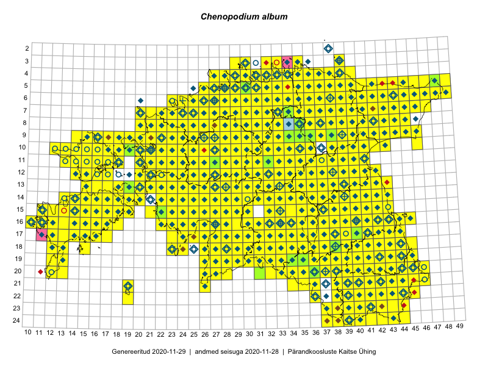

Chenopodium album — valge hanemalts
Amaranthaceae :: Chenopodium album L. (2178); Chenopodium reticulatum Aellen (1)

Kaart põhineb 2368 kirjel:
vaatlusi 1935
herbaareksemplare 244
PKÜ kirjeid1 157
ELFi kirjeid2 28
LVA kirjeid3 4
Taime kaasaegsed ja ajaloolised leiukohad asuvad 519 ruudus.
Tingmärgid ja leidudega ruutude arvud periooditi uues (u) ja 2005 andmestikus (v)
| █ | vahemik | u4 | v5 |
|---|---|---|---|
| █ | 2006–2020 | 506 | – |
| ◆/◇ | 1971–2005 | 447 | 464 |
| ○ | 1921–1970 | 100 | 8 |
| + | kuni 1920 | 19 | 0 |
| × | hävinud | – | 0 |
| ? | kaheldav | – | 0 |
| Ruut | Leidja(d) | Leiuaeg | Kirje |
|---|---|---|---|
| 16-28 | Indrek Tammekänd | 2020-10-09 | ruut/ala: Chenopodium album L. |
| 21-43 | Toomas Kukk, Kersti Tambets, Sten Mander, Kristine Fenske | 2020-09-30 | ruut/ala: Chenopodium album L. |
| 05-30 | Indrek Tammekänd, Tõnu Ploompuu | 2020-09-11 | TAA0154422: Chenopodium album L. |
| 05-30 | Indrek Tammekänd, Tõnu Ploompuu | 2020-09-11 | TAA0154423: Chenopodium album L. |
| 24-37;24-38 | Meeli Mesipuu | 2020-09-07 | PKÜ: 20483 |
| 16-23 | Peedu Saar | 2020-09-01 | PKÜ: 20905 |
| 16-22 | Peedu Saar | 2020-08-31 | ruut/ala: Chenopodium album L. |
| 16-22 | Peedu Saar | 2020-08-31 | PKÜ: 20654 |
| 16-22 | Peedu Saar | 2020-08-31 | PKÜ: 20656 |
| 10-36 | Peedu Saar | 2020-08-25 | ruut/ala: Chenopodium album L. |
| 13-17 | Mari Reitalu, Sirje Azarov | 2020-08-19 | ruut/ala: Chenopodium album L. |
| 15-35 | Peedu Saar | 2020-08-17 | PKÜ: 20533 |
| 15-35 | Peedu Saar | 2020-08-17 | PKÜ: 20538 |
| 12-22 | Trinus Haitjema | 2020-08-15 | punkt: Chenopodium album L. |
| 16-11 | Meeli Mesipuu | 2020-08-15 | PKÜ: 21046 |
| 14-19 | Meeli Mesipuu | 2020-08-12 | ruut/ala: Chenopodium album L. |
| 15-35 | Peedu Saar | 2020-08-10–2020-08-17 | ruut/ala: Chenopodium album L. |
| 24-42 | Toomas Kukk, Eerik Leibak | 2020-08-06 | ruut/ala: Chenopodium album L. |
| 10-13 | Peedu Saar | 2020-08-06 | PKÜ: 20602 |
| 22-41 | Eerik Leibak | 2020-08-05 | ELF: 24924 |
| 14-39 | Peedu Saar | 2020-08-03 | ruut/ala: Chenopodium album L. |
| 09-45 | Toomas Kukk | 2020-07-29 | PKÜ: 21086 |
| 08-43 | Toomas Kukk | 2020-07-28 | ruut/ala: Chenopodium album L. |
| 08-25 | Ott Luuk, Peedu Saar | 2020-07-23 | punkt: Chenopodium album L. |
| 14-14 | Mari Reitalu, Sirje Azarov, Aira Alasi | 2020-07-23 | ruut/ala: Chenopodium album L. |
| 05-32 | Rein Kalamees | 2020-07-12 | ruut/ala: Chenopodium album L. |
| 16-14 | Ott Luuk, Peedu Saar, Toomas Kukk | 2020-07-04 | punkt: Chenopodium album L. |
| 17-15 | Peedu Saar | 2020-07-03 | PKÜ: 21196 |
| 19-12 | Toomas Kukk | 2020-07-02 | ruut/ala: Chenopodium album L. |
| 17-11 | Ott Luuk, Rein Kalamees | 2020-07-01 | PKÜ: 20209 |
| 14-22 | Ott Luuk, Rein Kalamees | 2020-06-30 | PKÜ: 20587 |
| 20-37 | Ott Luuk | 2020-06-27 | ruut/ala: Chenopodium album L. |
| 08-28 | Ott Luuk | 2020-06-21 | ruut/ala: Chenopodium album L. |
| 03-34 | Ene Kook, Peedu Saar | 2020-06-09 | PKÜ: 20327 |
| 10-27 | Monika Laurits-Arro | 2020-06-06 | punkt: Chenopodium album L. |
| 22-43 | Margus Ots, Karin Pai, Margit Hirv, Marko Mägi, Kadi Külm, Kuido Külm, Ekke Rikka, Sigrid Ots, Triin Karusaar, Veljo Runnel, Uku Laur Pai | 2020-06-06 | punkt: Chenopodium album L. |
| 19-42 | Elis Sepp | 2020-06-06 | punkt: Chenopodium album L. |
| 09-44 | Ott Luuk | 2019-09-28 | ruut/ala: Chenopodium album L. |
| 18-41 | Peedu Saar, Ott Luuk | 2019-09-24 | ruut/ala: Chenopodium album L. |
| 11-32 | Indrek Tammekänd | 2019-09-22 | ruut/ala: Chenopodium album L. |
| 11-32 | Indrek Tammekänd | 2019-09-22 | TAA0151829: Chenopodium album L. |
| 17-13 | Mari Reitalu | 2019-09-20 | punkt: Chenopodium album L. |
| 10-22 | Toomas Kukk, Peedu Saar | 2019-09-19 | ruut/ala: Chenopodium album L. |
| 10-21 | Ott Luuk | 2019-09-19 | ruut/ala: Chenopodium album L. |
| 10-19 | Toomas Kukk, Peedu Saar | 2019-09-18 | punkt: Chenopodium album L. |
| 10-19 | Peedu Saar, Toomas Kukk | 2019-09-18 | ruut/ala: Chenopodium album L. |
| 09-20 | Ott Luuk | 2019-09-18 | punkt: Chenopodium album L. |
| 10-20 | Ott Luuk | 2019-09-18 | ruut/ala: Chenopodium album L. |
| 09-19 | Peedu Saar, Toomas Kukk | 2019-09-17 | punkt: Chenopodium album L. |
| 10-19 | Ott Luuk | 2019-09-17 | punkt: Chenopodium album L. |
| 07-45 | Thea Kull, Toomas Kukk | 2019-09-12 | ruut/ala: Chenopodium album L. |
| 07-43 | Meeli Mesipuu, Ott Luuk | 2019-09-12 | ruut/ala: Chenopodium album L. |
| 06-46 | Toomas Kukk, Thea Kull | 2019-09-11 | ruut/ala: Chenopodium album L. |
| 06-45 | Thea Kull, Toomas Kukk | 2019-09-11 | punkt: Chenopodium album L. |
| 05-46 | Thea Kull, Toomas Kukk | 2019-09-11 | ruut/ala: Chenopodium album L. |
| 09-46 | Peedu Saar, Timo Luhamäe | 2019-09-11 | ruut/ala: Chenopodium album L. |
| 05-43 | Ott Luuk, Meeli Mesipuu | 2019-09-11 | ruut/ala: Chenopodium album L. |
| 05-44 | Meeli Mesipuu, Ott Luuk | 2019-09-11 | ruut/ala: Chenopodium album L. |
| 10-39 | Toomas Kukk, Thea Kull | 2019-09-10 | ruut/ala: Chenopodium album L. |
| 10-40 | Toomas Kukk, Thea Kull | 2019-09-10 | ruut/ala: Chenopodium album L. |
| 09-40 | Toomas Kukk, Thea Kull | 2019-09-10 | punkt: Chenopodium album L. |
| 08-43 | Ott Luuk, Meeli Mesipuu | 2019-09-10 | ruut/ala: Chenopodium album L. |
| 07-44 | Ott Luuk, Meeli Mesipuu | 2019-09-10 | punkt: Chenopodium album L. |
| 08-25 | Ott Luuk, Peedu Saar | 2019-09-05 | punkt: Chenopodium album L. |
| 08-25 | Ott Luuk, Peedu Saar | 2019-09-05 | ruut/ala: Chenopodium album L. |
| 15-28 | Toomas Kukk, Peedu Saar | 2019-08-29 | ruut/ala: Chenopodium album L. |
| 13-32 | Ott Luuk, Eerik Leibak | 2019-08-29 | ruut/ala: Chenopodium album L. |
| 13-31 | Ott Luuk, Eerik Leibak | 2019-08-29 | ruut/ala: Chenopodium album L. |
| 12-31 | Ott Luuk, Eerik Leibak | 2019-08-29 | ruut/ala: Chenopodium album L. |
| 15-32 | Mari Reitalu, Thea Kull, Martin Tikk | 2019-08-29 | ruut/ala: Chenopodium album L. |
| 16-31 | Toomas Kukk, Peedu Saar, Martin Tikk | 2019-08-28 | ruut/ala: Chenopodium album L. |
| 14-31 | Ott Luuk, Eerik Leibak | 2019-08-28 | ruut/ala: Chenopodium album L. |
| 14-30 | Ott Luuk, Eerik Leibak | 2019-08-28 | ruut/ala: Chenopodium album L. |
| 13-30 | Mari Reitalu, Thea Kull | 2019-08-28 | ruut/ala: Chenopodium album L. |
| 13-29 | Mari Reitalu, Thea Kull | 2019-08-28 | ruut/ala: Chenopodium album L. |
| 14-29 | Mari Reitalu, Thea Kull | 2019-08-28 | ruut/ala: Chenopodium album L. |
| 17-33 | Toomas Kukk, Peedu Saar, Martin Tikk | 2019-08-27 | ruut/ala: Chenopodium album L. |
| 17-35 | Peedu Saar, Martin Tikk, Toomas Kukk | 2019-08-27 | ruut/ala: Chenopodium album L. |
| 13-36 | Ott Luuk, Eerik Leibak | 2019-08-27 | ruut/ala: Chenopodium album L. |
| 16-35 | Meeli Mesipuu, Timo Luhamäe | 2019-08-27 | ruut/ala: Chenopodium album L. |
| 15-35 | Meeli Mesipuu, Timo Luhamäe | 2019-08-27 | ruut/ala: Chenopodium album L. |
| 16-33 | Mari Reitalu, Thea Kull | 2019-08-27 | ruut/ala: Chenopodium album L. |
| 11-36 | Peedu Saar | 2019-08-10 | ruut/ala: Chenopodium album L. |
| 09-40 | Rein Kalamees, Toomas Kukk | 2019-08-09 | ruut/ala: Chenopodium album L. |
| 08-39 | Rein Kalamees, Toomas Kukk | 2019-08-08 | ruut/ala: Chenopodium album L. |
| 09-39 | Rein Kalamees, Toomas Kukk | 2019-08-08 | ruut/ala: Chenopodium album L. |
| 10-36 | Peedu Saar, Timo Luhamäe | 2019-08-08 | ruut/ala: Chenopodium album L. |
| 10-34 | Peedu Saar, Timo Luhamäe | 2019-08-08 | ruut/ala: Chenopodium album L. |
| 04-35 | Meeli Mesipuu | 2019-08-08 | ruut/ala: Chenopodium album L. |
| 06-35 | Toomas Kukk, Rein Kalamees, Kaur Maran | 2019-08-07 | ruut/ala: Chenopodium album L. |
| 07-34 | Toomas Kukk, Rein Kalamees, Kaur Maran | 2019-08-07 | ruut/ala: Chenopodium album L. |
| 03-33 | Ott Luuk, Jaak-Albert Metsoja | 2019-08-07 | ruut/ala: Chenopodium album L. |
| 04-34 | Rein Kalamees, Toomas Kukk | 2019-08-06 | ruut/ala: Chenopodium album L. |
| 04-38 | Ott Luuk, Jaak-Albert Metsoja | 2019-08-06 | ruut/ala: Chenopodium album L. |
| 04-36 | Meeli Mesipuu | 2019-08-06 | ruut/ala: Chenopodium album L. |
| 03-39 | Meeli Mesipuu | 2019-08-06 | ruut/ala: Chenopodium album L. |
| 06-32 | Toomas Kukk, Rein Kalamees | 2019-08-05 | ruut/ala: Chenopodium album L. |
| 05-32 | Rein Kalamees, Toomas Kukk | 2019-08-05 | ruut/ala: Chenopodium album L. |
| 08-36 | Ott Luuk, Jaak-Albert Metsoja | 2019-08-05 | ruut/ala: Chenopodium album L. |
| 06-38 | Meeli Mesipuu | 2019-08-05 | ruut/ala: Chenopodium album L. |
| 04-27 | Ott Luuk | 2019-08-02 | ruut/ala: Chenopodium album L. |
| 23-42 | Toomas Kukk, Peedu Saar | 2019-07-31 | ruut/ala: Chenopodium album L. |
| 10-32 | Ott Luuk | 2019-07-31 | ruut/ala: Chenopodium album L. |
| 07-22 | Peedu Saar | 2019-07-24 | ruut/ala: Chenopodium album L. |
| 19-35 | Ott Luuk, Peedu Saar | 2019-07-16 | ruut/ala: Chenopodium album L. |
| 03-32 | Rein Kalamees | 2019-07-13 | ruut/ala: Chenopodium album L. |
| 23-41 | Toomas Kukk, Indrek Tammekänd | 2019-07-12 | ruut/ala: Chenopodium album L. |
| 24-37 | Peedu Saar, Timo Luhamäe | 2019-07-12 | ruut/ala: Chenopodium album L. |
| 22-44 | Ott Luuk, Tiit Hallikma | 2019-07-12 | ruut/ala: Chenopodium album L. |
| 22-40 | Toomas Kukk, Indrek Tammekänd | 2019-07-11 | ruut/ala: Chenopodium album L. |
| 24-44 | Ott Luuk, Tiit Hallikma | 2019-07-11 | ruut/ala: Chenopodium album L. |
| 24-43 | Ott Luuk, Tiit Hallikma | 2019-07-11 | ruut/ala: Chenopodium album L. |
| 19-41 | Meeli Mesipuu | 2019-07-11 | ruut/ala: Chenopodium album L. |
| 21-40 | Toomas Kukk, Indrek Tammekänd | 2019-07-10 | ruut/ala: Chenopodium album L. |
| 21-42 | Toomas Kukk, Indrek Tammekänd | 2019-07-10 | ruut/ala: Chenopodium album L. |
| 20-46 | Ott Luuk, Tiit Hallikma | 2019-07-10 | ruut/ala: Chenopodium album L. |
| 20-45 | Ott Luuk, Tiit Hallikma | 2019-07-10 | ruut/ala: Chenopodium album L. |
| 18-41 | Meeli Mesipuu | 2019-07-10 | ruut/ala: Chenopodium album L. |
| 20-41 | Toomas Kukk, Indrek Tammekänd | 2019-07-09 | ruut/ala: Chenopodium album L. |
| 18-42 | Thea Kull, Meeli Mesipuu | 2019-07-09 | ruut/ala: Chenopodium album L. |
| 20-43 | Ott Luuk, Tiit Hallikma | 2019-07-09 | ruut/ala: Chenopodium album L. |
| 05-39 | Ott Luuk, Peedu Saar | 2019-07-05 | ruut/ala: Chenopodium album L. |
| 11-13 | Toomas Kukk | 2019-07-04 | ruut/ala: Chenopodium album L. |
| 14-39 | Ott Luuk, Kaili Kattai | 2019-07-03 | ruut/ala: Chenopodium album L. |
| 11-16 | Eerik Leibak | 2019-07-03 | ruut/ala: Chenopodium album L. |
| 05-28 | Meeli Mesipuu | 2019-06-30 | ruut/ala: Chenopodium album L. |
| 05-28 | Meeli Mesipuu | 2019-06-30 | ruut/ala: Chenopodium album L. |
| 05-28 | Meeli Mesipuu | 2019-06-30 | ruut/ala: Chenopodium album L. |
| 05-28 | Meeli Mesipuu | 2019-06-30 | ruut/ala: Chenopodium album L. |
| 16-27 | Indrek Tammekänd | 2019-06-27 | ruut/ala: Chenopodium album L. |
| 05-27 | Meeli Mesipuu | 2019-06-26 | ruut/ala: Chenopodium album L. |
| 05-27 | Meeli Mesipuu | 2019-06-26 | ruut/ala: Chenopodium album L. |
| 19-35 | Siiri Kõljalg | 2019-06-24 | HSSK20072: Chenopodium album L. |
| 06-27 | Meeli Mesipuu | 2019-06-22 | ruut/ala: Chenopodium album L. |
| 06-27 | Meeli Mesipuu | 2019-06-22 | ruut/ala: Chenopodium album L. |
| 06-27 | Meeli Mesipuu | 2019-06-16 | ruut/ala: Chenopodium album L. |
| 16-40 | Thea Kull | 2019-06-14 | ruut/ala: Chenopodium album L. |
| 19-35 | Siiri Kõljalg | 2019-06-14 | punkt: Chenopodium album L. |
| 16-40 | Margit Hirv, Veljo Runnel | 2019-06-14 | punkt: Chenopodium album L. |
| 16-27 | Indrek Tammekänd, Liine Tammekänd | 2019-06-14 | punkt: Chenopodium album L. |
| 16-40 | Aivi Kasik, Martin Tikk, Thea Kull, Weralda Lakeman | 2019-06-14 | punkt: Chenopodium album L. |
| 05-29 | Thea Kull | 2019-06-12 | ruut/ala: Chenopodium album L. |
| 08-37 | Ott Luuk, Peedu Saar | 2019-06-12 | ruut/ala: Chenopodium album L. |
| 05-28 | Thea Kull | 2019-06-11 | punkt: Chenopodium album L. |
| 10-38 | Peedu Saar, Ott Luuk | 2019-06-10 | ruut/ala: Chenopodium album L. |
| 16-45 | Ott Luuk | 2019-06-07 | ruut/ala: Chenopodium album L. |
| 16-28 | Indrek Tammekänd | 2019-05-29–2019-08-23 | ruut/ala: Chenopodium album L. |
| 15-21 | Toomas Kukk, Peedu Saar, Heikki Luhamaa | 2018-09-18 | ruut/ala: Chenopodium album L. |
| 15-22 | Toomas Kukk, Peedu Saar, Heikki Luhamaa | 2018-09-18 | ruut/ala: Chenopodium album L. |
| 15-22 | Toomas Kukk | 2018-09-18 | TAA0146195: Chenopodium album L. |
| 15-22 | Toomas Kukk | 2018-09-18 | TAA0146196: Chenopodium album L. |
| 15-22 | Toomas Kukk | 2018-09-18 | TAA0146197: Chenopodium album L. |
| 15-22 | Toomas Kukk | 2018-09-18 | TAA0146198: Chenopodium album L. |
| 07-43 | Peedu Saar, Toomas Kukk | 2018-09-04 | punkt: Chenopodium album L. |
| 05-47 | Peedu Saar, Toomas Kukk | 2018-09-04 | punkt: Chenopodium album L. |
| 09-37 | Toomas Kukk, Peedu Saar | 2018-09-03 | punkt: Chenopodium album L. |
| 05-39 | Toomas Kukk, Peedu Saar | 2018-09-03 | punkt: Chenopodium album L. |
| 05-40 | Toomas Kukk, Peedu Saar | 2018-09-03 | punkt: Chenopodium album L. |
| 05-41 | Peedu Saar, Toomas Kukk | 2018-09-03 | ruut/ala: Chenopodium album L. |
| 13-24 | Indrek Tammekänd | 2018-09-02 | ELF: 2313 |
| 16-16 | Toomas Kukk, Tiit Hallikma | 2018-08-30 | punkt: Chenopodium album L. |
| 10-32 | Meeli Mesipuu | 2018-08-23 | ruut/ala: Chenopodium album L. |
| 14-32 | Toomas Kukk | 2018-08-18 | ruut/ala: Chenopodium album L. |
| 12-25 | Toomas Kukk, Ott Luuk, Peedu Saar | 2018-08-17 | ruut/ala: Chenopodium album L. |
| 12-25 | Ott Luuk, Toomas Kukk, Peedu Saar, Sten Mander, Kersti Tambets | 2018-08-17 | ruut/ala: Chenopodium album L. |
| 11-25 | Peedu Saar, Toomas Kukk, Ott Luuk, Kersti Tambets, Sten Mander | 2018-08-16 | ruut/ala: Chenopodium album L. |
| 09-28 | Peedu Saar, Toomas Kukk, Ott Luuk, Kersti Tambets, Sten Mander | 2018-08-16 | ruut/ala: Chenopodium album L. |
| 12-31 | Ott Luuk, Toomas Kukk, Peedu Saar, Sten Mander, Kersti Tambets | 2018-08-16 | ruut/ala: Chenopodium album L. |
| 17-31 | Peedu Saar, Polina Degtjarenko | 2018-08-14 | ruut/ala: Chenopodium album L. |
| 05-44 | Indrek Tammekänd | 2018-08-10–2018-08-11 | ruut/ala: Chenopodium album L. |
| 17-41 | Toomas Kukk, Tiit Hallikma | 2018-08-09 | ruut/ala: Chenopodium album L. |
| 06-31 | Peedu Saar, Toomas Kukk | 2018-08-07 | ruut/ala: Chenopodium album L. |
| 08-28 | Tiina Elvisto, Riima Niidas | 2018-08-01 | punkt: Chenopodium album L. |
| 17-33 | Peedu Saar | 2018-08-01 | ruut/ala: Chenopodium album L. |
| 12-40 | Peedu Saar | 2018-07-20 | ruut/ala: Chenopodium album L. |
| 15-43 | Peedu Saar | 2018-07-20 | ruut/ala: Chenopodium album L. |
| 09-43 | Peedu Saar | 2018-07-19 | punkt: Chenopodium album L. |
| 23-42 | Toomas Kukk, Eerik Leibak | 2018-07-18 | ruut/ala: Chenopodium album L. |
| 22-42 | Toomas Kukk | 2018-07-18 | ruut/ala: Chenopodium album L. |
| 09-43 | Toomas Kukk | 2018-07-17 | ruut/ala: Chenopodium album L. |
| 10-18 | Toomas Kukk, Meeli Mesipuu | 2018-07-11 | ruut/ala: Chenopodium album L. |
| 20-45 | Toomas Kukk, Eerik Leibak | 2018-07-06 | ruut/ala: Chenopodium album L. |
| 06-23 | Ott Luuk, Meeli Mesipuu, Jaak-Albert Metsoja, Mari Metsoja, Peedu Saar | 2018-07-04–2018-07-06 | ruut/ala: Chenopodium album L. |
| 06-23 | Peedu Saar | 2018-07-04 | ruut/ala: Chenopodium album L. |
| 08-27 | Mari Reitalu, Sirje Azarov | 2018-07-01 | ruut/ala: Chenopodium album L. |
| 05-32 | Rein Kalamees | 2018-06-28 | ruut/ala: Chenopodium album L. |
| 21-46 | Rein Kalamees | 2018-06-19 | ruut/ala: Chenopodium album L. |
| 14-43 | Toomas Kukk, Ilmar Uibopuu | 2018-06-17 | ruut/ala: Chenopodium album L. |
| 17-40 | Margus Ots, Sigrid Ots, Ekke Rikka | 2018-06-16 | punkt: Chenopodium album L. |
| 19-26 | Iris Reinula | 2018-06-15 | punkt: Chenopodium album L. |
| 20-39 | Ilmar Uibopuu | 2018-06-15 | LVA: -1402512910 |
| 16-31 | Indrek Tammekänd | 2018-06-04–2018-06-05 | ruut/ala: Chenopodium album L. |
| 18-33 | Mari Reitalu, Elle Roosaluste | 2018-06-02 | ruut/ala: Chenopodium album L. |
| 18-24 | Indrek Tammekänd | 2018-05-31–2018-06-02 | ruut/ala: Chenopodium album L. |
| 16-14 | Toomas Kukk, Ilmar Uibopuu, Mari Reitalu | 2018-05-28 | ruut/ala: Chenopodium album L. |
| 03-29 | Toomas Kukk | 2017-09-29 | ruut/ala: Chenopodium album L. |
| 03-30 | Peedu Saar | 2017-09-29 | ruut/ala: Chenopodium album L. |
| 09-40 | Toomas Kukk, Peedu Saar | 2017-09-28 | ruut/ala: Chenopodium album L. |
| 08-39 | Peedu Saar, Toomas Kukk | 2017-09-28 | ruut/ala: Chenopodium album L. |
| 04-38 | Peedu Saar, Toomas Kukk | 2017-09-28 | ruut/ala: Chenopodium album L. |
| 08-38 | Peedu Saar, Toomas Kukk | 2017-09-27 | ruut/ala: Chenopodium album L. |
| 20-37 | Ott Luuk | 2017-09-17 | ruut/ala: Chenopodium album L. |
| 12-16 | Peedu Saar, Ott Luuk | 2017-09-15 | ruut/ala: Chenopodium album L. |
| 09-15 | Peedu Saar, Ott Luuk | 2017-09-15 | ruut/ala: Chenopodium album L. |
| 10-29 | Ott Luuk, Peedu Saar | 2017-09-15 | punkt: Chenopodium album L. |
| 09-15 | Ott Luuk, Peedu Saar | 2017-09-15 | punkt: Chenopodium album L. |
| 09-16 | Ott Luuk, Peedu Saar | 2017-09-14–2017-09-15 | ruut/ala: Chenopodium album L. |
| 10-15 | Ott Luuk, Peedu Saar | 2017-09-14 | ruut/ala: Chenopodium album L. |
| 10-13 | Ott Luuk, Peedu Saar | 2017-09-14 | ruut/ala: Chenopodium album L. |
| 10-14 | Ott Luuk, Peedu Saar | 2017-09-14 | punkt: Chenopodium album L. |
| 12-15 | Toomas Kukk, Indrek Tammekänd | 2017-09-13 | ruut/ala: Chenopodium album L. |
| 11-15 | Peedu Saar, Ott Luuk | 2017-09-13 | ruut/ala: Chenopodium album L. |
| 11-16 | Peedu Saar, Ott Luuk | 2017-09-13 | punkt: Chenopodium album L. |
| 11-14 | Ott Luuk, Peedu Saar | 2017-09-13 | ruut/ala: Chenopodium album L. |
| 11-16 | Ott Luuk, Peedu Saar | 2017-09-13 | ruut/ala: Chenopodium album L. |
| 09-17 | Peedu Saar, Ott Luuk | 2017-09-12 | ruut/ala: Chenopodium album L. |
| 11-18 | Peedu Saar, Ott Luuk | 2017-09-12 | ruut/ala: Chenopodium album L. |
| 11-18 | Ott Luuk, Peedu Saar | 2017-09-12 | ruut/ala: Chenopodium album L. |
| 12-17 | Toomas Kukk, Indrek Tammekänd | 2017-09-11 | ruut/ala: Chenopodium album L. |
| 11-17 | Toomas Kukk, Indrek Tammekänd | 2017-09-11 | ruut/ala: Chenopodium album L. |
| 10-16 | Peedu Saar, Ott Luuk | 2017-09-11 | ruut/ala: Chenopodium album L. |
| 10-17 | Ott Luuk, Peedu Saar | 2017-09-11 | ruut/ala: Chenopodium album L. |
| 11-17 | Toomas Kukk, Peeter Pärn | 2017-09-10 | ruut/ala: Chenopodium album L. |
| 10-32 | Ott Luuk | 2017-09-08 | ruut/ala: Chenopodium album L. |
| 10-24 | Peedu Saar, Toomas Kukk | 2017-09-07 | ruut/ala: Chenopodium album L. |
| 08-31 | Rein Kalamees | 2017-09-06 | ruut/ala: Chenopodium album L. |
| 18-27 | Peedu Saar, Toomas Kukk | 2017-09-06 | ruut/ala: Chenopodium album L. |
| 14-26 | Indrek Tammekänd | 2017-09-04 | ruut/ala: Chenopodium album L. |
| 18-28 | Toomas Kukk, Ott Luuk, Kersti Tambets, Timo Luhamäe, Sten Mander | 2017-08-30 | ruut/ala: Chenopodium album L. |
| 17-26 | Toomas Kukk, Ott Luuk, Kersti Tambets, Timo Luhamäe, Sten Mander | 2017-08-30 | ruut/ala: Chenopodium album L. |
| 18-31 | Toomas Kukk, Ott Luuk, Kersti Tambets, Timo Luhamäe, Sten Mander | 2017-08-29 | ruut/ala: Chenopodium album L. |
| 18-29 | Ott Luuk, Toomas Kukk, Sten Mander, Timo Luhamäe, Kersti Tambets | 2017-08-29 | ruut/ala: Chenopodium album L. |
| 17-31 | Ott Luuk, Toomas Kukk, Sten Mander, Kersti Tambets, Timo Luhamäe | 2017-08-29 | ruut/ala: Chenopodium album L. |
| 13-19 | Toomas Kukk, Peedu Saar, Ott Luuk | 2017-08-26 | ruut/ala: Chenopodium album L. |
| 16-14 | Mari Reitalu | 2017-08-24 | ruut/ala: Chenopodium album L. |
| 11-40 | Peedu Saar, Ott Luuk | 2017-08-23 | ruut/ala: Chenopodium album L. |
| 12-41 | Ott Luuk, Peedu Saar | 2017-08-23 | ruut/ala: Chenopodium album L. |
| 14-43 | Peedu Saar, Ott Luuk | 2017-08-21 | ruut/ala: Chenopodium album L. |
| 14-36 | Indrek Tammekänd | 2017-08-16 | ruut/ala: Chenopodium album L. |
| 14-35 | Peedu Saar | 2017-08-15–2017-09-16 | ruut/ala: Chenopodium album L. |
| 14-36 | Ott Luuk | 2017-08-15 | ruut/ala: Chenopodium album L. |
| 16-28 | Peedu Saar, Timo Luhamäe | 2017-08-11 | ruut/ala: Chenopodium album L. |
| 15-28 | Peedu Saar, Timo Luhamäe | 2017-08-11 | ruut/ala: Chenopodium album L. |
| 14-28 | Ott Luuk, Indrek Tammekänd | 2017-08-11 | ruut/ala: Chenopodium album L. |
| 14-27 | Ott Luuk, Indrek Tammekänd | 2017-08-11 | ruut/ala: Chenopodium album L. |
| 09-24 | Mari Reitalu, Eerik Leibak | 2017-08-11 | ruut/ala: Chenopodium album L. |
| 14-29 | Ilmar Uibopuu, Toomas Kukk | 2017-08-11 | ruut/ala: Chenopodium album L. |
| 15-29 | Ilmar Uibopuu, Toomas Kukk | 2017-08-11 | ruut/ala: Chenopodium album L. |
| 11-25 | Toomas Kukk, Eerik Leibak | 2017-08-10 | ruut/ala: Chenopodium album L. |
| 05-27 | Peedu Saar, Timo Luhamäe | 2017-08-10 | ruut/ala: Chenopodium album L. |
| 05-26 | Peedu Saar, Timo Luhamäe | 2017-08-10 | ruut/ala: Chenopodium album L. |
| 11-20 | Ott Luuk, Ilmar Uibopuu | 2017-08-10 | ruut/ala: Chenopodium album L. |
| 07-25 | Mari Reitalu, Indrek Tammekänd | 2017-08-10 | ruut/ala: Chenopodium album L. |
| 07-23 | Mari Reitalu, Indrek Tammekänd | 2017-08-10 | ruut/ala: Chenopodium album L. |
| 11-21 | Ilmar Uibopuu, Ott Luuk | 2017-08-10 | ruut/ala: Chenopodium album L. |
| 11-24 | Eerik Leibak, Toomas Kukk | 2017-08-10 | ruut/ala: Chenopodium album L. |
| 09-29 | Toomas Kukk, Ilmar Uibopuu, Kadri Kuusksalu | 2017-08-09 | ruut/ala: Chenopodium album L. |
| 08-30 | Thea Kull, Ott Luuk | 2017-08-09 | ruut/ala: Chenopodium album L. |
| 12-24 | Peedu Saar, Timo Luhamäe | 2017-08-09 | ruut/ala: Chenopodium album L. |
| 12-25 | Peedu Saar, Timo Luhamäe | 2017-08-09 | ruut/ala: Chenopodium album L. |
| 08-29 | Ott Luuk, Thea Kull | 2017-08-09 | ruut/ala: Chenopodium album L. |
| 12-29 | Meeli Mesipuu, Indrek Tammekänd | 2017-08-09 | ruut/ala: Chenopodium album L. |
| 12-27 | Mari Reitalu, Eerik Leibak | 2017-08-09 | ruut/ala: Chenopodium album L. |
| 12-26 | Mari Reitalu, Eerik Leibak | 2017-08-09 | ruut/ala: Chenopodium album L. |
| 09-28 | Ilmar Uibopuu, Kadri Kuusksalu, Toomas Kukk, Ott Luuk | 2017-08-09 | ruut/ala: Chenopodium album L. |
| 08-26 | Toomas Kukk, Ilmar Uibopuu, Kadri Kuusksalu | 2017-08-08 | ruut/ala: Chenopodium album L. |
| 07-26 | Toomas Kukk, Ilmar Uibopuu, Kadri Kuusksalu | 2017-08-08 | ruut/ala: Chenopodium album L. |
| 10-28 | Thea Kull, Ott Luuk | 2017-08-08 | ruut/ala: Chenopodium album L. |
| 07-28 | Peedu Saar, Timo Luhamäe | 2017-08-08 | ruut/ala: Chenopodium album L. |
| 07-27 | Peedu Saar, Timo Luhamäe | 2017-08-08 | ruut/ala: Chenopodium album L. |
| 11-28 | Ott Luuk, Thea Kull | 2017-08-08 | ruut/ala: Chenopodium album L. |
| 09-27 | Meeli Mesipuu, Indrek Tammekänd | 2017-08-08 | ruut/ala: Chenopodium album L. |
| 09-26 | Meeli Mesipuu, Indrek Tammekänd | 2017-08-08 | ruut/ala: Chenopodium album L. |
| 08-27 | Mari Reitalu, Eerik Leibak | 2017-08-08 | ruut/ala: Chenopodium album L. |
| 13-37 | Toomas Kukk, Ilmar Uibopuu | 2017-08-07 | ruut/ala: Chenopodium album L. |
| 13-33 | Toomas Kukk, Ilmar Uibopuu | 2017-08-07 | ruut/ala: Chenopodium album L. |
| 12-33 | Thea Kull, Ott Luuk | 2017-08-07 | ruut/ala: Chenopodium album L. |
| 14-34 | Peedu Saar, Timo Luhamäe | 2017-08-07 | ruut/ala: Chenopodium album L. |
| 13-34 | Peedu Saar, Timo Luhamäe | 2017-08-07 | ruut/ala: Chenopodium album L. |
| 12-32 | Ott Luuk, Thea Kull | 2017-08-07 | ruut/ala: Chenopodium album L. |
| 18-27 | Peedu Saar, Polina Degtjarenko | 2017-08-05 | ruut/ala: Chenopodium album L. |
| 07-35 | Toomas Kukk | 2017-08-03 | ruut/ala: Chenopodium album L. |
| 07-20 | Toomas Kukk | 2017-08-03 | ruut/ala: Chenopodium album L. |
| 11-34 | Thea Kull, Ott Luuk | 2017-08-03 | ruut/ala: Chenopodium album L. |
| 12-34 | Ott Luuk, Thea Kull | 2017-08-03 | ruut/ala: Chenopodium album L. |
| 16-39 | Thea Kull, Ott Luuk | 2017-08-01 | ruut/ala: Chenopodium album L. |
| 16-37 | Ott Luuk, Thea Kull | 2017-08-01 | ruut/ala: Chenopodium album L. |
| 07-24 | Toomas Kukk, Ilmar Uibopuu | 2017-07-30 | ruut/ala: Chenopodium album L. |
| 08-23 | Toomas Kukk, Ilmar Uibopuu | 2017-07-30 | ruut/ala: Chenopodium album L. |
| 07-22 | Toomas Kukk, Ilmar Uibopuu | 2017-07-29 | ruut/ala: Chenopodium album L. |
| 08-22 | Toomas Kukk, Ilmar Uibopuu | 2017-07-29 | ruut/ala: Chenopodium album L. |
| 07-21 | Toomas Kukk, Ilmar Uibopuu | 2017-07-28 | ruut/ala: Chenopodium album L. |
| 08-21 | Toomas Kukk, Ilmar Uibopuu | 2017-07-28 | ruut/ala: Chenopodium album L. |
| 21-36 | Peedu Saar, Ott Luuk | 2017-07-28 | ruut/ala: Chenopodium album L. |
| 22-36 | Ott Luuk, Peedu Saar | 2017-07-28 | ruut/ala: Chenopodium album L. |
| 06-23 | Toomas Kukk | 2017-07-27 | ruut/ala: Chenopodium album L. |
| 23-39 | Peedu Saar, Ott Luuk | 2017-07-27 | ruut/ala: Chenopodium album L. |
| 22-39 | Ott Luuk, Peedu Saar | 2017-07-27 | ruut/ala: Chenopodium album L. |
| 06-24 | Ilmar Uibopuu, Kadri Kuusksalu | 2017-07-27 | ruut/ala: Chenopodium album L. |
| 06-23 | Toomas Kukk, Ilmar Uibopuu, Kadri Kuusksalu | 2017-07-26 | ruut/ala: Chenopodium album L. |
| 14-39 | Peedu Saar | 2017-07-26 | ruut/ala: Chenopodium album L. |
| 19-38 | Peedu Saar, Ott Luuk | 2017-07-25 | ruut/ala: Chenopodium album L. |
| 20-38 | Ott Luuk, Peedu Saar | 2017-07-25 | ruut/ala: Chenopodium album L. |
| 12-42 | Peedu Saar | 2017-07-24 | ruut/ala: Chenopodium album L. |
| 16-42 | Peedu Saar | 2017-07-23 | ruut/ala: Chenopodium album L. |
| 06-48 | Toomas Kukk | 2017-07-21 | ruut/ala: Chenopodium album L. |
| 06-49 | Toomas Kukk | 2017-07-21 | ruut/ala: Chenopodium album L. |
| 06-31 | Peedu Saar, Ott Luuk | 2017-07-21 | ruut/ala: Chenopodium album L. |
| 06-33 | Ott Luuk, Peedu Saar | 2017-07-21 | ruut/ala: Chenopodium album L. |
| 05-31 | Ott Luuk, Peedu Saar | 2017-07-20 | ruut/ala: Chenopodium album L. |
| 17-23 | Indrek Tammekänd, Eike Tammekänd | 2017-07-20 | ruut/ala: Chenopodium album L. |
| 16-23 | Indrek Tammekänd, Eike Tammekänd | 2017-07-20 | ruut/ala: Chenopodium album L. |
| 23-39 | Triin Reitalu, Ansis Blaus | 2017-07-19 | punkt: Chenopodium album L. |
| 06-34 | Peedu Saar, Ott Luuk | 2017-07-19 | ruut/ala: Chenopodium album L. |
| 08-40 | Peedu Saar, Ott Luuk | 2017-07-18 | ruut/ala: Chenopodium album L. |
| 08-38 | Ott Luuk, Peedu Saar | 2017-07-18 | ruut/ala: Chenopodium album L. |
| 17-28 | Indrek Tammekänd | 2017-07-18 | ruut/ala: Chenopodium album L. |
| 21-44 | Meeli Mesipuu | 2017-07-17–2017-07-20 | ruut/ala: Chenopodium album L. |
| 08-25 | Helle Mäemets, Kadi Palmik | 2017-07-16 | ruut/ala: Chenopodium album L. |
| 20-45 | Meeli Mesipuu | 2017-07-12–2017-07-18 | ruut/ala: Chenopodium album L. |
| 16-40 | Peedu Saar | 2017-07-10–2017-07-11 | ruut/ala: Chenopodium album L. |
| 18-29 | Indrek Tammekänd | 2017-07-05 | ruut/ala: Chenopodium album L. |
| 15-41 | Ott Luuk, Peedu Saar | 2017-07-04 | ruut/ala: Chenopodium album L. |
| 11-15 | Ott Luuk, Toomas Kukk, Peedu Saar, Sander Laherand | 2017-06-30 | ruut/ala: Chenopodium album L. |
| 16-34 | Thea Kull, Ott Luuk | 2017-06-22 | ruut/ala: Chenopodium album L. |
| 16-35 | Ott Luuk, Thea Kull | 2017-06-22 | ruut/ala: Chenopodium album L. |
| 15-40 | Peedu Saar | 2017-06-21–2017-06-22 | ruut/ala: Chenopodium album L. |
| 17-37 | Thea Kull, Ott Luuk | 2017-06-21 | ruut/ala: Chenopodium album L. |
| 16-36 | Ott Luuk, Thea Kull | 2017-06-21 | ruut/ala: Chenopodium album L. |
| 14-35 | Peedu Saar, Ott Luuk | 2017-06-20 | ruut/ala: Chenopodium album L. |
| 15-35 | Ott Luuk, Peedu Saar | 2017-06-20 | ruut/ala: Chenopodium album L. |
| 15-12 | Toomas Kukk, Meeli Mesipuu | 2016-10-08 | ruut/ala: Chenopodium album L. |
| 17-13 | Ott Luuk, Peedu Saar | 2016-10-08 | ruut/ala: Chenopodium album L. |
| 18-12 | Toomas Kukk, Meeli Mesipuu, Mari Reitalu | 2016-10-07 | ruut/ala: Chenopodium album L. |
| 19-12 | Ott Luuk, Peedu Saar | 2016-10-07 | ruut/ala: Chenopodium album L. |
| 15-11 | Meeli Mesipuu, Toomas Kukk, Mari Reitalu | 2016-10-07 | ruut/ala: Chenopodium album L. |
| 14-13 | Toomas Kukk, Meeli Mesipuu, Mari Reitalu | 2016-10-06 | ruut/ala: Chenopodium album L. |
| 19-31 | Ott Luuk, Peedu Saar | 2016-10-06 | ruut/ala: Chenopodium album L. |
| 15-13 | Meeli Mesipuu, Toomas Kukk, Mari Reitalu | 2016-10-06 | ruut/ala: Chenopodium album L. |
| 16-13 | Toomas Kukk, Meeli Mesipuu | 2016-10-05 | ruut/ala: Chenopodium album L. |
| 07-32 | Peedu Saar, Ott Luuk | 2016-09-28 | ruut/ala: Chenopodium album L. |
| 08-32 | Ott Luuk, Peedu Saar | 2016-09-28 | ruut/ala: Chenopodium album L. |
| 16-14 | Meeli Mesipuu | 2016-09-26 | ruut/ala: Chenopodium album L. |
| 16-16 | Meeli Mesipuu | 2016-09-24 | ruut/ala: Chenopodium album L. |
| 15-15 | Meeli Mesipuu | 2016-09-23 | ruut/ala: Chenopodium album L. |
| 21-35 | Ott Luuk, Peedu Saar | 2016-09-22 | ruut/ala: Chenopodium album L. |
| 18-23 | Ott Luuk, Peedu Saar | 2016-09-21 | ruut/ala: Chenopodium album L. |
| 20-32 | Meeli Mesipuu, Ott Luuk | 2016-09-18 | ruut/ala: Chenopodium album L. |
| 09-32 | Toomas Kukk, Peedu Saar | 2016-09-16 | ruut/ala: Chenopodium album L. |
| 09-18 | Ott Luuk, Meeli Mesipuu | 2016-09-16 | ruut/ala: Chenopodium album L. |
| 09-19 | Meeli Mesipuu, Ott Luuk | 2016-09-16 | ruut/ala: Chenopodium album L. |
| 08-33 | Peedu Saar, Toomas Kukk | 2016-09-15 | ruut/ala: Chenopodium album L. |
| 10-19 | Ott Luuk, Meeli Mesipuu | 2016-09-15 | ruut/ala: Chenopodium album L. |
| 10-19 | Meeli Mesipuu, Ott Luuk | 2016-09-15 | TAA0144106: Chenopodium album L. |
| 06-33 | Peedu Saar, Toomas Kukk | 2016-09-14 | ruut/ala: Chenopodium album L. |
| 05-43 | Peedu Saar, Toomas Kukk | 2016-09-13 | ruut/ala: Chenopodium album L. |
| 07-33 | Peedu Saar, Toomas Kukk | 2016-09-13 | ruut/ala: Chenopodium album L. |
| 05-44 | Peedu Saar, Toomas Kukk | 2016-09-13 | ruut/ala: Chenopodium album L. |
| 22-19 | Ott Luuk, Meeli Mesipuu | 2016-09-10–2016-09-11 | ruut/ala: Chenopodium album L. |
| 21-19 | Meeli Mesipuu, Ott Luuk | 2016-09-10 | ruut/ala: Chenopodium album L. |
| 07-30 | Toomas Kukk, Peedu Saar | 2016-09-09 | ruut/ala: Chenopodium album L. |
| 08-30 | Peedu Saar, Toomas Kukk | 2016-09-09 | ruut/ala: Chenopodium album L. |
| 06-32 | Toomas Kukk, Peedu Saar | 2016-09-08 | ruut/ala: Chenopodium album L. |
| 06-31 | Peedu Saar, Toomas Kukk | 2016-09-08 | ruut/ala: Chenopodium album L. |
| 20-44 | Meeli Mesipuu | 2016-09-08 | ruut/ala: Chenopodium album L. |
| 09-31 | Peedu Saar, Ott Luuk | 2016-09-07 | ruut/ala: Chenopodium album L. |
| 09-30 | Ott Luuk, Peedu Saar | 2016-09-06–2016-09-07 | ruut/ala: Chenopodium album L. |
| 05-38 | Thea Kull, Toomas Kukk | 2016-09-06 | ruut/ala: Chenopodium album L. |
| 04-39 | Thea Kull, Toomas Kukk | 2016-09-05 | ruut/ala: Chenopodium album L. |
| 05-38 | Thea Kull, Toomas Kukk | 2016-09-05 | ruut/ala: Chenopodium album L. |
| 16-43 | Meeli Mesipuu | 2016-09-02 | ruut/ala: Chenopodium album L. |
| 16-17 | Peedu Saar, Ott Luuk | 2016-09-01 | ruut/ala: Chenopodium album L. |
| 05-32 | Toomas Kukk, Sander Laherand | 2016-08-31 | ruut/ala: Chenopodium album L. |
| 04-31 | Sander Laherand, Toomas Kukk | 2016-08-31 | ruut/ala: Chenopodium album L. |
| 14-16 | Ott Luuk, Peedu Saar | 2016-08-31 | ruut/ala: Chenopodium album L. |
| 10-46 | Meeli Mesipuu, Karin Kikas | 2016-08-31 | ruut/ala: Chenopodium album L. |
| 06-30 | Toomas Kukk, Sander Laherand | 2016-08-30 | ruut/ala: Chenopodium album L. |
| 05-31 | Sander Laherand, Toomas Kukk | 2016-08-30 | ruut/ala: Chenopodium album L. |
| 18-15 | Peedu Saar | 2016-08-30 | ruut/ala: Chenopodium album L. |
| 17-16 | Ott Luuk, Peedu Saar | 2016-08-30 | ruut/ala: Chenopodium album L. |
| 05-29 | Toomas Kukk, Sander Laherand | 2016-08-29 | ruut/ala: Chenopodium album L. |
| 06-29 | Sander Laherand, Toomas Kukk | 2016-08-29 | ruut/ala: Chenopodium album L. |
| 13-17 | Peedu Saar, Ott Luuk | 2016-08-29 | ruut/ala: Chenopodium album L. |
| 14-17 | Ott Luuk, Peedu Saar | 2016-08-29 | ruut/ala: Chenopodium album L. |
| 15-18 | Mari Reitalu, Hannes Pehlak | 2016-08-26 | ruut/ala: Chenopodium album L. |
| 17-44 | Peedu Saar | 2016-08-24 | ruut/ala: Chenopodium album L. |
| 20-36 | Thea Kull, Ott Luuk | 2016-08-23 | ruut/ala: Chenopodium album L. |
| 18-38 | Ott Luuk, Thea Kull | 2016-08-23 | ruut/ala: Chenopodium album L. |
| 20-36 | Ott Luuk, Thea Kull | 2016-08-23 | TAA0145603: Chenopodium album L. |
| 10-30 | Indrek Tammekänd, Janno Tammekänd, Üllar Tammekänd, Andreas Tammekänd, Tene Johanson | 2016-08-20–2016-08-21 | ruut/ala: Chenopodium album L. |
| 10-29 | Indrek Tammekänd, Janno Tammekänd, Üllar Tammekänd, Andreas Tammekänd, Tene Johanson | 2016-08-20–2016-08-21 | ruut/ala: Chenopodium album L. |
| 22-44 | Peedu Saar, Karin Kikas | 2016-08-19 | ruut/ala: Chenopodium album L. |
| 23-44 | Peedu Saar, Karin Kikas | 2016-08-19 | ruut/ala: Chenopodium album L. |
| 22-45 | Peedu Saar, Karin Kikas | 2016-08-18 | ruut/ala: Chenopodium album L. |
| 21-44 | Peedu Saar, Karin Kikas | 2016-08-18 | ruut/ala: Chenopodium album L. |
| 14-19 | Mari Reitalu, Sirje Azarov | 2016-08-18 | ruut/ala: Chenopodium album L. |
| 13-20 | Mari Reitalu, Sirje Azarov | 2016-08-17 | ruut/ala: Chenopodium album L. |
| 14-20 | Mari Reitalu, Sirje Azarov | 2016-08-17 | ruut/ala: Chenopodium album L. |
| 13-19 | Mari Reitalu, Sirje Azarov | 2016-08-16 | ruut/ala: Chenopodium album L. |
| 13-18 | Mari Reitalu, Triin Reitalu | 2016-08-15 | ruut/ala: Chenopodium album L. |
| 14-18 | Mari Reitalu | 2016-08-15 | ruut/ala: Chenopodium album L. |
| 15-19 | Mari Reitalu, Triin Reitalu | 2016-08-14 | ruut/ala: Chenopodium album L. |
| 15-17 | Peedu Saar, Toomas Kukk | 2016-08-13 | ruut/ala: Chenopodium album L. |
| 15-16 | Meeli Mesipuu, Maret Gerz | 2016-08-13 | ruut/ala: Chenopodium album L. |
| 17-17 | Toomas Kukk, Meeli Mesipuu | 2016-08-12 | ruut/ala: Chenopodium album L. |
| 17-16 | Toomas Kukk, Meeli Mesipuu | 2016-08-12 | ruut/ala: Chenopodium album L. |
| 14-14 | Peedu Saar, Maret Gerz | 2016-08-12 | ruut/ala: Chenopodium album L. |
| 15-14 | Maret Gerz, Peedu Saar | 2016-08-12 | ruut/ala: Chenopodium album L. |
| 17-14 | Toomas Kukk, Meeli Mesipuu, Johannes Kõdar | 2016-08-11 | ruut/ala: Chenopodium album L. |
| 12-17 | Thea Kull, Sander Laherand | 2016-08-11 | ruut/ala: Chenopodium album L. |
| 12-16 | Sander Laherand, Thea Kull, Nele Jõessar | 2016-08-11 | ruut/ala: Chenopodium album L. |
| 14-15 | Peedu Saar, Maret Gerz | 2016-08-11 | ruut/ala: Chenopodium album L. |
| 04-39 | Ott Luuk, Kersti Tambets, Ülle Jõgar, Janika Sammasto, Sten Mander | 2016-08-11 | ruut/ala: Chenopodium album L. |
| 17-15 | Meeli Mesipuu, Toomas Kukk, Johannes Kõdar | 2016-08-11 | ruut/ala: Chenopodium album L. |
| 13-15 | Maret Gerz, Peedu Saar | 2016-08-11 | ruut/ala: Chenopodium album L. |
| 12-15 | Toomas Kukk, Meeli Mesipuu | 2016-08-10 | ruut/ala: Chenopodium album L. |
| 12-14 | Toomas Kukk, Meeli Mesipuu | 2016-08-10 | ruut/ala: Chenopodium album L. |
| 11-13 | Thea Kull, Peedu Saar | 2016-08-10 | ruut/ala: Chenopodium album L. |
| 10-12 | Sander Laherand, Maret Gerz, Nele Jõessar | 2016-08-10 | ruut/ala: Chenopodium album L. |
| 10-13 | Maret Gerz, Sander Laherand | 2016-08-10 | ruut/ala: Chenopodium album L. |
| 14-18 | Mari Reitalu, Sirje Azarov | 2016-08-09–2016-08-10 | ruut/ala: Chenopodium album L. |
| 10-15 | Toomas Kukk, Sander Laherand, Nele Jõessar | 2016-08-09 | ruut/ala: Chenopodium album L. |
| 11-15 | Thea Kull, Peedu Saar | 2016-08-09 | ruut/ala: Chenopodium album L. |
| 10-14 | Sander Laherand, Toomas Kukk, Nele Jõessar | 2016-08-09 | ruut/ala: Chenopodium album L. |
| 09-40 | Ott Luuk, Eerik Leibak | 2016-08-09 | ruut/ala: Chenopodium album L. |
| 09-39 | Ott Luuk, Eerik Leibak | 2016-08-09 | ruut/ala: Chenopodium album L. |
| 10-16 | Meeli Mesipuu, Maret Gerz | 2016-08-09 | ruut/ala: Chenopodium album L. |
| 09-14 | Meeli Mesipuu, Maret Gerz | 2016-08-09 | ruut/ala: Chenopodium album L. |
| 11-16 | Toomas Kukk, Thea Kull | 2016-08-08 | ruut/ala: Chenopodium album L. |
| 11-18 | Sander Laherand, Peedu Saar, Nele Jõessar | 2016-08-08 | ruut/ala: Chenopodium album L. |
| 10-38 | Ott Luuk, Eerik Leibak | 2016-08-08 | ruut/ala: Chenopodium album L. |
| 09-38 | Ott Luuk, Eerik Leibak | 2016-08-08 | ruut/ala: Chenopodium album L. |
| 09-38 | Ott Luuk, Eerik Leibak | 2016-08-08 | TAA0145600: Chenopodium album L. |
| 16-18 | Mari Reitalu, Sirje Azarov | 2016-08-08 | ruut/ala: Chenopodium album L. |
| 20-12 | Mari Reitalu, Sirje Azarov | 2016-08-08 | ruut/ala: Chenopodium album L. |
| 20-13 | Mari Reitalu, Sirje Azarov | 2016-08-08 | ruut/ala: Chenopodium album L. |
| 11-17 | Maret Gerz, Meeli Mesipuu | 2016-08-08 | ruut/ala: Chenopodium album L. |
| 21-43 | Thea Kull, Peedu Saar | 2016-08-05 | ruut/ala: Chenopodium album L. |
| 20-43 | Peedu Saar, Thea Kull | 2016-08-05 | ruut/ala: Chenopodium album L. |
| 09-42 | Ott Luuk, Eerik Leibak | 2016-08-05 | ruut/ala: Chenopodium album L. |
| 09-41 | Ott Luuk, Eerik Leibak | 2016-08-05 | ruut/ala: Chenopodium album L. |
| 22-42 | Thea Kull, Peedu Saar | 2016-08-04 | ruut/ala: Chenopodium album L. |
| 22-43 | Peedu Saar, Thea Kull | 2016-08-04 | ruut/ala: Chenopodium album L. |
| 10-41 | Ott Luuk, Eerik Leibak | 2016-08-04 | ruut/ala: Chenopodium album L. |
| 10-42 | Ott Luuk, Eerik Leibak | 2016-08-04 | ruut/ala: Chenopodium album L. |
| 05-28 | Toomas Kukk, Peedu Saar | 2016-08-03 | ruut/ala: Chenopodium album L. |
| 10-39 | Ott Luuk, Eerik Leibak | 2016-08-03 | ruut/ala: Chenopodium album L. |
| 10-40 | Ott Luuk, Eerik Leibak | 2016-08-03 | ruut/ala: Chenopodium album L. |
| 18-13 | Mari Reitalu, Sirje Azarov | 2016-07-31 | ruut/ala: Chenopodium album L. |
| 19-13 | Mari Reitalu, Sirje Azarov | 2016-07-31 | ruut/ala: Chenopodium album L. |
| 07-40 | Toomas Kukk, Tiit Hallikma | 2016-07-29 | ruut/ala: Chenopodium album L. |
| 04-30 | Sander Laherand, Eerik Leibak | 2016-07-29 | ruut/ala: Chenopodium album L. |
| 05-30 | Sander Laherand, Eerik Leibak | 2016-07-29 | ruut/ala: Chenopodium album L. |
| 08-42 | Peedu Saar, Timo Luhamäe | 2016-07-29 | ruut/ala: Chenopodium album L. |
| 08-41 | Peedu Saar, Timo Luhamäe | 2016-07-29 | ruut/ala: Chenopodium album L. |
| 08-39 | Meeli Mesipuu, Liina Oja | 2016-07-29 | ruut/ala: Chenopodium album L. |
| 07-39 | Meeli Mesipuu, Liina Oja | 2016-07-29 | ruut/ala: Chenopodium album L. |
| 17-41 | Kersti Püssa, Rein Kalamees | 2016-07-29 | ruut/ala: Chenopodium album L. |
| 15-36 | Karin Kaljund, Kaire Lanno | 2016-07-29 | ruut/ala: Chenopodium album L. |
| 09-43 | Hannes Pehlak, Ott Luuk | 2016-07-29 | ruut/ala: Chenopodium album L. |
| 10-43 | Hannes Pehlak, Ott Luuk | 2016-07-29 | ruut/ala: Chenopodium album L. |
| 04-40 | Tiit Hallikma, Ott Luuk | 2016-07-28 | ruut/ala: Chenopodium album L. |
| 06-40 | Sander Laherand, Peedu Saar | 2016-07-28 | ruut/ala: Chenopodium album L. |
| 05-40 | Peedu Saar, Sander Laherand | 2016-07-28 | ruut/ala: Chenopodium album L. |
| 05-39 | Ott Luuk, Tiit Hallikma | 2016-07-28 | ruut/ala: Chenopodium album L. |
| 04-33 | Meeli Mesipuu, Timo Luhamäe | 2016-07-28 | ruut/ala: Chenopodium album L. |
| 03-32 | Meeli Mesipuu, Timo Luhamäe | 2016-07-28 | ruut/ala: Chenopodium album L. |
| 07-38 | Liina Oja, Eerik Leibak | 2016-07-28 | ruut/ala: Chenopodium album L. |
| 08-38 | Liina Oja, Eerik Leibak | 2016-07-28 | ruut/ala: Chenopodium album L. |
| 17-40 | Kersti Püssa, Rein Kalamees | 2016-07-28 | ruut/ala: Chenopodium album L. |
| 05-38 | Hannes Pehlak, Toomas Kukk, Susanna Vain | 2016-07-28 | ruut/ala: Chenopodium album L. |
| 04-39 | Hannes Pehlak, Toomas Kukk, Susanna Vain | 2016-07-28 | ruut/ala: Chenopodium album L. |
| 05-36 | Tõnu Ploompuu, Eerik Leibak | 2016-07-27 | ruut/ala: Chenopodium album L. |
| 05-37 | Tõnu Ploompuu, Eerik Leibak | 2016-07-27 | ruut/ala: Chenopodium album L. |
| 07-35 | Toomas Kukk, Sander Laherand, Nele Jõessar | 2016-07-27 | ruut/ala: Chenopodium album L. |
| 08-36 | Thea Kull, Timo Luhamäe | 2016-07-27 | ruut/ala: Chenopodium album L. |
| 07-36 | Thea Kull, Timo Luhamäe | 2016-07-27 | ruut/ala: Chenopodium album L. |
| 08-35 | Sander Laherand, Toomas Kukk, Nele Jõessar | 2016-07-27 | ruut/ala: Chenopodium album L. |
| 05-33 | Ott Luuk, Hannes Pehlak | 2016-07-27 | ruut/ala: Chenopodium album L. |
| 05-34 | Ott Luuk, Hannes Pehlak | 2016-07-27 | ruut/ala: Chenopodium album L. |
| 07-37 | Meeli Mesipuu, Tiit Hallikma | 2016-07-27 | ruut/ala: Chenopodium album L. |
| 06-37 | Meeli Mesipuu, Tiit Hallikma | 2016-07-27 | ruut/ala: Chenopodium album L. |
| 16-41 | Kersti Püssa, Rein Kalamees | 2016-07-27 | ruut/ala: Chenopodium album L. |
| 18-23 | Karin Kaljund, Kaire Lanno, Indrek Melts | 2016-07-27 | ruut/ala: Chenopodium album L. |
| 08-27 | Erkki Otsman, Sergei Smirnov | 2016-07-27 | ruut/ala: Chenopodium album L. |
| 05-42 | Tiit Hallikma, Tõnu Ploompuu | 2016-07-26 | ruut/ala: Chenopodium album L. |
| 05-41 | Tiit Hallikma, Tõnu Ploompuu | 2016-07-26 | ruut/ala: Chenopodium album L. |
| 04-38 | Thea Kull, Susanna Vain, Eerik Leibak | 2016-07-26 | ruut/ala: Chenopodium album L. |
| 04-37 | Thea Kull, Eerik Leibak, Susanna Vain | 2016-07-26 | ruut/ala: Chenopodium album L. |
| 04-35 | Sander Laherand, Ott Luuk, Nele Jõessar | 2016-07-26 | ruut/ala: Chenopodium album L. |
| 04-32 | Peedu Saar, Timo Luhamäe | 2016-07-26 | ruut/ala: Chenopodium album L. |
| 03-33 | Peedu Saar, Timo Luhamäe | 2016-07-26 | ruut/ala: Chenopodium album L. |
| 03-35 | Ott Luuk, Sander Laherand, Nele Jõessar | 2016-07-26 | ruut/ala: Chenopodium album L. |
| 04-36 | Meeli Mesipuu, Liina Oja | 2016-07-26 | ruut/ala: Chenopodium album L. |
| 14-14 | Mari Reitalu, Sirje Azarov | 2016-07-26 | ruut/ala: Chenopodium album L. |
| 18-24 | Karin Kaljund, Kaire Lanno, Indrek Melts | 2016-07-26 | ruut/ala: Chenopodium album L. |
| 04-34 | Hannes Pehlak, Toomas Kukk | 2016-07-26 | ruut/ala: Chenopodium album L. |
| 10-35 | Toomas Kukk, Tiit Hallikma | 2016-07-25 | ruut/ala: Chenopodium album L. |
| 09-35 | Toomas Kukk, Tiit Hallikma | 2016-07-25 | ruut/ala: Chenopodium album L. |
| 06-39 | Thea Kull, Hannes Pehlak | 2016-07-25 | ruut/ala: Chenopodium album L. |
| 04-29 | Sander Laherand, Tõnu Ploompuu, Nele Jõessar | 2016-07-25 | ruut/ala: Chenopodium album L. |
| 04-28 | Sander Laherand, Tõnu Ploompuu, Nele Jõessar | 2016-07-25 | ruut/ala: Chenopodium album L. |
| 09-36 | Peedu Saar, Liina Oja, Susanna Vain | 2016-07-25 | ruut/ala: Chenopodium album L. |
| 09-34 | Ott Luuk, Eerik Leibak | 2016-07-25 | ruut/ala: Chenopodium album L. |
| 09-33 | Ott Luuk, Eerik Leibak | 2016-07-25 | ruut/ala: Chenopodium album L. |
| 11-36 | Meeli Mesipuu, Timo Luhamäe | 2016-07-25 | ruut/ala: Chenopodium album L. |
| 10-36 | Meeli Mesipuu, Timo Luhamäe | 2016-07-25 | ruut/ala: Chenopodium album L. |
| 17-38 | Kersti Püssa, Rein Kalamees | 2016-07-25 | ruut/ala: Chenopodium album L. |
| 15-37 | Karin Kaljund, Kaire Lanno | 2016-07-25 | ruut/ala: Chenopodium album L. |
| 06-38 | Hannes Pehlak, Thea Kull | 2016-07-25 | ruut/ala: Chenopodium album L. |
| 10-30 | Erkki Otsman, Sergei Smirnov | 2016-07-25 | ruut/ala: Chenopodium album L. |
| 08-31 | Erkki Otsman, Sergei Smirnov | 2016-07-24 | ruut/ala: Chenopodium album L. |
| 13-38 | Eeva-Maria Jeletsky, Tarmo Niitla | 2016-07-23 | ruut/ala: Chenopodium album L. |
| 14-37 | Eeva-Maria Jeletsky, Tarmo Niitla | 2016-07-23 | ruut/ala: Chenopodium album L. |
| 12-33 | Tõnu Ploompuu, Marko Veinbergs, Eerik Leibak | 2016-07-22 | ruut/ala: Chenopodium album L. |
| 11-33 | Tõnu Ploompuu, Marko Veinbergs, Eerik Leibak | 2016-07-22 | ruut/ala: Chenopodium album L. |
| 12-36 | Toomas Kukk, Raivo Kalle | 2016-07-22 | ruut/ala: Chenopodium album L. |
| 13-36 | Toomas Kukk, Raivo Kalle | 2016-07-22 | ruut/ala: Chenopodium album L. |
| 10-31 | Toivo Sepp, Peedu Saar | 2016-07-22 | ruut/ala: Chenopodium album L. |
| 15-34 | Thea Kull, Tiit Hallikma | 2016-07-22 | ruut/ala: Chenopodium album L. |
| 14-34 | Thea Kull, Tiit Hallikma | 2016-07-22 | ruut/ala: Chenopodium album L. |
| 13-29 | Sirje Azarov, Oliver Parrest | 2016-07-22 | ruut/ala: Chenopodium album L. |
| 11-31 | Peedu Saar, Toivo Sepp | 2016-07-22 | ruut/ala: Chenopodium album L. |
| 12-35 | Ott Luuk, Hannes Pehlak | 2016-07-22 | ruut/ala: Chenopodium album L. |
| 13-35 | Ott Luuk, Hannes Pehlak | 2016-07-22 | ruut/ala: Chenopodium album L. |
| 12-34 | Meeli Mesipuu, Timo Luhamäe | 2016-07-22 | ruut/ala: Chenopodium album L. |
| 13-34 | Meeli Mesipuu, Timo Luhamäe | 2016-07-22 | ruut/ala: Chenopodium album L. |
| 15-35 | Liina Oja, Susanna Vain, Elle Rajandu | 2016-07-22 | ruut/ala: Chenopodium album L. |
| 14-35 | Liina Oja, Elle Rajandu, Susanna Vain | 2016-07-22 | ruut/ala: Chenopodium album L. |
| 16-42 | Kaire Lanno, Karin Kaljund | 2016-07-22 | ruut/ala: Chenopodium album L. |
| 16-33 | Jaak-Albert Metsoja, Mari Metsoja | 2016-07-22 | ruut/ala: Chenopodium album L. |
| 15-33 | Jaak-Albert Metsoja, Mari Metsoja | 2016-07-22 | ruut/ala: Chenopodium album L. |
| 07-31 | Erkki Otsman, Sergei Smirnov | 2016-07-22 | ruut/ala: Chenopodium album L. |
| 08-31 | Erkki Otsman, Sergei Smirnov | 2016-07-22 | ruut/ala: Chenopodium album L. |
| 12-37 | Eeva-Maria Jeletsky, Tarmo Niitla | 2016-07-22 | ruut/ala: Chenopodium album L. |
| 13-37 | Eeva-Maria Jeletsky, Tarmo Niitla | 2016-07-22 | ruut/ala: Chenopodium album L. |
| 12-31 | Aat Sarv, Indrek Tammekänd | 2016-07-22 | ruut/ala: Chenopodium album L. |
| 12-30 | Aat Sarv, Indrek Tammekänd | 2016-07-22 | ruut/ala: Chenopodium album L. |
| 13-30 | Tõnu Ploompuu, Hannes Pehlak, Marko Veinbergs | 2016-07-21 | ruut/ala: Chenopodium album L. |
| 14-32 | Toomas Kukk, Liina Oja | 2016-07-21 | ruut/ala: Chenopodium album L. |
| 15-32 | Toomas Kukk, Liina Oja | 2016-07-21 | ruut/ala: Chenopodium album L. |
| 14-31 | Toivo Sepp, Oliver Parrest | 2016-07-21 | ruut/ala: Chenopodium album L. |
| 12-32 | Thea Kull, Raivo Kalle, Susanna Vain | 2016-07-21 | ruut/ala: Chenopodium album L. |
| 13-32 | Thea Kull, Raivo Kalle, Susanna Vain | 2016-07-21 | ruut/ala: Chenopodium album L. |
| 15-30 | Sirje Azarov, Meeli Mesipuu | 2016-07-21 | ruut/ala: Chenopodium album L. |
| 17-39 | Rein Kalamees, Kersti Püssa | 2016-07-21 | ruut/ala: Chenopodium album L. |
| 18-37 | Rein Kalamees, Kersti Püssa | 2016-07-21 | ruut/ala: Chenopodium album L. |
| 11-34 | Peedu Saar, Timo Luhamäe | 2016-07-21 | ruut/ala: Chenopodium album L. |
| 11-35 | Peedu Saar, Timo Luhamäe | 2016-07-21 | ruut/ala: Chenopodium album L. |
| 13-33 | Ott Luuk, Indrek Tammekänd | 2016-07-21 | ruut/ala: Chenopodium album L. |
| 14-33 | Ott Luuk, Indrek Tammekänd | 2016-07-21 | ruut/ala: Chenopodium album L. |
| 13-31 | Oliver Parrest, Toivo Sepp | 2016-07-21 | ruut/ala: Chenopodium album L. |
| 10-34 | Mari Metsoja, Eerik Leibak | 2016-07-21 | ruut/ala: Chenopodium album L. |
| 10-33 | Mari Metsoja, Eerik Leibak | 2016-07-21 | ruut/ala: Chenopodium album L. |
| 15-41 | Kaire Lanno, Karin Kaljund | 2016-07-21 | ruut/ala: Chenopodium album L. |
| 14-30 | Hannes Pehlak, Tõnu Ploompuu, Marko Veinbergs | 2016-07-21 | ruut/ala: Chenopodium album L. |
| 07-27 | Erkki Otsman, Sergei Smirnov | 2016-07-21 | ruut/ala: Chenopodium album L. |
| 15-28 | Elle Rajandu, Tiit Hallikma | 2016-07-21 | ruut/ala: Chenopodium album L. |
| 14-42 | Eeva-Maria Jeletsky, Tarmo Niitla | 2016-07-21 | ruut/ala: Chenopodium album L. |
| 14-41 | Eeva-Maria Jeletsky, Tarmo Niitla | 2016-07-21 | ruut/ala: Chenopodium album L. |
| 11-32 | Aat Sarv, Jaak-Albert Metsoja | 2016-07-21 | ruut/ala: Chenopodium album L. |
| 10-32 | Aat Sarv, Jaak-Albert Metsoja | 2016-07-21 | ruut/ala: Chenopodium album L. |
| 17-32 | Toomas Kukk, Eerik Leibak | 2016-07-20 | ruut/ala: Chenopodium album L. |
| 17-33 | Toomas Kukk, Eerik Leibak | 2016-07-20 | ruut/ala: Chenopodium album L. |
| 17-34 | Toivo Sepp, Meeli Mesipuu, Susanna Vain | 2016-07-20 | ruut/ala: Chenopodium album L. |
| 15-27 | Tiit Hallikma, Tõnu Ploompuu | 2016-07-20 | ruut/ala: Chenopodium album L. |
| 16-29 | Thea Kull, Hannes Pehlak | 2016-07-20 | ruut/ala: Chenopodium album L. |
| 17-36 | Rein Kalamees, Kersti Püssa | 2016-07-20 | ruut/ala: Chenopodium album L. |
| 17-37 | Rein Kalamees, Kersti Püssa | 2016-07-20 | ruut/ala: Chenopodium album L. |
| 17-28 | Ott Luuk, Liina Oja | 2016-07-20 | ruut/ala: Chenopodium album L. |
| 16-28 | Ott Luuk, Liina Oja | 2016-07-20 | ruut/ala: Chenopodium album L. |
| 17-30 | Oliver Parrest, Timo Luhamäe | 2016-07-20 | ruut/ala: Chenopodium album L. |
| 17-31 | Oliver Parrest, Timo Luhamäe | 2016-07-20 | ruut/ala: Chenopodium album L. |
| 17-35 | Meeli Mesipuu, Toivo Sepp, Susanna Vain | 2016-07-20 | ruut/ala: Chenopodium album L. |
| 18-35 | Mari Metsoja, Peedu Saar | 2016-07-20 | ruut/ala: Chenopodium album L. |
| 18-36 | Mari Metsoja, Peedu Saar | 2016-07-20 | ruut/ala: Chenopodium album L. |
| 15-38 | Kaire Lanno, Karin Kaljund | 2016-07-20 | ruut/ala: Chenopodium album L. |
| 16-34 | Jaak-Albert Metsoja, Lena Neuenkamp, Sirje Azarov | 2016-07-20 | ruut/ala: Chenopodium album L. |
| 16-35 | Jaak-Albert Metsoja, Lena Neuenkamp, Sirje Azarov | 2016-07-20 | ruut/ala: Chenopodium album L. |
| 16-30 | Hannes Pehlak, Thea Kull | 2016-07-20 | ruut/ala: Chenopodium album L. |
| 16-31 | Elle Rajandu, Indrek Tammekänd | 2016-07-20 | ruut/ala: Chenopodium album L. |
| 16-32 | Elle Rajandu, Indrek Tammekänd | 2016-07-20 | ruut/ala: Chenopodium album L. |
| 17-29 | Aat Sarv, Raivo Kalle | 2016-07-20 | ruut/ala: Chenopodium album L. |
| 18-29 | Aat Sarv, Raivo Kalle | 2016-07-20 | ruut/ala: Chenopodium album L. |
| 18-31 | Toomas Kukk, Hannes Pehlak | 2016-07-19 | ruut/ala: Chenopodium album L. |
| 18-31 | Toomas Kukk, Hannes Pehlak | 2016-07-19 | ruut/ala: Chenopodium album L. |
| 18-32 | Toomas Kukk, Hannes Pehlak | 2016-07-19 | ruut/ala: Chenopodium album L. |
| 18-28 | Toivo Sepp, Liina Oja | 2016-07-19 | ruut/ala: Chenopodium album L. |
| 19-28 | Toivo Sepp, Liina Oja | 2016-07-19 | ruut/ala: Chenopodium album L. |
| 18-34 | Thea Kull, Indrek Tammekänd | 2016-07-19 | ruut/ala: Chenopodium album L. |
| 18-33 | Thea Kull, Indrek Tammekänd | 2016-07-19 | ruut/ala: Chenopodium album L. |
| 19-35 | Sirje Azarov, Peedu Saar | 2016-07-19 | ruut/ala: Chenopodium album L. |
| 16-38 | Rein Kalamees, Kersti Püssa | 2016-07-19 | ruut/ala: Chenopodium album L. |
| 19-34 | Peedu Saar, Sirje Azarov | 2016-07-19 | ruut/ala: Chenopodium album L. |
| 18-30 | Ott Luuk, Raivo Kalle, Susanna Vain | 2016-07-19 | ruut/ala: Chenopodium album L. |
| 19-30 | Ott Luuk, Raivo Kalle, Susanna Vain | 2016-07-19 | ruut/ala: Chenopodium album L. |
| 17-27 | Oliver Parrest, Elle Rajandu | 2016-07-19 | ruut/ala: Chenopodium album L. |
| 18-27 | Oliver Parrest, Elle Rajandu | 2016-07-19 | ruut/ala: Chenopodium album L. |
| 19-31 | Meeli Mesipuu, Mari Metsoja | 2016-07-19 | ruut/ala: Chenopodium album L. |
| 20-31 | Meeli Mesipuu, Mari Metsoja | 2016-07-19 | TAA0144177: Chenopodium album L. |
| 15-39 | Kaire Lanno, Karin Kaljund | 2016-07-19 | ruut/ala: Chenopodium album L. |
| 20-28 | Aat Sarv, Eerik Leibak | 2016-07-19 | ruut/ala: Chenopodium album L. |
| 20-27 | Aat Sarv, Eerik Leibak | 2016-07-19 | ruut/ala: Chenopodium album L. |
| 11-30 | Erkki Otsman, Sergei Smirnov | 2016-07-18–2016-07-25 | ruut/ala: Chenopodium album L. |
| 21-34 | Toomas Kukk, Susanna Vain, Raivo Kalle | 2016-07-18 | ruut/ala: Chenopodium album L. |
| 21-35 | Toomas Kukk, Susanna Vain, Raivo Kalle | 2016-07-18 | ruut/ala: Chenopodium album L. |
| 08-31 | Toivo Sepp, Peedu Saar | 2016-07-18 | ruut/ala: Chenopodium album L. |
| 20-35 | Thea Kull, Eerik Leibak | 2016-07-18 | ruut/ala: Chenopodium album L. |
| 20-34 | Thea Kull, Eerik Leibak | 2016-07-18 | ruut/ala: Chenopodium album L. |
| 20-26 | Sirje Azarov, Indrek Tammekänd | 2016-07-18 | ruut/ala: Chenopodium album L. |
| 21-26 | Sirje Azarov, Indrek Tammekänd | 2016-07-18 | ruut/ala: Chenopodium album L. |
| 07-31 | Peedu Saar, Toivo Sepp | 2016-07-18 | ruut/ala: Chenopodium album L. |
| 19-27 | Ott Luuk, Hannes Pehlak | 2016-07-18 | ruut/ala: Chenopodium album L. |
| 19-26 | Ott Luuk, Hannes Pehlak | 2016-07-18 | ruut/ala: Chenopodium album L. |
| 17-26 | Meeli Mesipuu, Timo Luhamäe | 2016-07-18 | ruut/ala: Chenopodium album L. |
| 18-26 | Meeli Mesipuu, Timo Luhamäe | 2016-07-18 | ruut/ala: Chenopodium album L. |
| 19-33 | Liina Oja, Elle Rajandu | 2016-07-18 | ruut/ala: Chenopodium album L. |
| 15-40 | Kaire Lanno, Karin Kaljund | 2016-07-18 | ruut/ala: Chenopodium album L. |
| 14-24 | Aat Sarv, Oliver Parrest | 2016-07-18 | ruut/ala: Chenopodium album L. |
| 15-24 | Aat Sarv, Oliver Parrest | 2016-07-18 | ruut/ala: Chenopodium album L. |
| 06-38 | Tõnu Ploompuu | 2016-07-17 | ruut/ala: Chenopodium album L. |
| 08-28 | Erkki Otsman, Sergei Smirnov | 2016-07-17 | ruut/ala: Chenopodium album L. |
| 04-35 | Tõnu Ploompuu | 2016-07-16 | ruut/ala: Chenopodium album L. |
| 07-28 | Erkki Otsman, Sergei Smirnov | 2016-07-15 | ruut/ala: Chenopodium album L. |
| 06-28 | Erkki Otsman, Sergei Smirnov | 2016-07-14 | ruut/ala: Chenopodium album L. |
| 10-17 | Eeva-Maria Jeletsky, Tarmo Niitla | 2016-07-14 | ruut/ala: Chenopodium album L. |
| 06-25 | Sander Laherand | 2016-07-13 | punkt: Chenopodium album L. |
| 07-46 | Mare Leis | 2016-07-13 | punkt: Chenopodium album L. |
| 16-39 | Kersti Püssa, Rein Kalamees | 2016-07-13 | ruut/ala: Chenopodium album L. |
| 09-15 | Eeva-Maria Jeletsky, Tarmo Niitla | 2016-07-13 | ruut/ala: Chenopodium album L. |
| 09-16 | Eeva-Maria Jeletsky, Tarmo Niitla | 2016-07-13 | ruut/ala: Chenopodium album L. |
| 08-37 | Mari Reitalu, Triin Reitalu | 2016-07-12 | ruut/ala: Chenopodium album L. |
| 06-27 | Erkki Otsman, Sergei Smirnov | 2016-07-12 | ruut/ala: Chenopodium album L. |
| 09-37 | Mari Reitalu, Triin Reitalu | 2016-07-11 | ruut/ala: Chenopodium album L. |
| 14-25 | Toomas Kukk, Oliver Parrest | 2016-07-08 | ruut/ala: Chenopodium album L. |
| 15-25 | Toomas Kukk, Oliver Parrest | 2016-07-08 | ruut/ala: Chenopodium album L. |
| 14-28 | Thea Kull, Tiit Hallikma | 2016-07-08 | ruut/ala: Chenopodium album L. |
| 13-28 | Thea Kull, Tiit Hallikma | 2016-07-08 | ruut/ala: Chenopodium album L. |
| 08-29 | Sander Laherand, Rein Kalamees | 2016-07-08 | ruut/ala: Chenopodium album L. |
| 07-29 | Rein Kalamees, Sander Laherand | 2016-07-08 | ruut/ala: Chenopodium album L. |
| 13-27 | Peedu Saar, Timo Luhamäe | 2016-07-08 | ruut/ala: Chenopodium album L. |
| 14-27 | Peedu Saar, Timo Luhamäe | 2016-07-08 | ruut/ala: Chenopodium album L. |
| 11-27 | Meeli Mesipuu | 2016-07-08 | ruut/ala: Chenopodium album L. |
| 14-26 | Maret Gerz, Liina Oja | 2016-07-08 | ruut/ala: Chenopodium album L. |
| 13-26 | Maret Gerz, Liina Oja | 2016-07-08 | ruut/ala: Chenopodium album L. |
| 15-26 | Indrek Tammekänd | 2016-07-08 | ruut/ala: Chenopodium album L. |
| 07-23 | Aat Sarv, Helle Mäemets, Mari Reitalu, Sirje Azarov | 2016-07-08 | ruut/ala: Chenopodium album L. |
| 08-23 | Aat Sarv, Helle Mäemets | 2016-07-08 | ruut/ala: Chenopodium album L. |
| 07-22 | Mari Reitalu, Eerik Leibak | 2016-07-07–2016-07-10 | ruut/ala: Chenopodium album L. |
| 09-18 | Toomas Kukk, Sander Laherand | 2016-07-07 | ruut/ala: Chenopodium album L. |
| 08-20 | Tiit Hallikma, Tõnu Ploompuu | 2016-07-07 | ruut/ala: Chenopodium album L. |
| 08-21 | Tiit Hallikma, Tõnu Ploompuu | 2016-07-07 | ruut/ala: Chenopodium album L. |
| 06-24 | Thea Kull, Helle Mäemets | 2016-07-07 | ruut/ala: Chenopodium album L. |
| 07-24 | Thea Kull, Helle Mäemets | 2016-07-07 | ruut/ala: Chenopodium album L. |
| 10-22 | Sirje Azarov, Oliver Parrest | 2016-07-07 | ruut/ala: Chenopodium album L. |
| 11-22 | Sirje Azarov, Oliver Parrest | 2016-07-07 | ruut/ala: Chenopodium album L. |
| 10-19 | Rein Kalamees, Liina Oja | 2016-07-07 | ruut/ala: Chenopodium album L. |
| 07-20 | Meeli Mesipuu | 2016-07-07 | ruut/ala: Chenopodium album L. |
| 08-22 | Mari Reitalu, Eerik Leibak | 2016-07-07 | ruut/ala: Chenopodium album L. |
| 11-20 | Aat Sarv, Maret Gerz | 2016-07-07 | ruut/ala: Chenopodium album L. |
| 09-29 | Toomas Kukk, Sander Laherand | 2016-07-06 | ruut/ala: Chenopodium album L. |
| 17-24 | Tiit Hallikma, Tõnu Ploompuu | 2016-07-06 | ruut/ala: Chenopodium album L. |
| 17-25 | Tiit Hallikma, Tõnu Ploompuu | 2016-07-06 | ruut/ala: Chenopodium album L. |
| 09-25 | Thea Kull, Oliver Parrest | 2016-07-06 | ruut/ala: Chenopodium album L. |
| 09-26 | Thea Kull, Oliver Parrest | 2016-07-06 | ruut/ala: Chenopodium album L. |
| 10-25 | Sirje Azarov, Meeli Mesipuu | 2016-07-06 | ruut/ala: Chenopodium album L. |
| 09-30 | Sander Laherand, Toomas Kukk | 2016-07-06 | ruut/ala: Chenopodium album L. |
| 10-27 | Peedu Saar, Timo Luhamäe, Johannes Kõdar | 2016-07-06 | ruut/ala: Chenopodium album L. |
| 10-28 | Peedu Saar, Timo Luhamäe, Johannes Kõdar | 2016-07-06 | ruut/ala: Chenopodium album L. |
| 10-26 | Meeli Mesipuu, Sirje Azarov | 2016-07-06 | ruut/ala: Chenopodium album L. |
| 12-28 | Mari Reitalu, Eerik Leibak | 2016-07-06 | ruut/ala: Chenopodium album L. |
| 12-29 | Mari Reitalu, Eerik Leibak | 2016-07-06 | ruut/ala: Chenopodium album L. |
| 11-24 | Helle Mäemets, Tiina Elvisto | 2016-07-06 | ruut/ala: Chenopodium album L. |
| 11-23 | Aat Sarv, Maret Gerz | 2016-07-06 | ruut/ala: Chenopodium album L. |
| 10-23 | Aat Sarv, Maret Gerz | 2016-07-06 | ruut/ala: Chenopodium album L. |
| 06-25 | Toomas Kukk, Sander Laherand | 2016-07-05 | ruut/ala: Chenopodium album L. |
| 14-23 | Thea Kull, Eerik Leibak | 2016-07-05 | ruut/ala: Chenopodium album L. |
| 13-23 | Thea Kull, Eerik Leibak | 2016-07-05 | ruut/ala: Chenopodium album L. |
| 12-24 | Sirje Azarov, Meeli Mesipuu | 2016-07-05 | ruut/ala: Chenopodium album L. |
| 13-24 | Peedu Saar, Timo Luhamäe, Johannes Kõdar | 2016-07-05 | ruut/ala: Chenopodium album L. |
| 12-25 | Meeli Mesipuu, Sirje Azarov | 2016-07-05 | ruut/ala: Chenopodium album L. |
| 12-23 | Mari Reitalu, Oliver Parrest | 2016-07-05 | ruut/ala: Chenopodium album L. |
| 19-28 | Indrek Tammekänd | 2016-07-05 | ruut/ala: Chenopodium album L. |
| 08-25 | Helle Mäemets, Tiina Elvisto | 2016-07-05 | ruut/ala: Chenopodium album L. |
| 07-25 | Helle Mäemets, Tiina Elvisto | 2016-07-05 | ruut/ala: Chenopodium album L. |
| 13-22 | Aat Sarv, Maret Gerz | 2016-07-05 | ruut/ala: Chenopodium album L. |
| 13-21 | Aat Sarv, Maret Gerz | 2016-07-05 | ruut/ala: Chenopodium album L. |
| 06-28 | Toomas Kukk | 2016-07-04 | ruut/ala: Chenopodium album L. |
| 05-26 | Tiina Elvisto, Eerik Leibak | 2016-07-04 | ruut/ala: Chenopodium album L. |
| 06-26 | Tiina Elvisto, Eerik Leibak | 2016-07-04 | ruut/ala: Chenopodium album L. |
| 16-25 | Thea Kull, Helle Mäemets | 2016-07-04 | ruut/ala: Chenopodium album L. |
| 07-30 | Rein Kalamees, Liina Oja | 2016-07-04 | ruut/ala: Chenopodium album L. |
| 08-30 | Rein Kalamees, Liina Oja | 2016-07-04 | ruut/ala: Chenopodium album L. |
| 16-23 | Peedu Saar, Timo Luhamäe, Johannes Kõdar | 2016-07-04 | ruut/ala: Chenopodium album L. |
| 16-22 | Peedu Saar, Timo Luhamäe, Johannes Kõdar | 2016-07-04 | ruut/ala: Chenopodium album L. |
| 15-22 | Meeli Mesipuu, Sirje Azarov | 2016-07-04 | ruut/ala: Chenopodium album L. |
| 15-26 | Aat Sarv, Maret Gerz | 2016-07-04 | ruut/ala: Chenopodium album L. |
| 16-26 | Aat Sarv, Maret Gerz | 2016-07-04 | ruut/ala: Chenopodium album L. |
| 19-28 | Indrek Tammekänd | 2016-07-02 | ruut/ala: Chenopodium album L. |
| 19-28 | Indrek Tammekänd | 2016-07-02 | ruut/ala: Chenopodium album L. |
| 08-32 | Rein Kalamees, Kersti Püssa | 2016-07-01 | ruut/ala: Chenopodium album L. |
| 14-16 | Ott Luuk, Toomas Kukk, Peedu Saar, Sander Laherand | 2016-07-01 | punkt: Chenopodium album L. |
| 11-27 | Meeli Mesipuu | 2016-07-01 | TAA0144144: Chenopodium album L. |
| 15-19 | Mari Reitalu, Triin Reitalu | 2016-06-30 | ruut/ala: Chenopodium album L. |
| 10-36 | Karin Kikas, Elle Rajandu | 2016-06-30 | ruut/ala: Chenopodium album L. |
| 19-34 | Ilmar Uibopuu | 2016-06-30 | LVA: 1683671950 |
| 09-43 | Rein Kalamees, Kersti Püssa | 2016-06-29 | ruut/ala: Chenopodium album L. |
| 14-19 | Meeli Mesipuu | 2016-06-29 | ruut/ala: Chenopodium album L. |
| 07-35 | Karin Kikas, Elle Rajandu | 2016-06-29 | ruut/ala: Chenopodium album L. |
| 19-26 | Indrek Tammekänd | 2016-06-29 | ruut/ala: Chenopodium album L. |
| 05-26 | Erkki Otsman, Sergei Smirnov | 2016-06-29 | ruut/ala: Chenopodium album L. |
| 09-46 | Rein Kalamees, Kersti Püssa | 2016-06-28 | ruut/ala: Chenopodium album L. |
| 16-15 | Meeli Mesipuu | 2016-06-28 | ruut/ala: Chenopodium album L. |
| 06-37 | Karin Kikas, Elle Rajandu | 2016-06-28 | ruut/ala: Chenopodium album L. |
| 06-36 | Karin Kikas, Elle Rajandu | 2016-06-28 | ruut/ala: Chenopodium album L. |
| 08-36 | Karin Kikas, Elle Rajandu | 2016-06-27 | ruut/ala: Chenopodium album L. |
| 07-36 | Karin Kikas, Elle Rajandu | 2016-06-27 | ruut/ala: Chenopodium album L. |
| 12-39 | Eeva-Maria Jeletsky, Tarmo Niitla | 2016-06-26 | ruut/ala: Chenopodium album L. |
| 12-40 | Eeva-Maria Jeletsky, Tarmo Niitla | 2016-06-26 | ruut/ala: Chenopodium album L. |
| 16-40 | Kersti Püssa, Rein Kalamees | 2016-06-25 | ruut/ala: Chenopodium album L. |
| 15-23 | Indrek Tammekänd | 2016-06-25 | ruut/ala: Chenopodium album L. |
| 06-32 | Eerik Leibak | 2016-06-25 | ruut/ala: Chenopodium album L. |
| 07-32 | Rein Kalamees, Kersti Püssa | 2016-06-23 | ruut/ala: Chenopodium album L. |
| 13-26 | Thea Kull | 2016-06-22 | ruut/ala: Chenopodium album L. |
| 13-25 | Thea Kull | 2016-06-22 | ruut/ala: Chenopodium album L. |
| 14-25 | Thea Kull | 2016-06-21 | ruut/ala: Chenopodium album L. |
| 14-24 | Thea Kull | 2016-06-21 | ruut/ala: Chenopodium album L. |
| 14-30 | Indrek Tammekänd, Marja-Liisa Meriste | 2016-06-21 | ruut/ala: Chenopodium album L. |
| 14-38 | Kai Rünk, Ülle Jõgar, Illi Tarmu | 2016-06-20 | ruut/ala: Chenopodium album L. |
| 14-36 | Kai Rünk, Ülle Jõgar, Illi Tarmu | 2016-06-20 | ruut/ala: Chenopodium album L. |
| 24-39 | Indrek Tammekänd | 2016-06-18 | ruut/ala: Chenopodium album L. |
| 05-46 | Erkki Otsman, Sergei Smirnov | 2016-06-17–2016-06-18 | ruut/ala: Chenopodium album L. |
| 06-46 | Erkki Otsman, Sergei Smirnov | 2016-06-17–2016-06-18 | ruut/ala: Chenopodium album L. |
| 19-45 | Toomas Kukk, Tiit Hallikma | 2016-06-17 | ruut/ala: Chenopodium album L. |
| 18-45 | Toomas Kukk, Tiit Hallikma | 2016-06-17 | ruut/ala: Chenopodium album L. |
| 21-40 | Tarmo Niitla, Peedu Saar | 2016-06-17 | ruut/ala: Chenopodium album L. |
| 19-43 | Sander Laherand, Ott Luuk | 2016-06-17 | ruut/ala: Chenopodium album L. |
| 21-39 | Rein Kalamees, Eerik Leibak | 2016-06-17 | ruut/ala: Chenopodium album L. |
| 20-39 | Rein Kalamees, Eerik Leibak | 2016-06-17 | ruut/ala: Chenopodium album L. |
| 20-40 | Peedu Saar, Tarmo Niitla | 2016-06-17 | ruut/ala: Chenopodium album L. |
| 19-42 | Ott Luuk, Sander Laherand | 2016-06-17 | ruut/ala: Chenopodium album L. |
| 20-43 | Meeli Mesipuu, Timo Luhamäe | 2016-06-17 | ruut/ala: Chenopodium album L. |
| 18-44 | Maret Gerz, Liina Oja | 2016-06-17 | ruut/ala: Chenopodium album L. |
| 18-43 | Maret Gerz, Liina Oja | 2016-06-17 | ruut/ala: Chenopodium album L. |
| 05-43 | Erkki Otsman, Sergei Smirnov | 2016-06-17 | ruut/ala: Chenopodium album L. |
| 22-40 | Toomas Kukk, Tiit Hallikma | 2016-06-16 | ruut/ala: Chenopodium album L. |
| 22-41 | Toomas Kukk, Tiit Hallikma | 2016-06-16 | ruut/ala: Chenopodium album L. |
| 20-42 | Tarmo Niitla, Peedu Saar | 2016-06-16 | ruut/ala: Chenopodium album L. |
| 21-42 | Sander Laherand, Ott Luuk | 2016-06-16 | ruut/ala: Chenopodium album L. |
| 22-38 | Rein Kalamees, Eerik Leibak | 2016-06-16 | ruut/ala: Chenopodium album L. |
| 23-38 | Rein Kalamees, Eerik Leibak | 2016-06-16 | ruut/ala: Chenopodium album L. |
| 20-41 | Peedu Saar, Tarmo Niitla | 2016-06-16 | ruut/ala: Chenopodium album L. |
| 21-41 | Ott Luuk, Sander Laherand | 2016-06-16 | ruut/ala: Chenopodium album L. |
| 22-39 | Meeli Mesipuu, Timo Luhamäe | 2016-06-16 | ruut/ala: Chenopodium album L. |
| 23-39 | Meeli Mesipuu, Timo Luhamäe | 2016-06-16 | ruut/ala: Chenopodium album L. |
| 19-37 | Maret Gerz, Liina Oja | 2016-06-16 | ruut/ala: Chenopodium album L. |
| 20-37 | Maret Gerz, Liina Oja | 2016-06-16 | ruut/ala: Chenopodium album L. |
| 22-42 | Toomas Kukk, Tiit Hallikma, Johannes Kõdar | 2016-06-15 | ruut/ala: Chenopodium album L. |
| 22-43 | Toomas Kukk, Tiit Hallikma, Johannes Kõdar | 2016-06-15 | ruut/ala: Chenopodium album L. |
| 19-44 | Tarmo Niitla, Peedu Saar | 2016-06-15 | ruut/ala: Chenopodium album L. |
| 23-41 | Sander Laherand, Ott Luuk, Susanna Vain | 2016-06-15 | ruut/ala: Chenopodium album L. |
| 23-44 | Rein Kalamees, Eerik Leibak | 2016-06-15 | ruut/ala: Chenopodium album L. |
| 24-44 | Rein Kalamees, Eerik Leibak | 2016-06-15 | ruut/ala: Chenopodium album L. |
| 20-44 | Peedu Saar, Tarmo Niitla | 2016-06-15 | ruut/ala: Chenopodium album L. |
| 24-41 | Ott Luuk, Sander Laherand, Susanna Vain | 2016-06-15 | ruut/ala: Chenopodium album L. |
| 24-43 | Meeli Mesipuu, Timo Luhamäe | 2016-06-15 | ruut/ala: Chenopodium album L. |
| 23-43 | Meeli Mesipuu, Timo Luhamäe | 2016-06-15 | ruut/ala: Chenopodium album L. |
| 23-37 | Maret Gerz, Liina Oja | 2016-06-15 | ruut/ala: Chenopodium album L. |
| 09-40 | Kersti Püssa, Rein Kalamees | 2016-06-15 | ruut/ala: Chenopodium album L. |
| 22-36 | Kai Rünk, Ülle Jõgar, Illi Tarmu | 2016-06-15 | ruut/ala: Chenopodium album L. |
| 06-49 | Erkki Otsman, Sergei Smirnov | 2016-06-15 | ruut/ala: Chenopodium album L. |
| 21-44 | Toomas Kukk, Tiit Hallikma, Johannes Kõdar | 2016-06-14 | ruut/ala: Chenopodium album L. |
| 21-45 | Toomas Kukk, Tiit Hallikma, Johannes Kõdar | 2016-06-14 | ruut/ala: Chenopodium album L. |
| 21-46 | Timo Luhamäe, Meeli Mesipuu | 2016-06-14 | ruut/ala: Chenopodium album L. |
| 20-36 | Tarmo Niitla, Peedu Saar | 2016-06-14 | ruut/ala: Chenopodium album L. |
| 23-40 | Sander Laherand, Ott Luuk, Susanna Vain | 2016-06-14 | ruut/ala: Chenopodium album L. |
| 23-42 | Rein Kalamees, Eerik Leibak | 2016-06-14 | ruut/ala: Chenopodium album L. |
| 24-42 | Rein Kalamees, Eerik Leibak | 2016-06-14 | ruut/ala: Chenopodium album L. |
| 19-36 | Peedu Saar, Tarmo Niitla | 2016-06-14 | ruut/ala: Chenopodium album L. |
| 24-40 | Ott Luuk, Sander Laherand, Susanna Vain | 2016-06-14 | ruut/ala: Chenopodium album L. |
| 24-38 | Maret Gerz, Liina Oja | 2016-06-14 | ruut/ala: Chenopodium album L. |
| 24-39 | Maret Gerz, Liina Oja | 2016-06-14 | ruut/ala: Chenopodium album L. |
| 16-40 | Kai Rünk, Ülle Jõgar, Illi Tarmu | 2016-06-14 | ruut/ala: Chenopodium album L. |
| 18-40 | Toomas Kukk, Tiit Hallikma, Johannes Kõdar | 2016-06-13 | ruut/ala: Chenopodium album L. |
| 19-40 | Toomas Kukk, Tiit Hallikma, Johannes Kõdar | 2016-06-13 | ruut/ala: Chenopodium album L. |
| 18-38 | Timo Luhamäe, Meeli Mesipuu | 2016-06-13 | TAA0144660: Chenopodium album L. |
| 18-39 | Tarmo Niitla, Peedu Saar | 2016-06-13 | ruut/ala: Chenopodium album L. |
| 17-43 | Rein Kalamees, Eerik Leibak | 2016-06-13 | ruut/ala: Chenopodium album L. |
| 19-39 | Peedu Saar, Tarmo Niitla | 2016-06-13 | ruut/ala: Chenopodium album L. |
| 18-41 | Ott Luuk, Sander Laherand, Susanna Vain | 2016-06-13 | ruut/ala: Chenopodium album L. |
| 19-41 | Ott Luuk, Sander Laherand, Susanna Vain | 2016-06-13 | ruut/ala: Chenopodium album L. |
| 19-38 | Meeli Mesipuu, Timo Luhamäe | 2016-06-13 | ruut/ala: Chenopodium album L. |
| 18-38 | Meeli Mesipuu, Timo Luhamäe | 2016-06-13 | ruut/ala: Chenopodium album L. |
| 16-44 | Maret Gerz, Liina Oja | 2016-06-13 | ruut/ala: Chenopodium album L. |
| 17-44 | Maret Gerz, Liina Oja | 2016-06-13 | ruut/ala: Chenopodium album L. |
| 17-42 | Jaak-Albert Metsoja, Mari Metsoja | 2016-06-13 | ruut/ala: Chenopodium album L. |
| 18-27 | Peedu Saar, Ott Luuk | 2016-06-10 | ruut/ala: Chenopodium album L. |
| 18-26 | Ott Luuk, Peedu Saar | 2016-06-10 | ruut/ala: Chenopodium album L. |
| 13-41 | Kai Rünk, Ülle Jõgar, Illi Tarmu | 2016-06-10 | ruut/ala: Chenopodium album L. |
| 11-39 | Eeva-Maria Jeletsky, Tarmo Niitla | 2016-06-10 | ruut/ala: Chenopodium album L. |
| 12-38 | Eeva-Maria Jeletsky, Tarmo Niitla | 2016-06-10 | ruut/ala: Chenopodium album L. |
| 20-28 | Peedu Saar, Ott Luuk | 2016-06-09 | ruut/ala: Chenopodium album L. |
| 19-28 | Ott Luuk, Peedu Saar | 2016-06-09 | ruut/ala: Chenopodium album L. |
| 11-37 | Eeva-Maria Jeletsky, Tarmo Niitla | 2016-06-09 | ruut/ala: Chenopodium album L. |
| 11-38 | Eeva-Maria Jeletsky, Tarmo Niitla | 2016-06-09 | ruut/ala: Chenopodium album L. |
| 13-39 | Kai Rünk, Ülle Jõgar, Illi Tarmu | 2016-06-08 | ruut/ala: Chenopodium album L. |
| 13-40 | Kai Rünk, Ülle Jõgar, Illi Tarmu | 2016-06-08 | ruut/ala: Chenopodium album L. |
| 16-30 | Indrek Tammekänd | 2016-06-08 | ruut/ala: Chenopodium album L. |
| 21-26 | Thea Kull, Peedu Saar | 2016-06-07 | ruut/ala: Chenopodium album L. |
| 19-26 | Peedu Saar, Thea Kull | 2016-06-07 | ruut/ala: Chenopodium album L. |
| 20-27 | Thea Kull, Peedu Saar | 2016-06-06 | ruut/ala: Chenopodium album L. |
| 20-26 | Peedu Saar, Thea Kull | 2016-06-06 | ruut/ala: Chenopodium album L. |
| 11-40 | Eeva-Maria Jeletsky, Tarmo Niitla | 2016-06-05 | ruut/ala: Chenopodium album L. |
| 11-41 | Eeva-Maria Jeletsky, Tarmo Niitla | 2016-06-05 | ruut/ala: Chenopodium album L. |
| 17-26 | Toomas Kukk, Tiit Hallikma | 2016-06-04 | ruut/ala: Chenopodium album L. |
| 12-41 | Eeva-Maria Jeletsky, Tarmo Niitla | 2016-06-04 | ruut/ala: Chenopodium album L. |
| 18-29 | Toomas Kukk, Tiit Hallikma | 2016-06-03 | ruut/ala: Chenopodium album L. |
| 19-29 | Toomas Kukk, Tiit Hallikma | 2016-06-03 | ruut/ala: Chenopodium album L. |
| 07-27 | Thea Kull, Meeli Mesipuu | 2016-06-03 | ruut/ala: Chenopodium album L. |
| 07-28 | Meeli Mesipuu, Thea Kull | 2016-06-02 | ruut/ala: Chenopodium album L. |
| 08-29 | Thea Kull, Ott Luuk | 2016-05-30 | ruut/ala: Chenopodium album L. |
| 09-29 | Ott Luuk, Thea Kull | 2016-05-30 | ruut/ala: Chenopodium album L. |
| 05-38 | Toomas Kukk, Thea Kull | 2016-05-26 | ruut/ala: Chenopodium album L. |
| 05-40 | Ott Luuk, Tiit Hallikma | 2016-05-20 | ruut/ala: Chenopodium album L. |
| 13-24 | Indrek Tammekänd, Jana Galadi | 2016-05-17 | ruut/ala: Chenopodium album L. |
| 11-23 | Ott Luuk, Tiit Hallikma | 2016-05-14 | ruut/ala: Chenopodium album L. |
| 09-19 | Toomas Kukk, Peedu Saar | 2016-05-13 | ruut/ala: Chenopodium album L. |
| 20-26 | Indrek Tammekänd | 2016-05-10 | ruut/ala: Chenopodium album L. |
| 17-29 | Ott Luuk, Tiit Hallikma | 2016-04-28 | ruut/ala: Chenopodium album L. |
| 04-38 | Rein Kalamees, Kersti Püssa | 2015-09-24 | ruut/ala: Chenopodium album L. |
| 16-25 | Indrek Tammekänd | 2015-09-18 | ruut/ala: Chenopodium album L. |
| 15-11 | Mari Reitalu, Triin Reitalu | 2015-09-17 | ruut/ala: Chenopodium album L. |
| 06-31 | Rein Kalamees, Kersti Püssa | 2015-09-13 | ruut/ala: Chenopodium album L. |
| 05-33 | Rein Kalamees, Kersti Püssa | 2015-09-12 | ruut/ala: Chenopodium album L. |
| 04-30 | Ott Luuk, Peedu Saar | 2015-09-04 | PKÜ: 19932 |
| 16-12 | Mari Reitalu | 2015-09-04 | ruut/ala: Chenopodium album L. |
| 04-30 | Peedu Saar, Ott Luuk | 2015-09-03 | ruut/ala: Chenopodium album L. |
| 04-36 | Rein Kalamees, Kersti Püssa | 2015-09-02 | ruut/ala: Chenopodium album L. |
| 04-30 | Rein Kalamees, Kersti Püssa | 2015-09-01 | ruut/ala: Chenopodium album L. |
| 16-22 | Indrek Tammekänd, Vilma Kuusk | 2015-08-30 | ruut/ala: Chenopodium album L. |
| 12-21 | Tiit Hallikma, Toomas Kukk | 2015-08-28 | PKÜ: 18619 |
| 11-30 | Toivo Sepp | 2015-08-27 | ruut/ala: Chenopodium album L. |
| 12-21 | Tiit Hallikma, Toomas Kukk | 2015-08-27 | ruut/ala: Chenopodium album L. |
| 12-21 | Meeli Mesipuu, Maret Gerz | 2015-08-27 | PKÜ: 18696 |
| 16-44 | Karin Kaljund, Kaili Kattai | 2015-08-27 | punkt: Chenopodium album L. |
| 09-42 | Tõnu Ploompuu | 2015-08-26–2015-08-29 | ruut/ala: Chenopodium album L. |
| 12-23 | Thea Kull, Eerik Leibak | 2015-08-26 | ruut/ala: Chenopodium album L. |
| 12-21 | Tiit Hallikma, Toomas Kukk | 2015-08-25 | PKÜ: 18704 |
| 17-12 | Mari Reitalu | 2015-08-25 | ruut/ala: Chenopodium album L. |
| 12-24 | Tiit Hallikma, Toomas Kukk | 2015-08-24 | ruut/ala: Chenopodium album L. |
| 12-22 | Ott Luuk, Peedu Saar | 2015-08-24 | ruut/ala: Chenopodium album L. |
| 12-23 | Meeli Mesipuu, Maret Gerz | 2015-08-24 | ruut/ala: Chenopodium album L. |
| 16-10 | Sirje Azarov, Mari Reitalu | 2015-08-22 | ruut/ala: Chenopodium album L. |
| 11-41 | Peedu Saar | 2015-08-22 | ruut/ala: Chenopodium album L. |
| 20-27 | Indrek Tammekänd | 2015-08-22 | ruut/ala: Chenopodium album L. |
| 11-22 | Tõnu Ploompuu | 2015-08-21–2015-08-23 | ruut/ala: Chenopodium album L. |
| 10-21 | Tõnu Ploompuu | 2015-08-21–2015-08-23 | ruut/ala: Chenopodium album L. |
| 10-22 | Tõnu Ploompuu | 2015-08-21 | ruut/ala: Chenopodium album L. |
| 10-30 | Toivo Sepp, Ott Luuk | 2015-08-21 | ruut/ala: Chenopodium album L. |
| 16-42 | Peedu Saar | 2015-08-21 | ruut/ala: Chenopodium album L. |
| 10-29 | Ott Luuk, Toivo Sepp | 2015-08-21 | ruut/ala: Chenopodium album L. |
| 11-29 | Ott Luuk, Toivo Sepp | 2015-08-20 | ruut/ala: Chenopodium album L. |
| 19-45 | Thea Kull, Meeli Mesipuu | 2015-08-19 | ruut/ala: Chenopodium album L. |
| 13-23 | Kirsi Loide, Marje Loide | 2015-08-18–2015-08-20 | ruut/ala: Chenopodium album L. |
| 11-32 | Ott Luuk, Toivo Sepp | 2015-08-18–2015-08-19 | ruut/ala: Chenopodium album L. |
| 09-24 | Tõnu Ploompuu, Sirje Lagle | 2015-08-18 | ruut/ala: Chenopodium album L. |
| 08-24 | Sirje Lagle, Tõnu Ploompuu | 2015-08-18 | ruut/ala: Chenopodium album L. |
| 11-39 | Peedu Saar, Eerik Leibak | 2015-08-18 | ruut/ala: Chenopodium album L. |
| 11-38 | Peedu Saar, Eerik Leibak | 2015-08-18 | ruut/ala: Chenopodium album L. |
| 09-32 | Ott Luuk, Toivo Sepp | 2015-08-18 | ruut/ala: Chenopodium album L. |
| 17-16 | Sirje Azarov, Aira Alasi | 2015-08-17 | ruut/ala: Chenopodium album L. |
| 09-25 | Meelis Muuga, Tõnu Ploompuu | 2015-08-17 | ruut/ala: Chenopodium album L. |
| 08-25 | Meelis Muuga, Tõnu Ploompuu | 2015-08-17 | ruut/ala: Chenopodium album L. |
| 05-34 | Rein Kalamees, Kersti Püssa | 2015-08-16 | ruut/ala: Chenopodium album L. |
| 05-35 | Rein Kalamees, Kersti Püssa | 2015-08-16 | ruut/ala: Chenopodium album L. |
| 12-40 | Peedu Saar, Eerik Leibak | 2015-08-16 | ruut/ala: Chenopodium album L. |
| 12-39 | Peedu Saar, Eerik Leibak | 2015-08-16 | ruut/ala: Chenopodium album L. |
| 16-23 | Maret Gerz, Leena Gerz | 2015-08-16 | ruut/ala: Chenopodium album L. |
| 05-36 | Rein Kalamees, Kersti Püssa | 2015-08-15 | ruut/ala: Chenopodium album L. |
| 05-37 | Rein Kalamees, Kersti Püssa | 2015-08-15 | ruut/ala: Chenopodium album L. |
| 15-23 | Maret Gerz, Leena Gerz | 2015-08-15 | ruut/ala: Chenopodium album L. |
| 15-22 | Maret Gerz, Leena Gerz | 2015-08-15 | ruut/ala: Chenopodium album L. |
| 09-36 | Jana-Maria Habicht | 2015-08-15 | TAM0120032: Chenopodium album L. |
| 09-36 | Jana-Maria Habicht | 2015-08-15 | TAM0120033: Chenopodium album L. |
| 13-42 | Meeli Mesipuu, Thea Kull | 2015-08-14 | ruut/ala: Chenopodium album L. |
| 24-42 | Peedu Saar, Ott Luuk | 2015-08-13 | ruut/ala: Chenopodium album L. |
| 24-43 | Ott Luuk, Peedu Saar | 2015-08-13 | ruut/ala: Chenopodium album L. |
| 11-21 | Hanna-Eliisa Luts, Tõnu Ploompuu | 2015-08-13 | ruut/ala: Chenopodium album L. |
| 11-20 | Hanna-Eliisa Luts, Tõnu Ploompuu | 2015-08-13 | ruut/ala: Chenopodium album L. |
| 10-17 | Toomas Kukk, Eerik Leibak | 2015-08-12 | ruut/ala: Chenopodium album L. |
| 09-17 | Toomas Kukk, Eerik Leibak | 2015-08-12 | ruut/ala: Chenopodium album L. |
| 19-44 | Thea Kull, Meeli Mesipuu | 2015-08-12 | ruut/ala: Chenopodium album L. |
| 16-43 | Thea Kull, Meeli Mesipuu | 2015-08-12 | ruut/ala: Chenopodium album L. |
| 16-16 | Sirje Azarov, Aira Alasi | 2015-08-12 | ruut/ala: Chenopodium album L. |
| 17-16 | Sirje Azarov, Aira Alasi | 2015-08-12 | ruut/ala: Chenopodium album L. |
| 23-42 | Peedu Saar, Ott Luuk | 2015-08-12 | ruut/ala: Chenopodium album L. |
| 23-43 | Ott Luuk, Peedu Saar | 2015-08-12 | ruut/ala: Chenopodium album L. |
| 17-13 | Mari Reitalu, Oliver Parrest | 2015-08-12 | ruut/ala: Chenopodium album L. |
| 17-24 | Maret Gerz, Leena Gerz | 2015-08-12 | ruut/ala: Chenopodium album L. |
| 17-24 | Maret Gerz, Leena Gerz | 2015-08-12 | ruut/ala: Chenopodium album L. |
| 04-28 | Kadi-Liis Kesler, Tiina Elvisto | 2015-08-12 | ruut/ala: Chenopodium album L. |
| 21-38 | Eeva-Maria Jeletsky, Tarmo Niitla | 2015-08-12 | ruut/ala: Chenopodium album L. |
| 06-27 | Tõnu Ploompuu | 2015-08-11 | ruut/ala: Chenopodium album L. |
| 09-16 | Toomas Kukk, Eerik Leibak | 2015-08-11 | ruut/ala: Chenopodium album L. |
| 13-41 | Peedu Saar | 2015-08-11 | ruut/ala: Chenopodium album L. |
| 05-38 | Kersti Püssa, Rein Kalamees | 2015-08-11 | ruut/ala: Chenopodium album L. |
| 21-38 | Eeva-Maria Jeletsky, Tarmo Niitla | 2015-08-11 | ruut/ala: Chenopodium album L. |
| 13-22 | Kirsi Loide, Marje Loide | 2015-08-10–2015-08-13 | ruut/ala: Chenopodium album L. |
| 13-40 | Peedu Saar | 2015-08-10 | ruut/ala: Chenopodium album L. |
| 15-24 | Maret Gerz, Leena Gerz | 2015-08-10 | ruut/ala: Chenopodium album L. |
| 19-37 | Eeva-Maria Jeletsky, Tarmo Niitla | 2015-08-10 | ruut/ala: Chenopodium album L. |
| 16-11 | Triin Reitalu, Mari Reitalu | 2015-08-09–2015-08-10 | ruut/ala: Chenopodium album L. |
| 16-11 | Mari Reitalu, Triin Reitalu | 2015-08-09–2015-08-10 | ruut/ala: Chenopodium album L. |
| 13-15 | Toomas Kukk, Eerik Leibak | 2015-08-09 | ruut/ala: Chenopodium album L. |
| 14-15 | Toomas Kukk, Eerik Leibak | 2015-08-09 | ruut/ala: Chenopodium album L. |
| 05-31 | Rein Kalamees, Kersti Püssa | 2015-08-09 | ruut/ala: Chenopodium album L. |
| 16-24 | Maret Gerz, Leena Gerz | 2015-08-09 | ruut/ala: Chenopodium album L. |
| 16-25 | Maret Gerz, Leena Gerz | 2015-08-09 | ruut/ala: Chenopodium album L. |
| 15-25 | Maret Gerz, Leena Gerz | 2015-08-08 | ruut/ala: Chenopodium album L. |
| 14-38 | Thea Kull | 2015-08-07 | ruut/ala: Chenopodium album L. |
| 19-43 | Vivika Väli, Ülo Väli | 2015-08-05 | ruut/ala: Chenopodium album L. |
| 21-45 | Kersti Püssa, Rein Kalamees | 2015-08-05 | ruut/ala: Chenopodium album L. |
| 21-46 | Kersti Püssa, Rein Kalamees | 2015-08-05 | ruut/ala: Chenopodium album L. |
| 23-40 | Eeva-Maria Jeletsky, Tarmo Niitla | 2015-08-05 | ruut/ala: Chenopodium album L. |
| 03-33 | Rein Kalamees, Kersti Püssa | 2015-08-04 | ruut/ala: Chenopodium album L. |
| 14-36 | Peedu Saar | 2015-08-04 | ruut/ala: Chenopodium album L. |
| 11-23 | Hanna-Eliisa Luts, Marian Hiie, Tõnu Ploompuu | 2015-08-04 | ruut/ala: Chenopodium album L. |
| 22-41 | Eeva-Maria Jeletsky, Tarmo Niitla | 2015-08-04 | ruut/ala: Chenopodium album L. |
| 10-32 | Ott Luuk | 2015-08-03–2015-08-10 | ruut/ala: Chenopodium album L. |
| 13-39 | Thea Kull | 2015-08-03 | ruut/ala: Chenopodium album L. |
| 21-40 | Malle Leht | 2015-08-02 | ruut/ala: Chenopodium album L. |
| 18-41 | Vivika Väli, Ülo Väli | 2015-07-31 | ruut/ala: Chenopodium album L. |
| 06-24 | Mari Metsoja, Jaak-Albert Metsoja | 2015-07-31 | ruut/ala: Chenopodium album L. |
| 16-29 | Indrek Tammekänd | 2015-07-31 | ruut/ala: Chenopodium album L. |
| 15-42 | Peedu Saar, Eerik Leibak | 2015-07-30 | ruut/ala: Chenopodium album L. |
| 16-41 | Peedu Saar, Eerik Leibak | 2015-07-30 | ruut/ala: Chenopodium album L. |
| 15-34 | Maria Abakumova, Helle Mäemets | 2015-07-30 | ruut/ala: Chenopodium album L. |
| 05-46 | Kadi-Liis Kesler, Tiina Elvisto | 2015-07-30 | ruut/ala: Chenopodium album L. |
| 06-46 | Kadi-Liis Kesler, Tiina Elvisto | 2015-07-30 | ruut/ala: Chenopodium album L. |
| 09-35 | Jana-Maria Habicht | 2015-07-30 | TAM0119790: Chenopodium album L. |
| 09-35 | Jana-Maria Habicht | 2015-07-30 | TAM0119796: Chenopodium album L. |
| 19-42 | Kirsi Loide, Marje Loide | 2015-07-29–2015-07-30 | ruut/ala: Chenopodium album L. |
| 16-45 | Toomas Kukk, Eerik Leibak | 2015-07-29 | ruut/ala: Chenopodium album L. |
| 16-44 | Toomas Kukk, Eerik Leibak | 2015-07-29 | ruut/ala: Chenopodium album L. |
| 09-31 | Ott Luuk, Toivo Sepp | 2015-07-29 | ruut/ala: Chenopodium album L. |
| 06-26 | Mari Metsoja, Jaak-Albert Metsoja | 2015-07-29 | ruut/ala: Chenopodium album L. |
| 10-41 | Kai Rünk, Ülle Jõgar, Illi Tarmu | 2015-07-29 | ruut/ala: Chenopodium album L. |
| 10-42 | Kai Rünk, Ülle Jõgar, Illi Tarmu | 2015-07-29 | ruut/ala: Chenopodium album L. |
| 16-16 | Sirje Azarov, Aira Alasi | 2015-07-28 | ruut/ala: Chenopodium album L. |
| 20-39 | Malle Leht, Raivo Leht | 2015-07-28 | ruut/ala: Chenopodium album L. |
| 18-42 | Kirsi Loide, Marje Loide | 2015-07-28 | ruut/ala: Chenopodium album L. |
| 15-26 | Kadi-Liis Kesler, Tiina Elvisto | 2015-07-28 | ruut/ala: Chenopodium album L. |
| 15-27 | Kadi-Liis Kesler, Tiina Elvisto | 2015-07-28 | ruut/ala: Chenopodium album L. |
| 18-26 | Indrek Tammekänd | 2015-07-28 | ruut/ala: Chenopodium album L. |
| 11-25 | Hanna-Eliisa Luts, Tõnu Ploompuu | 2015-07-28 | ruut/ala: Chenopodium album L. |
| 11-26 | Hanna-Eliisa Luts, Tõnu Ploompuu | 2015-07-28 | ruut/ala: Chenopodium album L. |
| 20-40 | Malle Leht, Raivo Leht | 2015-07-27–2015-07-30 | ruut/ala: Chenopodium album L. |
| 17-42 | Kirsi Loide, Marje Loide | 2015-07-27–2015-07-28 | ruut/ala: Chenopodium album L. |
| 20-42 | Vivika Väli, Ülo Väli | 2015-07-27 | ruut/ala: Chenopodium album L. |
| 20-41 | Vivika Väli, Ülo Väli | 2015-07-27 | ruut/ala: Chenopodium album L. |
| 10-35 | Peedu Saar, Ott Luuk | 2015-07-27 | ruut/ala: Chenopodium album L. |
| 11-35 | Ott Luuk, Peedu Saar | 2015-07-27 | ruut/ala: Chenopodium album L. |
| 16-13 | Mari Reitalu, Oliver Parrest | 2015-07-27 | ruut/ala: Chenopodium album L. |
| 16-12 | Mari Reitalu | 2015-07-27 | ruut/ala: Chenopodium album L. |
| 10-39 | Kai Rünk, Ülle Jõgar, Illi Tarmu | 2015-07-27 | ruut/ala: Chenopodium album L. |
| 10-40 | Kai Rünk, Ülle Jõgar, Illi Tarmu | 2015-07-27 | ruut/ala: Chenopodium album L. |
| 21-42 | Vivika Väli, Ülo Väli | 2015-07-26 | ruut/ala: Chenopodium album L. |
| 09-34 | Jana-Maria Habicht | 2015-07-26 | TAM0117592: Chenopodium album L. |
| 09-34 | Jana-Maria Habicht | 2015-07-26 | TAM0117593: Chenopodium album L. |
| 09-34 | Jana-Maria Habicht | 2015-07-26 | TAM0117594: Chenopodium album L. |
| 21-39 | Eeva-Maria Jeletsky, Tarmo Niitla | 2015-07-26 | ruut/ala: Chenopodium album L. |
| 24-40 | Eeva-Maria Jeletsky, Tarmo Niitla | 2015-07-26 | ruut/ala: Chenopodium album L. |
| 18-40 | Malle Leht | 2015-07-25 | ruut/ala: Chenopodium album L. |
| 09-34 | Jana-Maria Habicht | 2015-07-25 | TAM0117595: Chenopodium album L. |
| 24-39 | Eeva-Maria Jeletsky, Tarmo Niitla | 2015-07-25 | ruut/ala: Chenopodium album L. |
| 24-40 | Eeva-Maria Jeletsky, Tarmo Niitla | 2015-07-25 | ruut/ala: Chenopodium album L. |
| 11-36 | Ülle Jõgar, Illi Tarmu, Kai Rünk | 2015-07-24 | ruut/ala: Chenopodium album L. |
| 11-37 | Ülle Jõgar, Illi Tarmu, K. Rünk | 2015-07-24 | ruut/ala: Chenopodium album L. |
| 06-41 | Toomas Kukk, Tiit Hallikma | 2015-07-24 | ruut/ala: Chenopodium album L. |
| 08-43 | Thea Kull, Eerik Leibak | 2015-07-24 | ruut/ala: Chenopodium album L. |
| 09-45 | Peedu Saar, Liina Oja | 2015-07-24 | ruut/ala: Chenopodium album L. |
| 09-44 | Ott Luuk, Hannes Pehlak | 2015-07-24 | ruut/ala: Chenopodium album L. |
| 05-41 | Meeli Mesipuu, Timo Luhamäe | 2015-07-24 | ruut/ala: Chenopodium album L. |
| 18-34 | Maria Abakumova | 2015-07-24 | ruut/ala: Chenopodium album L. |
| 15-13 | Mari Reitalu, Oliver Parrest | 2015-07-24 | ruut/ala: Chenopodium album L. |
| 06-40 | Mari Metsoja, Jaak-Albert Metsoja | 2015-07-24 | ruut/ala: Chenopodium album L. |
| 13-24 | Kersti Püssa, Rein Kalamees | 2015-07-24 | ruut/ala: Chenopodium album L. |
| 14-18 | Elle Rajandu, Karin Kikas | 2015-07-24 | ruut/ala: Chenopodium album L. |
| 21-39 | Eeva-Maria Jeletsky, Tarmo Niitla | 2015-07-24 | ruut/ala: Chenopodium album L. |
| 23-39 | Eeva-Maria Jeletsky, Tarmo Niitla | 2015-07-24 | ruut/ala: Chenopodium album L. |
| 07-41 | Tiit Hallikma, Toomas Kukk | 2015-07-23 | ruut/ala: Chenopodium album L. |
| 07-40 | Ott Luuk, Hannes Pehlak | 2015-07-23 | ruut/ala: Chenopodium album L. |
| 05-48 | Meeli Mesipuu, Timo Luhamäe | 2015-07-23 | ruut/ala: Chenopodium album L. |
| 05-48 | Meeli Mesipuu, Timo Luhamäe | 2015-07-23 | TAA0143987: Chenopodium album L. |
| 15-33 | Maria Abakumova | 2015-07-23 | ruut/ala: Chenopodium album L. |
| 07-42 | Mari Metsoja, Jaak-Albert Metsoja | 2015-07-23 | ruut/ala: Chenopodium album L. |
| 15-14 | Karin Kikas, Elle Rajandu | 2015-07-23 | ruut/ala: Chenopodium album L. |
| 17-12 | Mari Reitalu, Triin Reitalu | 2015-07-22–2015-07-31 | ruut/ala: Chenopodium album L. |
| 14-40 | Erkki Otsman, Sergei Smirnov | 2015-07-22–2015-07-23 | ruut/ala: Chenopodium album L. |
| 05-47 | Tiit Hallikma, Toomas Kukk | 2015-07-22 | ruut/ala: Chenopodium album L. |
| 05-49 | Tiit Hallikma, Toomas Kukk | 2015-07-22 | ruut/ala: Chenopodium album L. |
| 05-42 | Thea Kull, Eerik Leibak | 2015-07-22 | ruut/ala: Chenopodium album L. |
| 08-45 | Peedu Saar, Liina Oja | 2015-07-22 | ruut/ala: Chenopodium album L. |
| 07-45 | Ott Luuk, Hannes Pehlak | 2015-07-22 | ruut/ala: Chenopodium album L. |
| 07-43 | Meeli Mesipuu, Timo Luhamäe | 2015-07-22 | ruut/ala: Chenopodium album L. |
| 06-47 | Mari Metsoja, Jaak-Albert Metsoja | 2015-07-22 | ruut/ala: Chenopodium album L. |
| 17-15 | Elle Rajandu, Karin Kikas | 2015-07-22 | ruut/ala: Chenopodium album L. |
| 17-14 | Elle Rajandu, Karin Kikas | 2015-07-22 | ruut/ala: Chenopodium album L. |
| 18-28 | Indrek Tammekänd, Raivo Endrekson | 2015-07-21–2015-09-10 | ruut/ala: Chenopodium album L. |
| 14-18 | Karin Kikas, Elle Rajandu | 2015-07-21–2015-07-24 | ruut/ala: Chenopodium album L. |
| 14-39 | Erkki Otsman, Sergei Smirnov | 2015-07-21–2015-07-23 | ruut/ala: Chenopodium album L. |
| 05-45 | Tiit Hallikma, Toomas Kukk | 2015-07-21 | ruut/ala: Chenopodium album L. |
| 07-47 | Thea Kull, Eerik Leibak | 2015-07-21 | ruut/ala: Chenopodium album L. |
| 06-44 | Peedu Saar, Liina Oja | 2015-07-21 | ruut/ala: Chenopodium album L. |
| 06-48 | Ott Luuk, Hannes Pehlak | 2015-07-21 | ruut/ala: Chenopodium album L. |
| 06-49 | Ott Luuk, Hannes Pehlak | 2015-07-21 | ruut/ala: Chenopodium album L. |
| 17-33 | Maria Abakumova | 2015-07-21 | ruut/ala: Chenopodium album L. |
| 06-42 | Mari Metsoja, Jaak-Albert Metsoja | 2015-07-21 | ruut/ala: Chenopodium album L. |
| 05-40 | Kaili Orav, Silvia Pihu | 2015-07-21 | ruut/ala: Chenopodium album L. |
| 05-40 | Kaili Orav, Silvia Pihu | 2015-07-21 | ruut/ala: Chenopodium album L. |
| 03-30 | Kadi-Liis Kesler, Maria Ksenofontov | 2015-07-20–2015-07-21 | ruut/ala: Chenopodium album L. |
| 10-20 | Tõnu Ploompuu, Anna-Grete Rebane, Hanna-Eliisa Luts | 2015-07-20 | ruut/ala: Chenopodium album L. |
| 07-44 | Tiit Hallikma, Toomas Kukk | 2015-07-20 | ruut/ala: Chenopodium album L. |
| 06-45 | Thea Kull, Eerik Leibak | 2015-07-20 | ruut/ala: Chenopodium album L. |
| 16-13 | Sirje Azarov, Aira Alasi | 2015-07-20 | ruut/ala: Chenopodium album L. |
| 08-44 | Peedu Saar, Liina Oja | 2015-07-20 | ruut/ala: Chenopodium album L. |
| 08-41 | Ott Luuk, Meeli Mesipuu | 2015-07-20 | ruut/ala: Chenopodium album L. |
| 06-43 | Mari Metsoja, Jaak-Albert Metsoja | 2015-07-20 | ruut/ala: Chenopodium album L. |
| 16-15 | Karin Kikas, Elle Rajandu | 2015-07-20 | ruut/ala: Chenopodium album L. |
| 06-38 | Kaili Orav, Silvia Pihu | 2015-07-20 | ruut/ala: Chenopodium album L. |
| 06-39 | Kaili Orav, Silvia Pihu | 2015-07-20 | ruut/ala: Chenopodium album L. |
| 03-29 | Kadi-Liis Kesler, Maria Ksenofontov | 2015-07-20 | ruut/ala: Chenopodium album L. |
| 07-34 | Jana-Maria Habicht | 2015-07-20 | TAM0117591: Chenopodium album L. |
| 11-23 | Hanna-Eliisa Luts, Anna-Grete Rebane, Tõnu Ploompuu | 2015-07-20 | ruut/ala: Chenopodium album L. |
| 18-27 | Indrek Tammekänd | 2015-07-19–2015-09-10 | ruut/ala: Chenopodium album L. |
| 06-43 | Miina Krabbi | 2015-07-19 | LVA: 1833443094 |
| 10-24 | Hanna-Eliisa Luts, Tõnu Ploompuu, Anna-Grete Rebane | 2015-07-19 | ruut/ala: Chenopodium album L. |
| 19-40 | Malle Leht | 2015-07-18–2015-07-21 | ruut/ala: Chenopodium album L. |
| 20-46 | Rein Kalamees, Kersti Püssa | 2015-07-16 | ruut/ala: Chenopodium album L. |
| 20-45 | Rein Kalamees, Kersti Püssa | 2015-07-16 | ruut/ala: Chenopodium album L. |
| 10-23 | Hanna-Eliisa Luts, Tõnu Ploompuu | 2015-07-16 | ruut/ala: Chenopodium album L. |
| 09-23 | Hanna-Eliisa Luts, Tõnu Ploompuu | 2015-07-16 | ruut/ala: Chenopodium album L. |
| 24-37 | Eeva-Maria Jeletsky, Tarmo Niitla | 2015-07-16 | ruut/ala: Chenopodium album L. |
| 21-41 | Vivika Väli, Ülo Väli | 2015-07-15 | ruut/ala: Chenopodium album L. |
| 19-41 | Vivika Väli, Ülo Väli | 2015-07-15 | ruut/ala: Chenopodium album L. |
| 15-39 | Peedu Saar | 2015-07-15 | ruut/ala: Chenopodium album L. |
| 09-22 | Tõnu Ploompuu | 2015-07-14–2015-08-22 | ruut/ala: Chenopodium album L. |
| 18-43 | Vivika Väli, Ülo Väli | 2015-07-14 | ruut/ala: Chenopodium album L. |
| 15-38 | Peedu Saar | 2015-07-14 | ruut/ala: Chenopodium album L. |
| 19-27 | Meeli Mesipuu, Indrek Tammekänd | 2015-07-14 | ruut/ala: Chenopodium album L. |
| 15-11 | Mari Reitalu, Oliver Parrest | 2015-07-14 | ruut/ala: Chenopodium album L. |
| 09-21 | Kadi-Liis Kesler, Tõnu Ploompuu | 2015-07-14 | ruut/ala: Chenopodium album L. |
| 08-35 | Jana-Maria Habicht | 2015-07-14 | TAM0117589: Chenopodium album L. |
| 08-35 | Jana-Maria Habicht | 2015-07-14 | TAM0117590: Chenopodium album L. |
| 20-34 | Silvia Pihu, Illi Tarmu | 2015-07-13 | ruut/ala: Chenopodium album L. |
| 13-19 | Meeli Mesipuu | 2015-07-13 | ruut/ala: Chenopodium album L. |
| 20-33 | Silvia Pihu, Illi Tarmu | 2015-07-12 | ruut/ala: Chenopodium album L. |
| 10-31 | Ott Luuk, Toivo Sepp | 2015-07-12 | ruut/ala: Chenopodium album L. |
| 11-31 | Ott Luuk, Toivo Sepp | 2015-07-12 | ruut/ala: Chenopodium album L. |
| 19-34 | Silvia Pihu, Illi Tarmu | 2015-07-11 | punkt: Chenopodium album L. |
| 18-33 | Maria Abakumova, Tiit Hallikma | 2015-07-11 | ruut/ala: Chenopodium album L. |
| 19-32 | Maria Abakumova, Tiit Hallikma | 2015-07-11 | ruut/ala: Chenopodium album L. |
| 14-16 | Meeli Mesipuu | 2015-07-10 | ruut/ala: Chenopodium album L. |
| 18-39 | Malle Leht | 2015-07-09–2015-07-19 | ruut/ala: Chenopodium album L. |
| 13-16 | Meeli Mesipuu | 2015-07-09 | ruut/ala: Chenopodium album L. |
| 17-32 | Maria Abakumova, Tiit Hallikma | 2015-07-09 | ruut/ala: Chenopodium album L. |
| 18-32 | Maria Abakumova, Tiit Hallikma | 2015-07-09 | ruut/ala: Chenopodium album L. |
| 14-17 | Meeli Mesipuu, Kadri Tali | 2015-07-08 | ruut/ala: Chenopodium album L. |
| 19-39 | Malle Leht | 2015-07-08 | ruut/ala: Chenopodium album L. |
| 05-27 | Erkki Otsman, Sergei Smirnov | 2015-07-08 | ruut/ala: Chenopodium album L. |
| 06-42 | Eerik Leibak, Jaanus Paal, Uudo Timm | 2015-07-08 | ruut/ala: Chenopodium album L. |
| 16-40 | Thea Kull | 2015-07-07 | ruut/ala: Chenopodium album L. |
| 16-32 | Maria Abakumova | 2015-07-07 | ruut/ala: Chenopodium album L. |
| 14-43 | Thea Kull, Eerik Leibak | 2015-07-06 | ruut/ala: Chenopodium album L. |
| 15-43 | Thea Kull, Eerik Leibak | 2015-07-06 | ruut/ala: Chenopodium album L. |
| 16-17 | Meeli Mesipuu, Kadri Tali | 2015-07-06 | ruut/ala: Chenopodium album L. |
| 17-24 | Indrek Tammekänd, Ly Tammekänd | 2015-07-06 | ruut/ala: Chenopodium album L. |
| 15-36 | Helle Mäemets, Mare Leis | 2015-07-06 | ruut/ala: Chenopodium album L. |
| 16-42 | Thea Kull, Eerik Leibak | 2015-07-05 | ruut/ala: Chenopodium album L. |
| 15-37 | Helle Mäemets, Mare Leis, Jaak-Albert Metsoja | 2015-07-05 | ruut/ala: Chenopodium album L. |
| 18-45 | Peedu Saar | 2015-07-04 | ruut/ala: Chenopodium album L. |
| 18-44 | Peedu Saar | 2015-07-04 | ruut/ala: Chenopodium album L. |
| 13-38 | Ülle Jõgar, Illi Tarmu, Kai Rünk | 2015-07-03 | ruut/ala: Chenopodium album L. |
| 16-39 | Thea Kull, Eerik Leibak | 2015-07-03 | ruut/ala: Chenopodium album L. |
| 16-38 | Thea Kull, Eerik Leibak | 2015-07-03 | ruut/ala: Chenopodium album L. |
| 22-19 | Silvia Pihu | 2015-07-03 | ruut/ala: Chenopodium album L. |
| 17-33 | Maria Abakumova, Helle Mäemets | 2015-07-03 | ruut/ala: Chenopodium album L. |
| 17-34 | Maria Abakumova, Helle Mäemets | 2015-07-03 | ruut/ala: Chenopodium album L. |
| 10-27 | Aat Sarv | 2015-07-02 | ruut/ala: Chenopodium album L. |
| 21-19 | Silvia Pihu | 2015-07-01 | ruut/ala: Chenopodium album L. |
| 14-32 | Maria Abakumova, Helle Mäemets | 2015-07-01 | ruut/ala: Chenopodium album L. |
| 16-34 | Aat Sarv | 2015-07-01 | ruut/ala: Chenopodium album L. |
| 15-22 | Vilma Kuusk, Indrek Tammekänd | 2015-06-30 | ruut/ala: Chenopodium album L. |
| 07-33 | Meeli Mesipuu | 2015-06-29 | ruut/ala: Chenopodium album L. |
| 10-25 | Aat Sarv | 2015-06-29 | ruut/ala: Chenopodium album L. |
| 13-26 | Toomas Kukk, Thea Kull, Timo Luhamäe, Ott Luuk, Peedu Saar | 2015-06-28 | ruut/ala: Chenopodium album L. |
| 21-36 | Silvia Pihu | 2015-06-28 | ruut/ala: Chenopodium album L. |
| 13-26 | Ott Luuk | 2015-06-28 | ruut/ala: Chenopodium album L. |
| 11-13 | Eeva-Maria Jeletsky, Tarmo Niitla | 2015-06-28 | ruut/ala: Chenopodium album L. |
| 11-14 | Eeva-Maria Jeletsky, Tarmo Niitla | 2015-06-28 | ruut/ala: Chenopodium album L. |
| 13-42 | Hannes Pehlak, Eerik Leibak | 2015-06-27–2015-06-28 | ruut/ala: Chenopodium album L. |
| 22-36 | Silvia Pihu | 2015-06-27 | ruut/ala: Chenopodium album L. |
| 06-29 | Kadi-Liis Kesler, Tiina Elvisto, Maria Ksenofontov | 2015-06-27 | ruut/ala: Chenopodium album L. |
| 11-15 | Eeva-Maria Jeletsky, Tarmo Niitla | 2015-06-27 | ruut/ala: Chenopodium album L. |
| 05-28 | Erkki Otsman, Sergei Smirnov | 2015-06-26–2015-06-30 | ruut/ala: Chenopodium album L. |
| 09-20 | Kadi-Liis Kesler | 2015-06-25–2015-10-11 | ruut/ala: Chenopodium album L. |
| 11-24 | Ott Luuk, Toomas Kukk, Thea Kull, Peedu Saar, Timo Luhamäe | 2015-06-25 | ruut/ala: Chenopodium album L. |
| 17-30 | Indrek Tammekänd | 2015-06-25 | ruut/ala: Chenopodium album L. |
| 17-36 | Helle Mäemets, Mare Leis, Malle Timm | 2015-06-25 | ruut/ala: Chenopodium album L. |
| 12-14 | Eeva-Maria Jeletsky, Tarmo Niitla | 2015-06-25 | ruut/ala: Chenopodium album L. |
| 12-15 | Eeva-Maria Jeletsky, Tarmo Niitla | 2015-06-25 | ruut/ala: Chenopodium album L. |
| 11-24 | Aat Sarv | 2015-06-24–2015-06-29 | ruut/ala: Chenopodium album L. |
| 18-36 | Helle Mäemets, Mare Leis | 2015-06-24 | ruut/ala: Chenopodium album L. |
| 15-41 | Hannes Pehlak, Pille Säälik | 2015-06-24 | ruut/ala: Chenopodium album L. |
| 12-26 | Tõnu Ploompuu | 2015-06-23 | ruut/ala: Chenopodium album L. |
| 21-45 | Toomas Kukk | 2015-06-23 | ruut/ala: Chenopodium album L. |
| 17-35 | Helle Mäemets, Mare Leis | 2015-06-23 | ruut/ala: Chenopodium album L. |
| 16-11 | Sirje Azarov, Mari Reitalu | 2015-06-22–2015-06-23 | ruut/ala: Chenopodium album L. |
| 17-33 | Maria Abakumova | 2015-06-22 | ruut/ala: Chenopodium album L. |
| 16-37 | Helle Mäemets, Mare Leis | 2015-06-22 | ruut/ala: Chenopodium album L. |
| 11-16 | Eeva-Maria Jeletsky, Tarmo Niitla | 2015-06-22 | ruut/ala: Chenopodium album L. |
| 15-41 | Thea Kull | 2015-06-21–2015-07-28 | ruut/ala: Chenopodium album L. |
| 14-41 | Peedu Saar, Ott Luuk | 2015-06-21 | ruut/ala: Chenopodium album L. |
| 16-33 | Maria Abakumova | 2015-06-21 | ruut/ala: Chenopodium album L. |
| 17-28 | Indrek Tammekänd | 2015-06-20–2015-08-24 | ruut/ala: Chenopodium album L. |
| 06-27 | Toomas Kukk | 2015-06-19–2015-07-13 | ruut/ala: Chenopodium album L. |
| 17-40 | Thea Kull, Peedu Saar | 2015-06-19 | ruut/ala: Chenopodium album L. |
| 17-41 | Thea Kull, Peedu Saar | 2015-06-19 | ruut/ala: Chenopodium album L. |
| 04-39 | Kaili Orav, Silvia Pihu | 2015-06-19 | ruut/ala: Chenopodium album L. |
| 05-42 | Kaili Orav, Silvia Pihu | 2015-06-18 | ruut/ala: Chenopodium album L. |
| 05-41 | Kaili Orav, Silvia Pihu | 2015-06-18 | ruut/ala: Chenopodium album L. |
| 17-39 | Thea Kull, Peedu Saar | 2015-06-17 | ruut/ala: Chenopodium album L. |
| 17-38 | Thea Kull, Peedu Saar | 2015-06-17 | ruut/ala: Chenopodium album L. |
| 07-38 | Kaili Orav, Silvia Pihu | 2015-06-17 | ruut/ala: Chenopodium album L. |
| 15-40 | Thea Kull | 2015-06-15 | ruut/ala: Chenopodium album L. |
| 12-35 | Toomas Kukk, Tiit Hallikma | 2015-06-12 | ruut/ala: Chenopodium album L. |
| 13-35 | Peedu Saar, Liina Oja | 2015-06-12 | ruut/ala: Chenopodium album L. |
| 20-35 | Ott Luuk, Hannes Pehlak | 2015-06-12 | ruut/ala: Chenopodium album L. |
| 19-35 | Ott Luuk, Hannes Pehlak | 2015-06-12 | ruut/ala: Chenopodium album L. |
| 11-29 | Toomas Kukk, Tiit Hallikma | 2015-06-11 | ruut/ala: Chenopodium album L. |
| 17-31 | Ott Luuk, Hannes Pehlak | 2015-06-11 | ruut/ala: Chenopodium album L. |
| 17-30 | Ott Luuk, Hannes Pehlak | 2015-06-11 | ruut/ala: Chenopodium album L. |
| 17-27 | Indrek Tammekänd, Eike Tammekänd, Raivo Endrekson | 2015-06-10–2015-09-01 | ruut/ala: Chenopodium album L. |
| 15-30 | Tiit Hallikma, Toomas Kukk | 2015-06-10 | ruut/ala: Chenopodium album L. |
| 14-28 | Ott Luuk, Hannes Pehlak | 2015-06-10 | ruut/ala: Chenopodium album L. |
| 14-29 | Ott Luuk, Hannes Pehlak | 2015-06-10 | ruut/ala: Chenopodium album L. |
| 12-28 | Tiit Hallikma, Toomas Kukk, Indrek Tammekänd | 2015-06-09 | ruut/ala: Chenopodium album L. |
| 12-29 | Tiit Hallikma, Indrek Tammekänd, Toomas Kukk | 2015-06-09 | ruut/ala: Chenopodium album L. |
| 12-30 | Ott Luuk, Hannes Pehlak | 2015-06-09 | ruut/ala: Chenopodium album L. |
| 12-31 | Ott Luuk, Hannes Pehlak | 2015-06-09 | ruut/ala: Chenopodium album L. |
| 14-27 | Tiit Hallikma, Toomas Kukk, Indrek Tammekänd | 2015-06-08 | ruut/ala: Chenopodium album L. |
| 14-26 | Tiit Hallikma, Indrek Tammekänd, Toomas Kukk | 2015-06-08 | ruut/ala: Chenopodium album L. |
| 05-32 | Rein Kalamees | 2015-06-08 | ruut/ala: Chenopodium album L. |
| 11-33 | Ott Luuk, Hannes Pehlak | 2015-06-08 | ruut/ala: Chenopodium album L. |
| 06-28 | Tõnu Ploompuu | 2015-06-06 | ruut/ala: Chenopodium album L. |
| 08-39 | Karin Kikas, Elle Rajandu | 2015-06-05–2015-08-14 | ruut/ala: Chenopodium album L. |
| 13-19 | Kadri Tali | 2015-06-03–2015-07-06 | ruut/ala: Chenopodium album L. |
| 09-38 | Karin Kikas, Elle Rajandu | 2015-06-01–2016-06-03 | ruut/ala: Chenopodium album L. |
| 07-46 | Timo Luhamäe, Eerik Leibak | 2015-05-31 | ruut/ala: Chenopodium album L. |
| 08-22 | Marju Erit | 2015-05-24–2015-07-29 | ruut/ala: Chenopodium album L. |
| 08-22 | Marju Erit | 2015-05-24–2015-07-29 | ruut/ala: Chenopodium album L. |
| 18-15 | Oliver Parrest | 2015-05-23–2015-05-24 | ruut/ala: Chenopodium album L. |
| 09-26 | Tõnu Ploompuu | 2015-05-20 | ruut/ala: Chenopodium album L. |
| 16-27 | Indrek Tammekänd | 2015-05-13–2015-09-15 | ruut/ala: Chenopodium album L. |
| 20-28 | Indrek Tammekänd | 2015-05-10–2015-07-04 | ruut/ala: Chenopodium album L. |
| 17-37 | Helle Mäemets | 2015-05-03–2015-07-14 | ruut/ala: Chenopodium album L. |
| 15-24 | Indrek Tammekänd, Liisa Rennel, Agu Leivits, Hannes Pehlak, Irja Tammekänd | 2015-04-27–2015-08-02 | ruut/ala: Chenopodium album L. |
| 14-32 | Indrek Tammekänd | 2015-04-23–2015-06-23 | ruut/ala: Chenopodium album L. |
| 15-23 | Indrek Tammekänd | 2015-04-06–2015-07-15 | ruut/ala: Chenopodium album L. |
| 15-27 | Indrek Tammekänd | 2015-04-04–2015-07-03 | ruut/ala: Chenopodium album L. |
| 07-42 | Toomas Kukk, Peedu Saar | 2014-09-23 | ruut/ala: Chenopodium album L. |
| 06-42 | Toomas Kukk, Peedu Saar | 2014-09-23 | ruut/ala: Chenopodium album L. |
| 06-43 | Eerik Leibak, Thea Kull | 2014-09-11 | ruut/ala: Chenopodium album L. |
| 07-43 | Toomas Kukk, Peedu Saar | 2014-09-10 | ruut/ala: Chenopodium album L. |
| 14-24 | Toomas Kukk, Ott Luuk, Sander Laherand | 2014-08-24 | ruut/ala: Chenopodium album L. |
| 14-22 | Toomas Kukk, Ott Luuk, Sander Laherand | 2014-08-24 | ruut/ala: Chenopodium album L. |
| 10-23 | Toomas Kukk, Thea Kull | 2014-08-22 | ruut/ala: Chenopodium album L. |
| 13-43 | Meeli Mesipuu, Thea Kull | 2014-08-14 | ruut/ala: Chenopodium album L. |
| 21-45 | Toomas Kukk, Timo Luhamäe, Kersti Tambets, Sten Mander, Janika Sammasto | 2014-07-30 | ruut/ala: Chenopodium album L. |
| 19-45 | Toomas Kukk, Timo Luhamäe, Kersti Tambets, Sten Mander, Janika Sammasto | 2014-07-29 | ruut/ala: Chenopodium album L. |
| 18-42 | Toomas Kukk, Kersti Tambets, Timo Luhamäe, Janika Sammasto, Sten Mander | 2014-07-29 | ruut/ala: Chenopodium album L. |
| 18-45 | Toomas Kukk, Kersti Tambets, Sten Mander, Janika Sammasto, Timo Luhamäe | 2014-07-29 | ruut/ala: Chenopodium album L. |
| 10-20 | Ott Luuk, Peedu Saar | 2014-07-29 | ruut/ala: Chenopodium album L. |
| 18-38 | Toomas Kukk, Peedu Saar, Mall Värva, Sander Laherand | 2014-07-27 | ruut/ala: Chenopodium album L. |
| 12-20 | Ott Luuk | 2014-07-27 | punkt: Chenopodium album L. |
| 08-31 | Thea Kull | 2014-07-17 | ruut/ala: Chenopodium album L. |
| 17-40 | Henri Maalmann | 2014-07-15 | TU384777: Chenopodium album L. |
| 07-41 | Toomas Kukk, Peedu Saar | 2014-07-10 | ruut/ala: Chenopodium album L. |
| 07-43 | Toomas Kukk, Peedu Saar | 2014-07-09–2014-07-11 | ruut/ala: Chenopodium album L. |
| 06-43 | Thea Kull, Meeli Mesipuu, Eerik Leibak | 2014-07-09–2014-07-10 | ruut/ala: Chenopodium album L. |
| 08-43 | Toomas Kukk, Peedu Saar | 2014-07-09 | ruut/ala: Chenopodium album L. |
| 14-16 | Toomas Kukk, Thea Kull, Ott Luuk, Peedu Saar | 2014-06-27 | ruut/ala: Chenopodium album L. |
| 16-40 | Maret Gerz, Ott Luuk | 2014-06-25 | ruut/ala: Chenopodium album L. |
| 16-10 | Toomas Kukk | 2014-06-21–2014-06-22 | ruut/ala: Chenopodium album L. |
| 17-12 | Toomas Kukk, Mari Reitalu | 2014-06-20 | ruut/ala: Chenopodium album L. |
| 10-26 | Jaak-Albert Metsoja, Ott Luuk, Maret Gerz | 2014-06-11 | ruut/ala: Chenopodium album L. |
| 24-39 | Meeli Mesipuu, Thea Kull, Eerik Leibak | 2014-06-09 | ruut/ala: Chenopodium album L. |
| 24-39 | Maret Gerz, Jaak-Albert Metsoja, Ott Luuk, Toomas Kukk, Meeli Mesipuu, Thea Kull | 2014-06-09 | ruut/ala: Chenopodium album L. |
| 11-27 | Eliina Mišanina | 2013-08-17 | TAM0135607: Chenopodium album L. |
| 17-17 | Elin Soomets | 2013-07-23 | punkt: Chenopodium album L. |
| 19-34 | Birgit Purga | 2013-07-02 | TU270291: Chenopodium album L. |
| 04-34 | Peedu Saar, Ott Luuk | 2011-09-07 | PKÜ: 17236 |
| 04-36 | Peedu Saar, Ott Luuk | 2011-08-04 | PKÜ: 16878 |
| 04-35 | Ott Luuk, Peedu Saar | 2011-08-03 | PKÜ: 16866 |
| 04-34 | Ott Luuk, Peedu Saar | 2011-07-23 | PKÜ: 16839 |
| 04-34 | Ott Luuk, Peedu Saar | 2011-07-23 | PKÜ: 16838 |
| 04-34 | Peedu Saar, Ott Luuk | 2011-07-05 | PKÜ: 16893 |
| 20-39 | Ilmar Uibopuu | 2011-06-01 | LVA: -1644251403 |
| 21-44 | Jaan Luig | 2011 | punkt: Chenopodium album L. |
| 04-33;04-34 | Jaak-Albert Metsoja, Mari Metsoja | 2010-08-03 | PKÜ: 16534 |
| 04-33 | Jaak-Albert Metsoja, Mari Metsoja | 2010-07-10 | PKÜ: 16373 |
| 04-33 | Jaak-Albert Metsoja, Mari Metsoja | 2010-07-04 | PKÜ: 16363 |
| 05-34 | Meeli Mesipuu, Thea Kull | 2010-07-02 | PKÜ: 16389 |
| 13-41 | Peedu Saar | 2010-06-09 | ELF: 18581 |
| 21-44 | Jaan Luig | 2010 | punkt: Chenopodium album L. |
| 18-23 | Toomas Kukk, Ott Luuk | 2009-09-13 | PKÜ: 15558 |
| 18-23 | Toomas Kukk, Ott Luuk | 2009-09-12 | PKÜ: 15597 |
| 18-24 | Thea Kull, Vivika Meltsov | 2009-09-11 | PKÜ: 15696 |
| 05-34 | Vallo Valdmann | 2009-08-24 | ELF: 3011 |
| 06-36 | Jaan Spiegel | 2009-08-05 | ELF: 13156 |
| 06-36 | Jaan Spiegel | 2009-08-05 | ELF: 13157 |
| 04-32 | Tanel Kosk, Toomas Kukk | 2009-07-30 | PKÜ: 14836 |
| 07-32 | Ott Luuk, Karin Kaljund | 2009-07-12 | PKÜ: 15779 |
| 12-24 | Vivika Meltsov, Mare Leis | 2009-07-01 | PKÜ: 15196 |
| 19-34 | Aglis Part, Mare Toom | 2009-06-28–2009-07-03 | punkt: Chenopodium album L. |
| 08-34 | Indrek Hiiesalu, Maireet Müür | 2009-06-21 | ELF: 14401 |
| 24-40 | Ave Sadam, Kersti Riibak | 2008-11-07 | punkt: Chenopodium album L. |
| 10-28 | Toomas Kukk, Eerik Leibak, Marko Vaino | 2008-09-13 | PKÜ: 14782 |
| 10-28 | Toomas Kukk, Eerik Leibak, Marko Vaino | 2008-09-13 | PKÜ: 14784 |
| 03-34 | Tanel Kosk, Toomas Kukk | 2008-07-31 | PKÜ: 14896 |
| 04-33 | 2008-06-16 | PKÜ: 15066 | |
| 21-44 | Jaan Luig | 2008 | punkt: Chenopodium album L. |
| 13-19 | Liisu Lehari | 2007-09-14 | TAA0114977: Chenopodium album L. |
| 06-43 | Toomas Kukk, Tanel Kosk | 2007-08-24 | PKÜ: 13833 |
| 12-20 | Toomas Kukk, Katrin Jürgens | 2007-08-10–2007-08-12 | ruut/ala: Chenopodium album L. |
| 05-40 | Toomas Kukk, Eerik Leibak | 2007-07-09 | PKÜ: 3784 |
| 17-14 | Mari Reitalu | 2007-05-04–2007-09-04 | ruut/ala: Chenopodium album L. |
| 14-19 | Mari Reitalu | 2007-05-03–2007-08-03 | ruut/ala: Chenopodium album L. |
| 16-13 | Mari Reitalu | 2007-04-26–2007-07-12 | ruut/ala: Chenopodium album L. |
| 21-44 | Jaan Luig | 2007 | punkt: Chenopodium album L. |
| 13-28 | Kaili Kattai, Vivika Meltsov | 2006-10-15 | PKÜ: 13268 |
| 05-38 | Toomas Kukk, Eerik Leibak | 2006-10-08 | PKÜ: 13236 |
| 05-40 | Toomas Kukk, Eerik Leibak | 2006-10-06 | PKÜ: 13253 |
| 16-10 | Toomas Kukk | 2006-10-01 | ruut/ala: Chenopodium album L. |
| 16-10 | Toomas Kukk | 2006-10-01 | ruut/ala: Chenopodium album L. |
| 16-28 | Toomas Kukk, Thea Kull | 2006-09-08 | ruut/ala: Chenopodium album L. |
| 14-22 | Toomas Kukk, Tanel Kosk | 2006-08-25 | PKÜ: 12625 |
| 04-35 | Tsipe Aavik, Helen Toom | 2006-08-18 | PKÜ: 13116 |
| 04-35 | Tsipe Aavik, Helen Toom | 2006-08-18 | PKÜ: 13111 |
| 04-35 | Silvia Pihu, Raul Pihu | 2006-08-10 | PKÜ: 13601 |
| 05-37 | Silvia Pihu, Raul Pihu | 2006-08-09 | PKÜ: 13578 |
| 14-23 | Elle Meier, Aive Rahula | 2006-08-04 | PKÜ: 13620 |
| 15-22 | Elle Meier, Aive Rahula | 2006-08-04 | PKÜ: 13619 |
| 14-23 | Elle Meier, Aive Rahula | 2006-08-04 | PKÜ: 13631 |
| 15-22 | Elle Meier, Aive Rahula | 2006-08-03 | PKÜ: 13617 |
| 15-22 | Elle Meier, Aive Rahula | 2006-08-03 | PKÜ: 12902 |
| 14-23 | Elle Meier, Aive Rahula | 2006-08-01 | PKÜ: 13621 |
| 14-23 | Elle Meier, Aive Rahula | 2006-08-01 | PKÜ: 13642 |
| 14-23 | Elle Meier, Aive Rahula | 2006-07-31 | PKÜ: 13646 |
| 15-22 | Toomas Kukk, Tõnu Feldmann | 2006-07-23 | PKÜ: 13554 |
| 06-35 | Silvia Pihu, Raul Pihu | 2006-07-22 | PKÜ: 13046 |
| 06-35 | Silvia Pihu, Raul Pihu | 2006-07-22 | PKÜ: 13047 |
| 06-35 | Silvia Pihu, Raul Pihu | 2006-07-22 | PKÜ: 13050 |
| 10-38 | Silvia Pihu, Raul Pihu | 2006-07-21 | PKÜ: 13074 |
| 04-35 | Margit Reintal, Thea Kull | 2006-07-19 | PKÜ: 13300 |
| 04-34;04-35 | Margit Reintal, Thea Kull | 2006-07-18 | PKÜ: 13323 |
| 14-24 | Toomas Kukk, Tõnu Feldmann | 2006-06-07 | PKÜ: 12551 |
| 20-27 | Vilma Kuusk | 2005-10-13 | ruut/ala: Chenopodium album L. |
| 21-43 | Toomas Kukk, Eerik Leibak | 2005-10-12 | ruut/ala: Chenopodium album L. |
| 10-32 | Tõnu Ploompuu | 2005-08-23–2005-08-27 | ruut/ala: Chenopodium album L. |
| 17-38 | Toomas Kukk | 2005-08-19 | ruut/ala: Chenopodium album L. |
| 18-25 | Vilma Kuusk | 2005-07-22 | ruut/ala: Chenopodium album L. |
| 11-18 | Toomas Kukk, Aleksander Sennikov, Rein Kalamees, Raul Sulbi | 2005-07-15 | ruut/ala: Chenopodium album L. |
| 03-34 | Meeli Mesipuu, Katrin Jürgens | 2005-06-08 | PKÜ: 11871 |
| 09-27 | Tõnu Ploompuu | 2005 | ruut/ala: Chenopodium album L. |
| 08-20 | Tõnu Ploompuu | 2005 | ruut/ala: Chenopodium album L. |
| 14-32 | Tõnu Ploompuu | 2005 | ruut/ala: Chenopodium album L. |
| 15-39 | Toomas Kukk, Eerik Leibak | 2004-09-26 | ruut/ala: Chenopodium album L. |
| 16-37 | Toomas Kukk, Eerik Leibak | 2004-09-12 | ruut/ala: Chenopodium album L. |
| 11-24 | Toomas Kukk | 2004-07-29 | ruut/ala: Chenopodium album L. |
| 06-47 | Toomas Kukk | 2004-07-27 | ruut/ala: Chenopodium album L. |
| 18-38 | Tõnu Ploompuu | 2004-07-18 | ruut/ala: Chenopodium album L. |
| 18-37 | Tõnu Ploompuu | 2004-07-16 | ruut/ala: Chenopodium album L. |
| 19-37 | Tõnu Ploompuu | 2004-07-16 | ruut/ala: Chenopodium album L. |
| 20-37 | Tõnu Ploompuu | 2004-07-16 | ruut/ala: Chenopodium album L. |
| 20-38 | Tõnu Ploompuu | 2004-07-16 | ruut/ala: Chenopodium album L. |
| 19-38 | Tõnu Ploompuu | 2004-07-16 | ruut/ala: Chenopodium album L. |
| 11-23 | Tõnu Ploompuu | 2004-07-14 | ruut/ala: Chenopodium album L. |
| 13-23 | Tõnu Ploompuu | 2004-07-14 | ruut/ala: Chenopodium album L. |
| 14-24 | Tõnu Ploompuu | 2004-07-14 | ruut/ala: Chenopodium album L. |
| 13-21 | Tõnu Ploompuu | 2004-07-09 | ruut/ala: Chenopodium album L. |
| 14-21 | Tõnu Ploompuu | 2004-07-09 | ruut/ala: Chenopodium album L. |
| 14-22 | Tõnu Ploompuu | 2004-07-09 | ruut/ala: Chenopodium album L. |
| 15-22 | Tõnu Ploompuu | 2004-07-09 | ruut/ala: Chenopodium album L. |
| 13-22 | Tõnu Ploompuu | 2004-07-09 | ruut/ala: Chenopodium album L. |
| 11-22 | Tõnu Ploompuu | 2004-07-09 | ruut/ala: Chenopodium album L. |
| 22-38 | Meeli Mesipuu, Tsipe Aavik | 2004-07-06 | PKÜ: 11822 |
| 11-24 | Tõnu Ploompuu | 2004-06-30–2004-07-06 | ruut/ala: Chenopodium album L. |
| 04-38 | Tõnu Ploompuu | 2004-06-28 | punkt: Chenopodium album L. |
| 17-11 | Meeli Mesipuu, Katrin Jürgens | 2004-06-11 | PKÜ: 11789 |
| 12-29 | Tõnu Ploompuu | 2004-06-04–2004-06-08 | ruut/ala: Chenopodium album L. |
| 10-20 | Tõnu Ploompuu | 2003-08-06–2003-08-09 | ruut/ala: Chenopodium album L. |
| 05-37 | Silvia Pihu, Raul Pihu | 2003-07-23 | PKÜ: 13043 |
| 07-40 | Tõnu Ploompuu | 2003-07-07 | ruut/ala: Chenopodium album L. |
| 06-39 | Tõnu Ploompuu | 2003-07-03–2003-07-09 | ruut/ala: Chenopodium album L. |
| 07-43 | Tõnu Ploompuu | 2003-07–2003-08 | ruut/ala: Chenopodium album L. |
| 21-37 | Toomas Kukk, Tõnu Feldmann, Tsipe Aavik | 2003-06-22 | PKÜ: 11423 |
| 04-34 | Vivika Meltsov, Katrin Jürgens | 2002-08-25 | PKÜ: 10396 |
| 04-35 | Vivika Meltsov, Katrin Jürgens | 2002-08-23 | PKÜ: 10397 |
| 04-35 | Vivika Meltsov, Katrin Jürgens | 2002-08-23 | PKÜ: 10476 |
| 17-15 | Toomas Kukk, Bert Holm | 2002-08-17 | PKÜ: 9243 |
| 16-15 | Toomas Kukk, Bert Holm | 2002-08-17 | PKÜ: 9213 |
| 10-25 | Vivika Meltsov, Katrin Jürgens | 2002-08-15 | PKÜ: 9506 |
| 11-27 | Vivika Meltsov, Katrin Jürgens | 2002-08-14 | PKÜ: 9485 |
| 10-27 | Vivika Meltsov, Katrin Jürgens | 2002-08-14 | PKÜ: 9473 |
| 11-30 | Vivika Meltsov, Katrin Jürgens | 2002-08-13 | PKÜ: 9460 |
| 12-25 | Tõnu Ploompuu | 2002-06-28–2002-06-29 | ruut/ala: Chenopodium album L. |
| 22-42 | Elle Meier, Martin Aim | 2002-06-27 | PKÜ: 8593 |
| 23-42 | Elle Meier, Martin Aim | 2002-06-27 | PKÜ: 8581 |
| 08-44 | Thea Kull, Marek Sammul, Toomas Kukk | 2002-06-18 | ruut/ala: Chenopodium album L. |
| 15-18 | Elle Meier, Katrin Jürgens | 2002-06-14 | PKÜ: 8517 |
| 16-15 | Elle Meier, Katrin Jürgens | 2002-06-12 | PKÜ: 8530 |
| 10-38 | Tõnu Ploompuu | 2002-06 | ruut/ala: Chenopodium album L. |
| 09-29 | Urmas Laansoo, Eerik Leibak | 2001-09-04 | PKÜ: 7439 |
| 08-46 | Ü. Reier | 2001-08-24 | ruut/ala: Chenopodium album L. |
| 16-45 | Helle Mäemets | 2001-07-29 | TAA2003197: Chenopodium album L. |
| 09-27 | Tõnu Ploompuu, Katrin Jürgens | 2001-07-20 | PKÜ: 7068 |
| 14-14 | Toomas Kukk, Eerik Leibak | 2001-07-15 | PKÜ: 8242 |
| 15-11 | Toomas Kukk, Eerik Leibak | 2001-07-12 | PKÜ: 8259 |
| 12-26 | Tõnu Ploompuu | 2001-07 | ruut/ala: Chenopodium album L. |
| 15-28 | Tõnu Ploompuu | 2001-06-10 | ruut/ala: Chenopodium album L. |
| 14-29 | Tõnu Ploompuu | 2001-06-10 | ruut/ala: Chenopodium album L. |
| 14-28 | Tõnu Ploompuu | 2001-06 | ruut/ala: Chenopodium album L. |
| 05-26;06-26 | Elle Meier, Eerik Leibak | 2001-05-09 | PKÜ: 4621 |
| 14-21 | Toomas Kukk | 2001-01-29 | PKÜ: 3517 |
| 06-27 | Tõnu Ploompuu | 2001–2005 | punkt: Chenopodium album L. |
| 09-26 | Tõnu Ploompuu | 2001–2005 | punkt: Chenopodium album L. |
| 08-31 | Tõnu Ploompuu | 2001 | punkt: Chenopodium album L. |
| 08-32 | Tõnu Ploompuu | 2001 | ruut/ala: Chenopodium album L. |
| 17-16 | Tõnu Ploompuu | 2001 | punkt: Chenopodium album L. |
| 10-24 | Tõnu Ploompuu | 2001 | punkt: Chenopodium album L. |
| 05-26 | Urmas Laansoo, Eerik Leibak | 2000-11-09 | PKÜ: 4558 |
| 06-26 | Urmas Laansoo, Eerik Leibak | 2000-11-09 | PKÜ: 4605 |
| 05-37 | Ülle Reier, Bert Holm | 2000-10-22 | PKÜ: 4705 |
| 05-25;05-26;06-25;06-26 | Elle Meier, Eerik Leibak | 2000-10-22 | PKÜ: 4602 |
| 06-26 | Elle Meier, Eerik Leibak | 2000-10-21 | PKÜ: 4630 |
| 06-26 | Tõnu Ploompuu, Eerik Leibak | 2000-10-20 | PKÜ: 4590 |
| 05-27 | Elle Meier, Eerik Leibak | 2000-10-06 | PKÜ: 4662 |
| 06-42 | Toomas Kukk, Eerik Leibak | 2000-10-03 | PKÜ: 3788 |
| 06-42 | Toomas Kukk, Eerik Leibak | 2000-10-02 | PKÜ: 3786 |
| 10-22 | Tõnu Ploompuu | 2000-09-28 | PKÜ: 2755 |
| 08-27 | Eerik Leibak | 2000-09-19 | PKÜ: 3201 |
| 09-22 | Tõnu Ploompuu | 2000-09-16 | PKÜ: 2811 |
| 04-29 | Heinrich Aasamaa | 2000-09-15 | TAM0136400: Chenopodium album L. |
| 09-16;09-17 | Toomas Kukk, Bert Holm | 2000-09-07 | PKÜ: 3858 |
| 23-38 | Eerik Leibak, Pille Tomson | 2000-09-02 | PKÜ: 5548 |
| 23-38 | Eerik Leibak, Pille Tomson | 2000-09-02 | PKÜ: 5541 |
| 23-38;24-38;24-39 | Eerik Leibak, Pille Tomson | 2000-09-02 | PKÜ: 5540 |
| 24-37 | Eerik Leibak, Pille Tomson | 2000-09-01 | PKÜ: 5564 |
| 04-27 | Urmas Laansoo | 2000-08-28–2000-08-29 | ruut/ala: Chenopodium album L. |
| 11-25 | Aivo Lepp, Aivi Raak | 2000-08-28 | PKÜ: 2674 |
| 11-27 | Aivi Raak, Toomas Kukk, Bert Holm | 2000-08-24 | PKÜ: 2599 |
| 09-21 | Tõnu Ploompuu, Hannu Ploompuu, Mats Ploompuu | 2000-08-22 | PKÜ: 2568 |
| 09-21 | Elle Meier, Kaja Luks | 2000-08-22 | PKÜ: 2550 |
| 09-21 | Elle Meier, Kaja Luks | 2000-08-21 | PKÜ: 2543 |
| 09-22 | Tõnu Ploompuu, Hannu Ploompuu, Mats Ploompuu | 2000-08-19 | PKÜ: 2539 |
| 09-22 | Tõnu Ploompuu, Hannu Ploompuu, Mats Ploompuu | 2000-08-19 | PKÜ: 2540 |
| 09-22 | Tõnu Ploompuu, Hannu Ploompuu, Mats Ploompuu | 2000-08-18 | PKÜ: 2538 |
| 09-22 | Tõnu Ploompuu, Hannu Ploompuu, Mats Ploompuu | 2000-08-18 | PKÜ: 2560 |
| 10-22 | Tõnu Ploompuu, Hannu Ploompuu, Mats Ploompuu | 2000-08-18 | PKÜ: 2559 |
| 04-31 | Mari Tobias, Laimi Truus | 2000-08-15 | PKÜ: 3692 |
| 23-41;23-42 | Ülle Reier, Priit Holtsmann | 2000-08-09 | PKÜ: 6843 |
| 11-29 | Eerik Leibak | 2000-08-09 | PKÜ: 3036 |
| 10-30 | Eerik Leibak | 2000-08-07 | PKÜ: 2966 |
| 06-28 | Toomas Kukk | 2000-08-03 | ruut/ala: Chenopodium album L. |
| 06-28 | Toomas Kukk | 2000-08-03 | ruut/ala: Chenopodium album L. |
| 09-29 | Eerik Leibak | 2000-08-03 | PKÜ: 2904 |
| 04-30 | Thea Kull | 2000-08-02–2000-08-10 | ruut/ala: Chenopodium album L. |
| 08-45 | Tõnu Ploompuu | 2000-08-01 | ruut/ala: Chenopodium album L. |
| 08-24;09-24 | Toomas Kukk, Peter Veen, Bert Holm | 2000-07-29 | PKÜ: 2319 |
| 08-24;09-24 | Toomas Kukk, Peter Veen, Bert Holm | 2000-07-29 | PKÜ: 2320 |
| 04-28 | Mari Tobias, Kersti Oras | 2000-07-28 | PKÜ: 3706 |
| 04-29 | Mari Tobias, Kersti Oras | 2000-07-28 | PKÜ: 3707 |
| 14-29 | Silvia Sepp, Raul Pihu | 2000-07-22 | PKÜ: 3606 |
| 10-24 | Eerik Leibak | 2000-07-22 | PKÜ: 2937 |
| 06-38 | Tõnu Ploompuu | 2000-07-21–2000-07-29 | punkt: Chenopodium album L. |
| 05-30 | Uve Ramst, Loore Ehrlich, Eerik Leibak | 2000-07-18 | PKÜ: 4471 |
| 08-32;08-33 | Anneli Tamm, Katrin Heinsoo, Marju Erit | 2000-07-18 | PKÜ: 2037 |
| 08-33 | Anneli Tamm, Katrin Heinsoo, Marju Erit | 2000-07-18 | PKÜ: 2032 |
| 08-33 | Anneli Tamm, Katrin Heinsoo, Marju Erit | 2000-07-18 | PKÜ: 2042 |
| 09-33 | Anneli Tamm, Katrin Heinsoo, Marju Erit | 2000-07-18 | PKÜ: 2040 |
| 17-31 | Silvia Sepp, Katrin Jürgens | 2000-07-14 | PKÜ: 6376 |
| 13-28 | Reelika Rohtla, Toomas Talinurm | 2000-07-11 | PKÜ: 5027 |
| 12-23 | Tõnu Ploompuu | 2000-07-10–2000-07-15 | ruut/ala: Chenopodium album L. |
| 12-24 | Tõnu Ploompuu | 2000-07-10–2000-07-15 | punkt: Chenopodium album L. |
| 17-25 | Aiki Undrits, Elle Roosaluste | 2000-07-07 | PKÜ: 1882 |
| 06-29 | Mari Tobias, Kersti Oras | 2000-07-01 | PKÜ: 3698 |
| 06-29 | Mari Tobias, Kersti Oras | 2000-06-30 | PKÜ: 3697 |
| 06-28;06-29 | Mari Tobias, Kersti Oras | 2000-06-30 | PKÜ: 3696 |
| 05-28;06-28 | Mari Tobias, Kersti Oras | 2000-06-29 | PKÜ: 3694 |
| 08-41 | Tõnu Ploompuu | 2000-06-27–2000-07-02 | ruut/ala: Chenopodium album L. |
| 13-21 | Elle Meier, Katrin Heinsoo | 2000-06-12 | PKÜ: 2464 |
| 05-40 | Tõnu Ploompuu | 2000–2005 | ruut/ala: Chenopodium album L. |
| 06-27 | Tõnu Ploompuu | 2000–2003 | ruut/ala: Chenopodium album L. |
| 08-33 | Tõnu Ploompuu | 2000 | ruut/ala: Chenopodium album L. |
| 10-22;10-23 | Tõnu Ploompuu | 1999-11-09 | PKÜ: 1018 |
| 10-22 | Tõnu Ploompuu | 1999-10-05 | PKÜ: 448 |
| 16-15 | Priit Holtsmann, Silvia Sepp | 1999-09-23 | PKÜ: 1825 |
| 17-16 | Silvia Sepp, Priit Holtsmann | 1999-09-22 | PKÜ: 1786 |
| 11-22 | Tõnu Ploompuu | 1999-09-21 | PKÜ: 886 |
| 17-16 | Priit Holtsmann, Silvia Sepp | 1999-09-21 | PKÜ: 1806 |
| 09-37 | M. Reitalu | 1999-09-15–1999-09-16 | ruut/ala: Chenopodium album L. |
| 03-34 | Toomas Kukk, Rein Kalamees | 1999-09-06–1999-09-07 | ruut/ala: Chenopodium album L. |
| 12-23 | Marek Sammul, Reelika Rohtla | 1999-08-31 | PKÜ: 152 |
| 22-44 | Toomas Kukk | 1999-08-29 | ruut/ala: Chenopodium album L. |
| 08-35 | Tiiu Kull, Malle Leht | 1999-08-25 | ruut/ala: Chenopodium album L. |
| 08-36 | Tiiu Kull, Malle Leht | 1999-08-25 | ruut/ala: Chenopodium album L. |
| 09-35 | Tiiu Kull, Malle Leht | 1999-08-24 | ruut/ala: Chenopodium album L. |
| 18-12 | Toomas Kukk, Alexandr Sennikov, Katrin Heinsoo | 1999-08-20 | PKÜ: 1454 |
| 18-12;18-13 | Toomas Kukk, Alexandr Sennikov, Katrin Heinsoo | 1999-08-19 | PKÜ: 1449 |
| 10-28 | Heinrich Aasamaa | 1999-08-19 | TAM0136408: Chenopodium album L. |
| 16-14 | Elle Meier, Tõnu Feldmann | 1999-08-13 | PKÜ: 1041 |
| 14-16 | Peeter Tarlap | 1999-08-11 | TALL C008991: Chenopodium album L. |
| 10-22 | Tõnu Ploompuu, Elle Meier | 1999-08-01 | PKÜ: 906 |
| 08-20 | Toomas Kukk, Andres Luhamaa | 1999-08-01 | ruut/ala: Chenopodium album L. |
| 15-16 | Peeter Tarlap | 1999-07-28 | TALL C004743: Chenopodium album L. |
| 14-16 | Toomas Kukk, Kärt Padari, Tõnu Feldmann, Eerik Leibak, Elle Meier | 1999-07-22 | PKÜ: 1140 |
| 18-24 | Ere Hainas, Leelo Torp | 1999-07-22 | PKÜ: 1833 |
| 18-23 | Elle Roosaluste | 1999-07-22 | PKÜ: 1829 |
| 18-23 | Elle Roosaluste | 1999-07-19–1999-07-23 | ruut/ala: Chenopodium album L. |
| 18-23 | Elle Roosaluste, Reelika Rohtla, Eve Eensalu | 1999-07-19 | PKÜ: 1840 |
| 18-24 | Elle Roosaluste, Leelo Torp, Ere Hainas | 1999-07-19 | PKÜ: 1838 |
| 15-16;15-17 | Anneli Tamm, Peeter Hõrak | 1999-07-16 | PKÜ: 1443 |
| 16-31 | Tiiu Kull, Malle Leht, Heljo Krall | 1999-07-08 | ruut/ala: Chenopodium album L. |
| 19-30 | Heljo Krall, Malle Leht, Tiiu Kull | 1999-07-07 | ruut/ala: Chenopodium album L. |
| 18-30 | Heljo Krall, Malle Leht, Tiiu Kull | 1999-07-06 | ruut/ala: Chenopodium album L. |
| 19-32 | Heljo Krall, Malle Leht, Tiiu Kull | 1999-07-05–1999-07-07 | ruut/ala: Chenopodium album L. |
| 18-33 | Heljo Krall | 1999-07-05 | ruut/ala: Chenopodium album L. |
| 18-13 | Anneli Tamm, Andres Luhamaa | 1999-07-04 | PKÜ: 1058 |
| 11-32 | J.-M. Habicht | 1999-07-01 | TAM0000439: Chenopodium album L. |
| 05-39 | Tõnu Ploompuu | 1999-07–2000-07 | ruut/ala: Chenopodium album L. |
| 04-27 | Vilma Kuusk, Heljo Krall | 1999-06-27 | ruut/ala: Chenopodium album L. |
| 04-29 | Vilma Kuusk, Heljo Krall | 1999-06-26 | ruut/ala: Chenopodium album L. |
| 14-31 | Heljo Krall, Tõnu Ploompuu, Toomas Kukk | 1999-06-22 | PKÜ: 1843 |
| 11-36 | Toomas Kukk | 1999-06-21 | ruut/ala: Chenopodium album L. |
| 07-34 | Ülle Kukk | 1999-06-20–1999-06-21 | ruut/ala: Chenopodium album L. |
| 13-20 | Toomas Kukk | 1999-06-19 | ruut/ala: Chenopodium album L. |
| 13-19 | Toomas Kukk | 1999-06-16–1999-06-17 | ruut/ala: Chenopodium album L. |
| 14-19 | Toomas Kukk | 1999-06-16–1999-06-17 | ruut/ala: Chenopodium album L. |
| 13-20 | Toomas Kukk | 1999-06-16 | ruut/ala: Chenopodium album L. |
| 14-20 | Toomas Kukk | 1999-06-14–1999-06-17 | ruut/ala: Chenopodium album L. |
| 14-20 | Toomas Kukk | 1999-06-14 | ruut/ala: Chenopodium album L. |
| 14-20 | Toomas Kukk | 1999-06-14 | ruut/ala: Chenopodium album L. |
| 14-21 | Toomas Kukk | 1999-06-14 | ruut/ala: Chenopodium album L. |
| 06-40 | Tõnu Ploompuu | 1999-06-12 | punkt: Chenopodium album L. |
| 07-37 | Tõnu Ploompuu | 1999-06-12 | punkt: Chenopodium album L. |
| 14-31 | Toomas Kukk, Malle Leht, Heljo Krall, Tõnu Ploompuu | 1999-06-11–1999-06-22 | ruut/ala: Chenopodium album L. |
| 12-21 | Tõnu Ploompuu | 1999-06-03–1999-06-07 | ruut/ala: Chenopodium album L. |
| 05-26 | Tõnu Ploompuu | 1999-06 | punkt: Chenopodium album L. |
| 13-31 | Toomas Kukk, Tõnu Ploompuu, Ülle Reier | 1999-05-28–1999-05-30 | ruut/ala: Chenopodium album L. |
| 05-25 | Tõnu Ploompuu | 1999–2005 | punkt: Chenopodium album L. |
| 05-33 | Tõnu Ploompuu | 1999–2003 | punkt: Chenopodium album L. |
| 09-24 | Tõnu Ploompuu | 1999–2003 | ruut/ala: Chenopodium album L. |
| 07-29 | Tõnu Ploompuu | 1999–2003 | punkt: Chenopodium album L. |
| 05-35 | Tõnu Ploompuu | 1999 | punkt: Chenopodium album L. |
| 10-36 | 1998-10-03 | ruut/ala: Chenopodium album L. | |
| 11-33 | Vilma Kuusk | 1998-08-20 | ruut/ala: Chenopodium album L. |
| 08-22 | Tõnu Ploompuu | 1998-08-17 | ruut/ala: Chenopodium album L. |
| 13-42 | Tõnu Ploompuu | 1998-08-01–1998-08-05 | ruut/ala: Chenopodium album L. |
| 06-38 | Tõnu Ploompuu | 1998-08-01 | ruut/ala: Chenopodium album L. |
| 06-20 | Toomas Kukk, Vilma Kuusk | 1998-07-29 | ruut/ala: Chenopodium album L. |
| 06-20 | Toomas Kukk, Vilma Kuusk | 1998-07-27–1998-07-30 | ruut/ala: Chenopodium album L. |
| 20-33 | H. Krall | 1998-07-27 | ruut/ala: Chenopodium album L. |
| 06-48 | Malle Leht | 1998-07-22 | ruut/ala: Chenopodium album L. |
| 14-24 | Toomas Kukk | 1998-07-15 | ruut/ala: Chenopodium album L. |
| 16-27 | Toomas Kukk | 1998-07-05–1998-07-08 | ruut/ala: Chenopodium album L. |
| 16-26 | Toomas Kukk | 1998-07-03–1998-07-08 | ruut/ala: Chenopodium album L. |
| 09-28 | Tõnu Ploompuu | 1998-06-30 | ruut/ala: Chenopodium album L. |
| 19-26 | Toomas Kukk, Tõnu Ploompuu | 1998-06-27–1998-06-28 | ruut/ala: Chenopodium album L. |
| 18-27 | Toomas Kukk | 1998-06-27 | ruut/ala: Chenopodium album L. |
| 15-19 | Toomas Kukk | 1998-06-25 | ruut/ala: Chenopodium album L. |
| 15-18 | Toomas Kukk | 1998-06-24 | ruut/ala: Chenopodium album L. |
| 14-18 | Toomas Kukk | 1998-06-20 | ruut/ala: Chenopodium album L. |
| 07-34 | Tõnu Ploompuu | 1998 | ruut/ala: Chenopodium album L. |
| 06-25 | Tõnu Ploompuu | 1998 | ruut/ala: Chenopodium album L. |
| 06-34 | Tõnu Ploompuu | 1998 | ruut/ala: Chenopodium album L. |
| 08-40 | Tõnu Ploompuu | 1998 | ruut/ala: Chenopodium album L. |
| 11-28 | Tõnu Ploompuu | 1998 | ruut/ala: Chenopodium album L. |
| 11-27 | Tõnu Ploompuu | 1998 | ruut/ala: Chenopodium album L. |
| 12-27 | Tõnu Ploompuu | 1998 | ruut/ala: Chenopodium album L. |
| 22-39 | Tiiu Kull | 1998 | ruut/ala: Chenopodium album L. |
| 05-40 | Tõnu Ploompuu | 1997-09-22 | ELF: 943 |
| 05-40 | Tõnu Ploompuu | 1997-09-22 | ELF: 945 |
| 05-29 | Toomas Kukk | 1997-08-21 | ruut/ala: Chenopodium album L. |
| 04-39 | Tõnu Ploompuu | 1997-08-08 | ELF: 963 |
| 18-25 | K. Kalamees | 1997-07-05 | TU313095: Chenopodium album L. |
| 13-21 | Ülle Püttsepp, Nele Ingerpuu, Eerik Leibak | 1997-06-19 | ELF: 42 |
| 05-29 | Toomas Kukk | 1997-06-15 | ruut/ala: Chenopodium album L. |
| 05-29 | Toomas Kukk | 1997-06-14 | ruut/ala: Chenopodium album L. |
| 15-11 | Mari Reitalu | 1996-07-23–1996-09-25 | ruut/ala: Chenopodium album L. |
| 15-11 | M. Reitalu | 1996–1999 | ruut/ala: Chenopodium album L. |
| 15-37 | 1996–1997 | ruut/ala: Chenopodium album L. | |
| 10-22 | Tõnu Ploompuu | 1995-10-06 | TALL C008784: Chenopodium album L. |
| 16-40 | Toomas Kukk | 1995-09-30 | TAA0070868: Chenopodium album L. |
| 13-26 | Toomas Kukk, Toomas Trapido | 1995-08-27 | ELF: 6452 |
| 17-14 | Toomas Kukk, Elle Roosaluste, Toomas Trapido | 1995-08-16 | ELF: 6147 |
| 17-14 | Toomas Kukk, Elle Roosaluste | 1995-08-16 | ruut/ala: Chenopodium album L. |
| 09-19 | Toomas Kukk | 1995-07-16 | TAA0070849: Chenopodium album L. |
| 09-19 | Toomas Kukk, Elle Roosaluste | 1995-07-12 | ruut/ala: Chenopodium album L. |
| 09-34 | Erki Püssa, Andrus Kuus | 1994-08-25 | ELF: 5653 |
| 09-34 | Erki Püssa, Andrus Kuus | 1994-08-25 | ELF: 8147 |
| 05-28 | Toomas Kukk | 1994-08 | ruut/ala: Chenopodium album L. |
| 05-28 | Toomas Kukk | 1994-08 | ruut/ala: Chenopodium album L. |
| 07-42 | Erki Püssa, Raimo Pajula | 1994-06-30 | ELF: 7106 |
| 07-42 | Erki Püssa, Raimo Pajula | 1994-06-30 | ELF: 7107 |
| 04-38 | Erki Püssa, Raimo Pajula | 1994-06-28 | ELF: 4399 |
| 04-38 | Erki Püssa, Raimo Pajula | 1994-06-28 | ELF: 9135 |
| 04-39 | Erki Püssa, Raimo Pajula | 1994-06-28 | ELF: 9140 |
| 06-40 | Erki Püssa, Raimo Pajula | 1994-06-27 | ELF: 4396 |
| 06-40 | Erki Püssa, Raimo Pajula | 1994-06-27 | ELF: 4396 |
| 04-39 | Erki Püssa, Raimo Pajula | 1994-06-27 | ELF: 9138 |
| 18-26 | Marika Kose | 1994-06-08 | ELF: 1582 |
| 17-26;17-27 | Marika Kose | 1994-06-08 | ELF: 1429 |
| 18-26;19-26 | Marika Kose | 1994-06–1994-08 | ELF: 1493 |
| 10-21 | Toomas Kukk | 1994-05-21 | ruut/ala: Chenopodium album L. |
| 10-22 | Tõnu Ploompuu | 1994 | ruut/ala: Chenopodium album L. |
| 09-18 | Toomas Kukk, Elle Roosaluste, Mare Leis | 1993-08-25–1998-09-21 | ruut/ala: Chenopodium album L. |
| 09-18 | Toomas Kukk, Elle Roosaluste, Mare Leis | 1993-08-25–1998-09-21 | ruut/ala: Chenopodium album L. |
| 10-18 | Toomas Kukk, Elle Roosaluste | 1993-08-25–1996-07-17 | ruut/ala: Chenopodium album L. |
| 09-18 | Toomas Kukk, Elle Roosaluste, Mare Leis | 1993-08-24–1998-09-21 | ruut/ala: Chenopodium album L. |
| 09-18 | Toomas Kukk, Elle Roosaluste | 1993-08-24–1994-05-24 | ruut/ala: Chenopodium album L. |
| 09-19 | Toomas Kukk, Elle Roosaluste, Mare Leis | 1993-08-22–1998-09-22 | ruut/ala: Chenopodium album L. |
| 09-19 | Toomas Kukk, Mare Leis | 1993-08-21–1998-09-22 | ruut/ala: Chenopodium album L. |
| 09-19 | Toomas Kukk, Elle Roosaluste, Mare Leis | 1993-08-21–1998-09-22 | ruut/ala: Chenopodium album L. |
| 18-12 | Ülle Püttsepp, Illi Tarmu | 1993-08-05 | ELF: 1447 |
| 06-28 | Toomas Kukk | 1993-08-03–1994-05-28 | ruut/ala: Chenopodium album L. |
| 14-20 | Urmas Tokko | 1993-07-29 | ELF: 1483 |
| 09-19 | Toomas Kukk, Elle Roosaluste | 1993-07-18–1995-07-15 | ruut/ala: Chenopodium album L. |
| 09-19 | Toomas Kukk | 1993-07-18 | ruut/ala: Chenopodium album L. |
| 09-20 | Toomas Kukk, Elle Roosaluste, Mare Leis | 1993-07-17–1998-09-20 | ruut/ala: Chenopodium album L. |
| 09-20 | Toomas Kukk, Elle Roosaluste, Mare Leis | 1993-07-17–1998-09-20 | ruut/ala: Chenopodium album L. |
| 10-20 | Toomas Kukk, Elle Roosaluste | 1993-07-16–1994-07-13 | ruut/ala: Chenopodium album L. |
| 10-19 | Toomas Kukk, Mare Leis | 1993-07-15–1998-09-20 | ruut/ala: Chenopodium album L. |
| 10-19 | Toomas Kukk, Elle Roosaluste | 1993-07-15–1994-08-17 | ruut/ala: Chenopodium album L. |
| 10-19 | Toomas Kukk, Elle Roosaluste, Mare Leis | 1993-07-11–1998-09-21 | ruut/ala: Chenopodium album L. |
| 09-19 | Toomas Kukk, Elle Roosaluste | 1993-07-09–1996-07-13 | ruut/ala: Chenopodium album L. |
| 09-19 | Toomas Kukk, Thea Kull, Elle Roosaluste, Mare Leis | 1993-07-07–1998-09-21 | ruut/ala: Chenopodium album L. |
| 09-19 | Toomas Kukk, Elle Roosaluste, Mare Leis, Thea Kull | 1993-07-06–1998-09-22 | ruut/ala: Chenopodium album L. |
| 10-19 | Toomas Kukk, Elle Roosaluste, Mare Leis | 1993-07-06–1998-09-21 | ruut/ala: Chenopodium album L. |
| 10-20 | Elle Roosaluste | 1993-06-29 | ruut/ala: Chenopodium album L. |
| 10-19 | Toomas Kukk, Elle Roosaluste, Mare Leis, Thea Kull | 1993-06–1998-09-21 | ruut/ala: Chenopodium album L. |
| 07-20 | Malle Leht | 1993-06 | ruut/ala: Chenopodium album L. |
| 07-20 | Toomas Kukk | 1993 | ruut/ala: Chenopodium album L. |
| 05-28 | Toomas Kukk | 1992-08-02–1994-05-27 | ruut/ala: Chenopodium album L. |
| 05-28 | Toomas Kukk | 1992-08-02 | ruut/ala: Chenopodium album L. |
| 05-28 | Toomas Kukk | 1992-08-01–1994-05-27 | ruut/ala: Chenopodium album L. |
| 05-28 | Toomas Kukk | 1992-08-01–1994-05-27 | ruut/ala: Chenopodium album L. |
| 05-28 | Toomas Kukk | 1992-08-01 | ruut/ala: Chenopodium album L. |
| 06-28 | Toomas Kukk | 1992-07-30 | ruut/ala: Chenopodium album L. |
| 05-27 | Toomas Kukk | 1992-07-29 | ruut/ala: Chenopodium album L. |
| 05-27 | Toomas Kukk | 1992-07-29 | ruut/ala: Chenopodium album L. |
| 05-28 | Toomas Kukk | 1992-07-29 | ruut/ala: Chenopodium album L. |
| 05-28 | Toomas Kukk | 1992-07-29 | ruut/ala: Chenopodium album L. |
| 05-28 | Toomas Kukk | 1992-07-27 | ruut/ala: Chenopodium album L. |
| 05-28 | Toomas Kukk | 1992-07-27 | ruut/ala: Chenopodium album L. |
| 05-28 | Toomas Kukk | 1992-07-27 | ruut/ala: Chenopodium album L. |
| 05-28 | Toomas Kukk | 1992-07-27 | ruut/ala: Chenopodium album L. |
| 05-28 | Toomas Kukk | 1992-07-27 | ruut/ala: Chenopodium album L. |
| 05-27 | Toomas Kukk | 1992-07-23 | ruut/ala: Chenopodium album L. |
| 05-28 | Toomas Kukk | 1992-07-23 | ruut/ala: Chenopodium album L. |
| 09-19 | Toomas Kukk | 1992-07-17–1993-06-05 | ruut/ala: Chenopodium album L. |
| 10-19 | Toomas Kukk, Illi Tarmu | 1992-07-16 | ruut/ala: Chenopodium album L. |
| 20-45 | Toomas Kukk, Tõnu Ploompuu | 1992-07-06–1998-05-17 | ruut/ala: Chenopodium album L. |
| 20-45 | Toomas Kukk | 1992-07-06–1993-07-22 | ruut/ala: Chenopodium album L. |
| 05-28 | Toomas Kukk | 1992-06-22–1992-07 | ruut/ala: Chenopodium album L. |
| 16-15 | Mari Reitalu | 1992–1997 | ruut/ala: Chenopodium album L. |
| 22-39 | Toomas Kukk, Kalevi Kull | 1992 | ruut/ala: Chenopodium album L. |
| 05-29 | Toomas Kukk | 1991-08-10–1997-08-21 | ruut/ala: Chenopodium album L. |
| 12-20 | Loore Ehrlich | 1991-08-09 | TAM0004207: Chenopodium album L. |
| 05-28 | Toomas Kukk | 1991-08-04 | ruut/ala: Chenopodium album L. |
| 05-28 | Toomas Kukk | 1991-08-04 | ruut/ala: Chenopodium album L. |
| 17-40 | Tõnu Ploompuu | 1990-09-27 | TALL C010640: Chenopodium album L. |
| 16-40 | Tõnu Ploompuu | 1990-08-28 | TALL C010701: Chenopodium album L. |
| 20-44 | Tõnu Ploompuu | 1990-08-28 | TALL C010702: Chenopodium album L. |
| 16-40 | Tõnu Ploompuu | 1990-08-28 | TALL C011093: Chenopodium album L. |
| 06-27 | Toomas Kukk | 1990-08-22 | TAA0070851: Chenopodium album L. |
| 05-28 | Tõnu Ploompuu | 1990-08-21 | TALL C010589: Chenopodium album L. |
| 06-44 | Tõnu Ploompuu | 1990-07-19 | TALL C010700: Chenopodium album L. |
| 05-28 | Toomas Kukk | 1990-07-10 | ruut/ala: Chenopodium album L. |
| 12-19 | Haide-Ene Rebassoo | 1990-07-09 | ruut/ala: Chenopodium album L. |
| 06-27 | Toomas Kukk | 1990-06-01–1994-09-01 | ruut/ala: Chenopodium album L. |
| 05-28 | Toomas Kukk | 1990-05-20–1992-07-23 | ruut/ala: Chenopodium album L. |
| 05-28 | Toomas Kukk | 1989–1992-07-23 | ruut/ala: Chenopodium album L. |
| 05-29 | Tõnu Ploompuu | 1989 | ruut/ala: Chenopodium album L. |
| 13-27 | Toomas Kukk | 1989 | ruut/ala: Chenopodium album L. |
| 08-31 | H. Aasamaa | 1988-08-25 | TAM0025871: Chenopodium album L. |
| 12-26 | H. Aasamaa | 1988-08-06 | TAM0027314: Chenopodium album L. |
| 11-26 | botaaniline ekspeditsioon ZBI | 1988-07-26 | ruut/ala: Chenopodium album L. |
| 10-28 | Malle Leht, Nele Ingerpuu, Tiiu Kull | 1988-07-23 | ruut/ala: Chenopodium album L. |
| 10-29 | M. Leht, N. Ingerpuu, L. Viljasoo, H. Krall, Tiiu Kull | 1988-07-22–1988-07-23 | ruut/ala: Chenopodium album L. |
| 11-21 | H. Krall, L. Viljasoo, M. Leht, A. Saare, N. Ingerpuu | 1988-07-21 | ruut/ala: Chenopodium album L. |
| 09-23 | N. Ingerpuu, L. Viljasoo, A. Saare | 1988-07-20 | ruut/ala: Chenopodium album L. |
| 09-22 | Malle Leht, Heljo Krall, Ülle Sillasoo | 1988-07-20 | ruut/ala: Chenopodium album L. |
| 12-24 | N. Ingerpuu | 1988-07-19 | ruut/ala: Chenopodium album L. |
| 11-23 | M. Leht, H. Krall | 1988-07-19 | ruut/ala: Chenopodium album L. |
| 19-33 | Heljo Krall, Nele Ingerpuu, K. Tõnnson, Linda Viljasoo, A. Saare | 1988-06-20 | ruut/ala: Chenopodium album L. |
| 20-34 | K. Tõnnson, H. Krall, N. Ingerpuu, L. Viljasoo, A. Saare | 1988-06-19 | ruut/ala: Chenopodium album L. |
| 20-33 | H. Krall, K. Tõnnson, N. Ingerpuu, L. Viljasoo, A. Saare | 1988-06-19 | ruut/ala: Chenopodium album L. |
| 03-39 | Haide-Ene Rebassoo | 1988-06-03 | ruut/ala: Chenopodium album L. |
| 03-39 | Haide-Ene Rebassoo | 1988-06-03 | ruut/ala: Chenopodium album L. |
| 03-39 | Haide-Ene Rebassoo | 1988-06-03 | ruut/ala: Chenopodium album L. |
| 05-28 | H. Aasamaa, Tõnu Ploompuu | 1988 | ruut/ala: Chenopodium album L. |
| 10-39 | H. Krall, M. Leht, K. Tõnnson, L. Viljasoo | 1987-08-25 | ruut/ala: Chenopodium album L. |
| 05-28 | H. Aasamaa | 1987-08-24 | TAM0025877: Chenopodium album L. |
| 09-41 | Malle Leht, K. Tõnnson | 1987-08-23 | ruut/ala: Chenopodium album L. |
| 08-42 | Tiiu Kull, Linda Viljasoo, Malle Leht, Heljo Krall | 1987-08-22 | ruut/ala: Chenopodium album L. |
| 08-37 | L. Viljasoo, H. Krall | 1987-08-21 | ruut/ala: Chenopodium album L. |
| 09-38 | Heljo Krall, Linda Viljasoo, Tiiu Kull, Malle Leht | 1987-08-21 | ruut/ala: Chenopodium album L. |
| 08-38 | botaaniline ekspeditsioon ZBI, Malle Leht, Tiiu Kull | 1987-08-21 | ruut/ala: Chenopodium album L. |
| 10-41 | Heljo Krall, Linda Viljasoo, Malle Leht, K. Tõnson, K. Kihno, Tiiu Kull | 1987-08-19 | ruut/ala: Chenopodium album L. |
| 08-44 | Malle Leht, Urmas Laansoo, Tiiu Kull | 1987-08-18 | ruut/ala: Chenopodium album L. |
| 09-43 | Linda Viljasoo, K. Tõnson, K. Kihno, Heljo Krall | 1987-08-18 | ruut/ala: Chenopodium album L. |
| 09-42 | botaaniline ekspeditsioon ZBI | 1987-08-17–1987-08-25 | ruut/ala: Chenopodium album L. |
| 07-44 | K. Tõnson, Heljo Krall | 1987-08-17–1987-08-24 | ruut/ala: Chenopodium album L. |
| 06-45 | Linda Viljasoo, Malle Leht, Tiiu Kull | 1987-08-17 | ruut/ala: Chenopodium album L. |
| 15-42 | Nele Ingerpuu, Heljo Krall | 1987-07-15 | ruut/ala: Chenopodium album L. |
| 18-43 | Heljo Krall, Nele Ingerpuu | 1987-07-13 | ruut/ala: Chenopodium album L. |
| 05-31 | H. Krall, N. Ingerpuu, U. Laansoo, L. Viljasoo, L. Laasimer | 1987-06-28 | ruut/ala: Chenopodium album L. |
| 08-31 | botaaniline ekspeditsioon ZBI | 1987-06-27 | ruut/ala: Chenopodium album L. |
| 07-31 | H. Krall, L. Viljasoo, U. Laansoo | 1987-06-26 | ruut/ala: Chenopodium album L. |
| 17-24 | Ülo Niinemets, Toomas Kukk | 1987-06-20 | ruut/ala: Chenopodium album L. |
| 16-23 | Ülo Niinemets, Toomas Kukk | 1987-06-19–1987-06-22 | ruut/ala: Chenopodium album L. |
| 16-24 | Toomas Kukk, Ülo Niinemets | 1987-06-19 | ruut/ala: Chenopodium album L. |
| 05-29 | Toomas Kukk | 1987–1990 | ruut/ala: Chenopodium album L. |
| 05-29 | Toomas Kukk | 1987–1989 | ruut/ala: Chenopodium album L. |
| 19-45 | Ülo Niinemets | 1987 | ruut/ala: Chenopodium album L. |
| 06-43 | 1987 | ruut/ala: Chenopodium album L. | |
| 07-29 | Tiiu Kull | 1986-07-26 | ruut/ala: Chenopodium album L. |
| 08-30 | V. Kuusk, H. Krall, N. Ingerpuu | 1986-07-25 | ruut/ala: Chenopodium album L. |
| 11-25 | Tiiu Kull, Nele Ingerpuu, Leiti Kannukene | 1986-07-24 | ruut/ala: Chenopodium album L. |
| 09-27 | Nele Ingerpuu, Tiiu Kull | 1986-07-24 | ruut/ala: Chenopodium album L. |
| 08-29 | H. Krall, M. Leht | 1986-07-24 | ruut/ala: Chenopodium album L. |
| 10-25 | H. Krall, M. Leht | 1986-07-24 | ruut/ala: Chenopodium album L. |
| 07-24 | Tiiu Kull, Nele Ingerpuu, Vilma Kuusk | 1986-07-23 | ruut/ala: Chenopodium album L. |
| 08-23 | Tiiu Kull, Nele Ingerpuu | 1986-07-23 | ruut/ala: Chenopodium album L. |
| 07-23 | H. Krall, V. Kuusk, M. Leht, A. Saare | 1986-07-23 | ruut/ala: Chenopodium album L. |
| 08-24 | H. Krall, M. Leht, A. Saare | 1986-07-23 | ruut/ala: Chenopodium album L. |
| 09-24 | H. Krall, L. Viljasoo, M. Leht, L. Kannukene | 1986-07-22 | ruut/ala: Chenopodium album L. |
| 09-28 | N. Ingerpuu, H. Krall | 1986-07-21–1988-07-25 | ruut/ala: Chenopodium album L. |
| 07-27 | Linda Viljasoo, Tiiu Kull, Malle Leht | 1986-07-21 | ruut/ala: Chenopodium album L. |
| 07-25 | N. Ingerpuu, H. Krall, L. Kannuke | 1986-07-18 | ruut/ala: Chenopodium album L. |
| 07-26 | Linda Viljasoo, Malle Leht | 1986-07-18 | ruut/ala: Chenopodium album L. |
| 08-25 | Urve Kallavus, Malle Leht, Lauri Leht | 1986-07-17 | ruut/ala: Chenopodium album L. |
| 08-26 | N. Ingerpuu, H. Krall, L. Kannukene | 1986-07-17 | ruut/ala: Chenopodium album L. |
| 09-25 | H. Krall, N. Ingerpuu, L. Viljasoo, A. Saare | 1986-07-16 | ruut/ala: Chenopodium album L. |
| 15-41 | Heljo Krall | 1986-07-10 | ruut/ala: Chenopodium album L. |
| 16-38 | Heljo Krall | 1986-07-08 | ruut/ala: Chenopodium album L. |
| 16-39 | H. Krall | 1986-07-07 | ruut/ala: Chenopodium album L. |
| 10-40 | M. Leht | 1986-07-02 | ruut/ala: Chenopodium album L. |
| 17-41 | Heljo Krall | 1986-07-01–1986-08-14 | ruut/ala: Chenopodium album L. |
| 06-32 | T. Nurmela | 1986-06-26–1986-08-14 | ruut/ala: Chenopodium album L. |
| 09-15 | Haide-Ene Rebassoo | 1986-06-24 | ruut/ala: Chenopodium album L. |
| 17-26 | T. Nurmela, Heljo Krall, Vilma Kuusk, Tiiu Kull | 1986-06-22 | ruut/ala: Chenopodium album L. |
| 18-27 | T. Nurmela, Heljo Krall, Vilma Kuusk, Tiiu Kull | 1986-06-22 | ruut/ala: Chenopodium album L. |
| 09-26 | Nele Ingerpuu, Tiiu Kull | 1986-06-22 | ruut/ala: Chenopodium album L. |
| 15-23 | H. Krall, N. Ingerpuu | 1986-06-21 | ruut/ala: Chenopodium album L. |
| 16-22 | H. Krall, N. Ingerpuu | 1986-06-21 | ruut/ala: Chenopodium album L. |
| 15-24 | H. Krall, N. Ingerpuu | 1986-06-20–1986-07-30 | ruut/ala: Chenopodium album L. |
| 15-25 | Vilma Kuusk, Tiiu Kull | 1986-06-20 | ruut/ala: Chenopodium album L. |
| 15-27 | Vilma Kuusk, Tiiu Kull | 1986-06-20 | ruut/ala: Chenopodium album L. |
| 15-26 | H. Krall, N. Ingerpuu, T. Nurmela | 1986-06-20 | ruut/ala: Chenopodium album L. |
| 12-24 | Vilma Kuusk, Tiiu Kull | 1986-06-19 | ruut/ala: Chenopodium album L. |
| 14-22 | T. Nurmela, Vilma Kuusk, Tiiu Kull | 1986-06-19 | ruut/ala: Chenopodium album L. |
| 13-24 | N. Ingerpuu, T. Nurmela | 1986-06-19 | ruut/ala: Chenopodium album L. |
| 15-22 | botaaniline ekspeditsioon ZBI | 1986-06-18–1986-06-21 | ruut/ala: Chenopodium album L. |
| 18-37 | Helle Mäemets, Malle Leht, T. Nurmela | 1986-06-13 | ruut/ala: Chenopodium album L. |
| 19-37 | Heljo Krall, Nele Ingerpuu | 1986-06-13 | ruut/ala: Chenopodium album L. |
| 20-38 | Tiiu Kull, Kersti Kihno | 1986-06-11 | ruut/ala: Chenopodium album L. |
| 19-39 | Malle Leht, T. Nurmela | 1986-06-11 | ruut/ala: Chenopodium album L. |
| 22-38 | M. Leht, T. Nurmela | 1986-06-11 | ruut/ala: Chenopodium album L. |
| 21-39 | K. Kihno, Tiiu Kull | 1986-06-11 | ruut/ala: Chenopodium album L. |
| 22-38 | H. Krall, N. Ingerpuu, L. Kannukene | 1986-06-11 | ruut/ala: Chenopodium album L. |
| 20-39 | H. Krall, N. Ingerpuu | 1986-06-11 | ruut/ala: Chenopodium album L. |
| 24-43 | M. Leht, T. Nurmela | 1986-06-10 | ruut/ala: Chenopodium album L. |
| 20-42 | K. Kihno, Tiiu Kull, Nele Ingerpuu | 1986-06-10 | ruut/ala: Chenopodium album L. |
| 20-44 | H. Krall, L. Kannukene | 1986-06-10 | ruut/ala: Chenopodium album L. |
| 23-41 | H. Krall | 1986-06-10 | ruut/ala: Chenopodium album L. |
| 23-39 | M. Leht, T. Nurmela | 1986-06-09 | ruut/ala: Chenopodium album L. |
| 22-39 | Helle Mäemets, Tiiu Kull | 1986-06-09 | ruut/ala: Chenopodium album L. |
| 22-40 | H. Krall, K. Kihno | 1986-06-09 | ruut/ala: Chenopodium album L. |
| 17-37 | Heljo Krall, Nele Ingerpuu | 1986-06-03 | ruut/ala: Chenopodium album L. |
| 17-36 | Helle Mäemets | 1986-06–1987 | ruut/ala: Chenopodium album L. |
| 05-28 | Toomas Kukk | 1986-01-01–1990-01-01 | ruut/ala: Chenopodium album L. |
| 05-29 | Toomas Kukk | 1986–1994-08-19 | ruut/ala: Chenopodium album L. |
| 05-29 | Toomas Kukk | 1986–1990 | ruut/ala: Chenopodium album L. |
| 05-29 | Toomas Kukk | 1986–1990 | ruut/ala: Chenopodium album L. |
| 16-38 | Ülo Niinemets | 1986 | ruut/ala: Chenopodium album L. |
| 22-44 | M. Leht, T. Nurmela | 1986 | ruut/ala: Chenopodium album L. |
| 18-44 | Maret Kask, Linda Viljasoo | 1985-10 | ruut/ala: Chenopodium album L. |
| 20-34 | H. Krall, K. Kull | 1985-09-27 | ruut/ala: Chenopodium album L. |
| 20-35 | H. Krall, K. Kull | 1985-09-26 | ruut/ala: Chenopodium album L. |
| 05-28 | H. Aasamaa | 1985-08-28 | TAM0025875: Chenopodium album L. |
| 14-17 | Malle Leht, Tiiu Kull, Vilma Kuusk, Maria Abakumova | 1985-08-08 | ruut/ala: Chenopodium album L. |
| 12-20 | H.-E. Rebassoo | 1985-08-08 | ruut/ala: Chenopodium album L. |
| 11-20 | H.-E. Rebassoo | 1985-08-08 | ruut/ala: Chenopodium album L. |
| 19-13 | Vilma Kuusk, Maria Abakumova | 1985-08-07 | ruut/ala: Chenopodium album L. |
| 15-15 | Malle Leht, Tiiu Kull, Vilma Kuusk, Maria Abakumova | 1985-08-07 | ruut/ala: Chenopodium album L. |
| 15-16 | botaaniline ekspeditsioon ZBI | 1985-08-07 | ruut/ala: Chenopodium album L. |
| 15-14 | Malle Leht, Tiiu Kull, Kalevi Kull | 1985-08-06 | ruut/ala: Chenopodium album L. |
| 14-14 | Malle Leht, Tiiu Kull | 1985-08-06 | ruut/ala: Chenopodium album L. |
| 06-33 | Tiiu Kull, Malle Leht | 1985-08-03 | ruut/ala: Chenopodium album L. |
| 06-35 | M. Leht, Tiiu Kull | 1985-08-03 | ruut/ala: Chenopodium album L. |
| 06-34 | Malle Leht, Tiiu Kull | 1985-08-02–1985-08-03 | ruut/ala: Chenopodium album L. |
| 05-35 | Malle Leht, Tiiu Kull | 1985-08-02 | ruut/ala: Chenopodium album L. |
| 06-31 | Malle Leht, Tiiu Kull | 1985-08-01 | ruut/ala: Chenopodium album L. |
| 06-30 | Malle Leht, Tiiu Kull | 1985-08-01 | ruut/ala: Chenopodium album L. |
| 06-29 | Malle Leht, Tiiu Kull | 1985-07-31 | ruut/ala: Chenopodium album L. |
| 08-40 | H. Krall, M. Abakumova | 1985-07-20 | ruut/ala: Chenopodium album L. |
| 07-37 | H. Krall, M. Abakumova | 1985-07-19 | ruut/ala: Chenopodium album L. |
| 09-37 | H. Krall, M. Abakumova | 1985-07-19 | ruut/ala: Chenopodium album L. |
| 05-37 | Maria Abakumova | 1985-07-17 | ruut/ala: Chenopodium album L. |
| 06-36 | L. Viljasoo, M. Abakumova | 1985-07-17 | ruut/ala: Chenopodium album L. |
| 06-37 | H. Krall, N. Ingerpuu, V. Kuusk, M. Kask | 1985-07-17 | ruut/ala: Chenopodium album L. |
| 08-41 | Vilma Kuusk, Nele Ingerpuu, Heljo Krall, Linda Viljasoo, Maria Abakumova | 1985-07-16 | ruut/ala: Chenopodium album L. |
| 07-40 | botaaniline ekspeditsioon ZBI | 1985-07-16 | ruut/ala: Chenopodium album L. |
| 08-39 | botaaniline ekspeditsioon ZBI, M. Abakumova, H. Krall | 1985-07-15 | ruut/ala: Chenopodium album L. |
| 07-38 | botaaniline ekspeditsioon ZBI | 1985-07-15 | ruut/ala: Chenopodium album L. |
| 17-29 | H. Krall, V. Kuusk, L. Viljasoo, M. Abakumova | 1985-07-04 | ruut/ala: Chenopodium album L. |
| 13-27 | M. Abakumova, V. Kuusk, L. Viljasoo, H. Krall | 1985-07-03 | ruut/ala: Chenopodium album L. |
| 13-26 | M. Abakumova, V. Kuusk, L. Viljasoo, H. Krall | 1985-07-03 | ruut/ala: Chenopodium album L. |
| 12-26 | H. Krall, V. Kuusk, L. Viljasoo, M. Abakumova | 1985-07-03 | ruut/ala: Chenopodium album L. |
| 16-28 | V. Kuusk, H. Krall, L. Viljasoo, M. Abakumova, Illi Tarmu | 1985-07-02 | ruut/ala: Chenopodium album L. |
| 11-28 | H. Krall, Illi Tarmu, V. Kuusk, L. Viljasoo, M. Abakumova | 1985-07-01 | ruut/ala: Chenopodium album L. |
| 11-30 | H. Krall, V. Kuusk, M. Kask, L. Viljasoo, M. Abakumova, Illi Tarmu | 1985-06-30 | ruut/ala: Chenopodium album L. |
| 14-28 | M. Kask, V. Kuusk | 1985-06-27 | ruut/ala: Chenopodium album L. |
| 14-27 | L. Viljasoo, M. Abakumova | 1985-06-27 | ruut/ala: Chenopodium album L. |
| 15-28 | Illi Tarmu, Nele Ingerpuu, Heljo Krall | 1985-06-27 | ruut/ala: Chenopodium album L. |
| 14-29 | L. Laasimer, N. Ingerpuu, H. Krall, Illi Tarmu | 1985-06-26–1985-06-28 | ruut/ala: Chenopodium album L. |
| 15-29 | V. Kuusk, M. Abakumova, M. Kask, H. Krall, N. Ingerpuu, L. Viljasoo, Illi Tarmu | 1985-06-26–1985-06-27 | ruut/ala: Chenopodium album L. |
| 14-32 | L. Laasimer, N. Ingerpuu, V. Kuusk, M. Abakumova | 1985-06-26 | ruut/ala: Chenopodium album L. |
| 18-33 | botaaniline ekspeditsioon ZBI | 1985-06-25 | ruut/ala: Chenopodium album L. |
| 15-39 | Maret Kask, Heljo Krall, Malle Leht, Linda Viljasoo, Maria Abakumova, Nele Ingerpuu, Tiiu Kull | 1985-06-19 | ruut/ala: Chenopodium album L. |
| 12-37 | Heljo Krall, Malle Leht, Nele Ingerpuu, Maria Abakumova, Tiiu Kull | 1985-06-18 | ruut/ala: Chenopodium album L. |
| 13-36 | 1985-06-18 | ruut/ala: Chenopodium album L. | |
| 13-42 | Maret Kask, Malle Leht, Tiiu Kull | 1985-06-17–1985-08-31 | ruut/ala: Chenopodium album L. |
| 12-40 | M. Kask, M. Leht | 1985-06-14 | ruut/ala: Chenopodium album L. |
| 12-41 | M. Kask, M. Leht | 1985-06-14 | ruut/ala: Chenopodium album L. |
| 13-37 | M. Kask, M. Leht, H. Krall, M. Abakumova | 1985-06-13–1985-06-16 | ruut/ala: Chenopodium album L. |
| 14-38 | Tiiu Kull, Nele Ingerpuu | 1985-06-13 | ruut/ala: Chenopodium album L. |
| 13-38 | Tiiu Kull, Nele Ingerpuu | 1985-06-13 | ruut/ala: Chenopodium album L. |
| 14-37 | Maret Kask, Malle Leht | 1985-06-13 | ruut/ala: Chenopodium album L. |
| 11-41 | H. Krall, M. Abakumova | 1985-06-13 | ruut/ala: Chenopodium album L. |
| 17-37 | Malle Leht, Tiiu Kull | 1985-06-12 | ruut/ala: Chenopodium album L. |
| 12-36 | Heljo Krall, Malle Leht, Tiiu Kull, Maria Abakumova, Nele Ingerpuu | 1985-06-12 | ruut/ala: Chenopodium album L. |
| 14-36 | H. Krall, M. Abakumova | 1985-06-12 | ruut/ala: Chenopodium album L. |
| 11-38 | Maret Kask, Heljo Krall, Malle Leht, Maria Abakumova, Tiiu Kull | 1985-06-11–1985-06-15 | ruut/ala: Chenopodium album L. |
| 10-37 | M. Leht, M. Abakumova | 1985-06-11 | ruut/ala: Chenopodium album L. |
| 11-39 | H. Krall, M. Abakumova | 1985-06-11 | ruut/ala: Chenopodium album L. |
| 12-39 | Maret Kask, Tiiu Kull, Malle Leht, Heljo Krall, Maria Abakumova | 1985-06-10–1985-06-14 | ruut/ala: Chenopodium album L. |
| 15-38 | Vilma Kuusk, Heljo Krall | 1984-10-03 | ruut/ala: Chenopodium album L. |
| 12-38 | Maret Kask, Linda Viljasoo, Heljo Krall, Maria Abakumova, Nele Ingerpuu, Malle Leht, Tiiu Kull | 1984-09-21–1985-06-16 | ruut/ala: Chenopodium album L. |
| 18-38 | Vilma Kuusk, Heljo Krall | 1984-09-13–1985-07-11 | ruut/ala: Chenopodium album L. |
| 08-46 | Maret Kask, Linda Viljasoo | 1984-09 | ruut/ala: Chenopodium album L. |
| 20-44 | M. Kask, L. Viljasoo | 1984-09 | ruut/ala: Chenopodium album L. |
| 16-17 | Maria Abakumova | 1984-08-29 | ruut/ala: Chenopodium album L. |
| 16-15 | Maria Abakumova | 1984-08-28 | ruut/ala: Chenopodium album L. |
| 14-18 | Malle Leht | 1984-08-24 | ruut/ala: Chenopodium album L. |
| 15-18 | M. Abakumova | 1984-08-24 | ruut/ala: Chenopodium album L. |
| 15-17 | M. Abakumova | 1984-08-24 | ruut/ala: Chenopodium album L. |
| 12-42 | E. Krall | 1984-08-24 | ruut/ala: Chenopodium album L. |
| 14-41 | Heljo Krall, Tiiu Kull | 1984-08-23 | ruut/ala: Chenopodium album L. |
| 18-39 | Heljo Krall | 1984-08-21 | ruut/ala: Chenopodium album L. |
| 07-43 | Tiiu Kull, Kalevi Kull | 1984-08-18 | ruut/ala: Chenopodium album L. |
| 10-43 | Tiiu Kull, Kalevi Kull | 1984-08-17 | ruut/ala: Chenopodium album L. |
| 14-39 | Heljo Krall | 1984-08-17 | ruut/ala: Chenopodium album L. |
| 24-39 | M. Leht, M. Abakumova | 1984-08-16 | ruut/ala: Chenopodium album L. |
| 15-40 | Heljo Krall | 1984-08-16 | ruut/ala: Chenopodium album L. |
| 24-40 | M. Leht, M. Abakumova | 1984-08-14 | ruut/ala: Chenopodium album L. |
| 23-40 | M. Leht, M. Abakumova | 1984-08-13 | ruut/ala: Chenopodium album L. |
| 19-38 | Liivia Laasimer | 1984-08-12 | ruut/ala: Chenopodium album L. |
| 13-42 | E. Krall | 1984-08-10–1984-08-22 | ruut/ala: Chenopodium album L. |
| 09-24 | M. Leht | 1984-08-10 | ruut/ala: Chenopodium album L. |
| 14-40 | Heljo Krall, Maria Abakumova | 1984-08-10 | ruut/ala: Chenopodium album L. |
| 13-40 | H. Krall, M. Abakumova | 1984-08-10 | ruut/ala: Chenopodium album L. |
| 14-42 | Malle Leht, Maria Abakumova | 1984-08-07 | ruut/ala: Chenopodium album L. |
| 14-43 | Malle Leht, Maria Abakumova | 1984-08-07 | ruut/ala: Chenopodium album L. |
| 16-37 | Heljo Krall | 1984-08-06 | ruut/ala: Chenopodium album L. |
| 16-36 | Heljo Krall | 1984-08-05 | ruut/ala: Chenopodium album L. |
| 09-39 | Tiiu Kull, Kalevi Kull | 1984-08 | ruut/ala: Chenopodium album L. |
| 09-40 | Tiiu Kull, Kalevi Kull | 1984-08 | ruut/ala: Chenopodium album L. |
| 03-35 | Tiiu Kull | 1984-08 | ruut/ala: Chenopodium album L. |
| 05-37 | Tiiu Kull | 1984-08 | ruut/ala: Chenopodium album L. |
| 13-35 | Heljo Krall, Vilma Kuusk, Maria Abakumova, Tiiu Kull, Malle Leht | 1984-07-25 | ruut/ala: Chenopodium album L. |
| 12-35 | Vilma Kuusk, Tiiu Kull, Malle Leht | 1984-07-24 | ruut/ala: Chenopodium album L. |
| 11-36 | Vilma Kuusk, Tiiu Kull | 1984-07-24 | ruut/ala: Chenopodium album L. |
| 11-35 | Heljo Krall, Maria Abakumova | 1984-07-24 | ruut/ala: Chenopodium album L. |
| 12-29 | Vilma Kuusk, Tiiu Kull, Malle Leht | 1984-07-23 | ruut/ala: Chenopodium album L. |
| 12-28 | M. Abakumova, Heljo Krall | 1984-07-23 | ruut/ala: Chenopodium album L. |
| 11-29 | H. Krall, M. Abakumova | 1984-07-23 | ruut/ala: Chenopodium album L. |
| 13-32 | Maria Abakumova, Malle Leht, Tiiu Kull, Heljo Krall | 1984-07-22 | ruut/ala: Chenopodium album L. |
| 10-32 | Malle Leht, Tiiu Kull, Heljo Krall, Maria Abakumova | 1984-07-22 | ruut/ala: Chenopodium album L. |
| 12-30 | H. Krall, M. Abakumova, M. Kask, L. Viljasoo, N. Ingerpuu, Illi Tarmu | 1984-07-21–1985-06-29 | ruut/ala: Chenopodium album L. |
| 12-32 | Vilma Kuusk, Nele Ingerpuu | 1984-07-21 | ruut/ala: Chenopodium album L. |
| 13-30 | V. Kuusk, N. Ingerpuu | 1984-07-21 | ruut/ala: Chenopodium album L. |
| 13-31 | Linda Viljasoo, Malle Leht, Tiiu Kull | 1984-07-21 | ruut/ala: Chenopodium album L. |
| 13-29 | Linda Viljasoo, Malle Leht, Tiiu Kull | 1984-07-21 | ruut/ala: Chenopodium album L. |
| 12-31 | Heljo Krall, Maria Abakumova | 1984-07-21 | ruut/ala: Chenopodium album L. |
| 07-33 | Vilma Kuusk, Nele Ingerpuu | 1984-07-20 | ruut/ala: Chenopodium album L. |
| 08-34 | Vilma Kuusk, Nele Ingerpuu | 1984-07-20 | ruut/ala: Chenopodium album L. |
| 07-32 | L. Viljasoo, M. Leht | 1984-07-20 | ruut/ala: Chenopodium album L. |
| 07-35 | L. Viljasoo, M. Leht | 1984-07-20 | ruut/ala: Chenopodium album L. |
| 07-34 | Heljo Krall, Maria Abakumova | 1984-07-20 | ruut/ala: Chenopodium album L. |
| 09-34 | Heljo Krall, Maria Abakumova | 1984-07-20 | ruut/ala: Chenopodium album L. |
| 10-35 | Vilma Kuusk, Nele Ingerpuu | 1984-07-19 | ruut/ala: Chenopodium album L. |
| 09-32 | Linda Viljasoo, Malle Leht | 1984-07-19 | ruut/ala: Chenopodium album L. |
| 10-36 | Linda Viljasoo, Malle Leht | 1984-07-19 | ruut/ala: Chenopodium album L. |
| 10-33 | Heljo Krall, Maria Abakumova | 1984-07-19 | ruut/ala: Chenopodium album L. |
| 10-34 | Heljo Krall, Maria Abakumova | 1984-07-19 | ruut/ala: Chenopodium album L. |
| 09-31 | M. Abakumova, H. Krall, V. Kuusk | 1984-07-18 | ruut/ala: Chenopodium album L. |
| 10-30 | M. Abakumova, H. Krall | 1984-07-18 | ruut/ala: Chenopodium album L. |
| 08-31 | L. Viljasoo, M. Leht, N. Ingerpuu | 1984-07-18 | ruut/ala: Chenopodium album L. |
| 09-30 | L. Viljasoo, M. Leht | 1984-07-18 | ruut/ala: Chenopodium album L. |
| 11-32 | botaaniline ekspeditsioon ZBI | 1984-07-18 | ruut/ala: Chenopodium album L. |
| 10-31 | Linda Viljasoo, Malle Leht, Vilma Kuusk | 1984-07-17 | ruut/ala: Chenopodium album L. |
| 11-31 | Heljo Krall, Maria Abakumova | 1984-07-17 | ruut/ala: Chenopodium album L. |
| 05-30 | Lemmi Jõe | 1984-07-13 | TAM0004210: Chenopodium album L. |
| 14-15 | Heljo Krall, Vilma Kuusk, Maria Abakumova | 1984-06-28–1985-08-06 | ruut/ala: Chenopodium album L. |
| 14-16 | Heljo Krall, Tiiu Kull, Kalevi Kull, Vilma Kuusk, Maria Abakumova, Linda Viljasoo, A. Saare | 1984-06-28–1985-08-06 | ruut/ala: Chenopodium album L. |
| 14-39 | Maret Kask | 1984-05-22 | ruut/ala: Chenopodium album L. |
| 10-17 | Taavi Tuulik | 1984–1986 | ruut/ala: Chenopodium album L. |
| 12-15 | Taavi Tuulik | 1984–1986 | ruut/ala: Chenopodium album L. |
| 14-18 | Maret Kask, Linda Viljasoo | 1983-09-09 | ruut/ala: Chenopodium album L. |
| 14-18 | Maret Kask, Linda Viljasoo | 1983-09-09 | ruut/ala: Chenopodium album L. |
| 18-13 | M. Kask, L. Viljasoo | 1983-09-08 | ruut/ala: Chenopodium album L. |
| 14-20 | Linda Viljasoo, Heljo Krall | 1983-08-25–1983-08-26 | ruut/ala: Chenopodium album L. |
| 13-20 | M. Leht, M. Abakumova | 1983-08-24 | ruut/ala: Chenopodium album L. |
| 13-18 | M. Leht, M. Abakumova | 1983-08-23 | ruut/ala: Chenopodium album L. |
| 14-19 | Linda Viljasoo, Heljo Krall, Vilma Kuusk | 1983-08-22–1986-06-02 | ruut/ala: Chenopodium album L. |
| 13-19 | M. Leht, M. Abakumova | 1983-08-22–1983-08-24 | ruut/ala: Chenopodium album L. |
| 07-39 | M. Leht | 1983-08-16 | ruut/ala: Chenopodium album L. |
| 08-40 | M. Leht | 1983-08-16 | ruut/ala: Chenopodium album L. |
| 19-29 | Heljo Krall | 1983-08-10–1983-08-12 | ruut/ala: Chenopodium album L. |
| 16-42 | Heljo Krall, botaaniline ekspeditsioon ZBI | 1983-08-03–1984-10-08 | ruut/ala: Chenopodium album L. |
| 17-42 | botaaniline ekspeditsioon ZBI | 1983-08-03 | ruut/ala: Chenopodium album L. |
| 17-44 | Vilma Kuusk, Malle Leht, Maria Abakumova | 1983-08-02 | ruut/ala: Chenopodium album L. |
| 16-44 | Heljo Krall, Linda Viljasoo | 1983-08-02 | ruut/ala: Chenopodium album L. |
| 16-43 | Vilma Kuusk, Malle Leht, Maria Abakumova | 1983-08-01 | ruut/ala: Chenopodium album L. |
| 17-43 | Linda Viljasoo, Heljo Krall | 1983-08-01 | ruut/ala: Chenopodium album L. |
| 22-36 | E. Krall | 1983-07-29 | ruut/ala: Chenopodium album L. |
| 21-36 | E. Krall, Heljo Krall | 1983-07-26 | ruut/ala: Chenopodium album L. |
| 21-37 | Heljo Krall, E. Krall | 1983-07-24–1983-07-25 | ruut/ala: Chenopodium album L. |
| 13-28 | Vilma Kuusk, Tiiu Kull, Malle Leht | 1983-07-23 | ruut/ala: Chenopodium album L. |
| 20-37 | H. Krall, E. Krall | 1983-07-23 | ruut/ala: Chenopodium album L. |
| 19-28 | E. Kolla, Helle Mäemets, Maria Abakumova | 1983-07-22 | ruut/ala: Chenopodium album L. |
| 22-37 | H. Krall, E. Krall | 1983-07-21 | ruut/ala: Chenopodium album L. |
| 12-23 | 1983-07-14 | ruut/ala: Chenopodium album L. | |
| 12-20 | 1983-07-13 | ruut/ala: Chenopodium album L. | |
| 11-24 | botaaniline ekspeditsioon ZBI | 1983-07-11 | ruut/ala: Chenopodium album L. |
| 10-24 | 1983-07-11 | ruut/ala: Chenopodium album L. | |
| 13-21 | botaaniline ekspeditsioon ZBI | 1983-07-09–1986-06-19 | ruut/ala: Chenopodium album L. |
| 06-27 | E. Kann, H. Krall | 1983-07-09 | ruut/ala: Chenopodium album L. |
| 11-23 | V. Kuusk, U. Pihlik, M. Leht | 1983-07-08 | ruut/ala: Chenopodium album L. |
| 10-23 | 1983-07-08 | ruut/ala: Chenopodium album L. | |
| 11-22 | botaaniline ekspeditsioon ZBI | 1983-07-07 | ruut/ala: Chenopodium album L. |
| 16-30 | Tiiu Kull, Kalevi Kull | 1983-07-06–1986 | ruut/ala: Chenopodium album L. |
| 10-22 | 1983-07-06 | ruut/ala: Chenopodium album L. | |
| 18-41 | Maret Kask, Linda Viljasoo | 1983-07 | ruut/ala: Chenopodium album L. |
| 11-20 | H.-E. Rebassoo | 1983-06-29 | ruut/ala: Chenopodium album L. |
| 13-20 | H.-E. Rebassoo | 1983-06-28 | ruut/ala: Chenopodium album L. |
| 18-35 | Maret Kask, Linda Viljasoo | 1983-06-22 | ruut/ala: Chenopodium album L. |
| 18-36 | Malle Leht, Heljo Krall | 1983-06-22 | ruut/ala: Chenopodium album L. |
| 15-30 | L. Viljasoo, M. Abakumova | 1983-06-21 | ruut/ala: Chenopodium album L. |
| 15-32 | botaaniline ekspeditsioon ZBI | 1983-06-21 | ruut/ala: Chenopodium album L. |
| 17-32 | P. Maiste, H. Krall | 1983-06-20 | ruut/ala: Chenopodium album L. |
| 18-32 | Maria Abakumova, Malle Leht | 1983-06-20 | ruut/ala: Chenopodium album L. |
| 16-33 | botaaniline ekspeditsioon ZBI | 1983-06-20 | ruut/ala: Chenopodium album L. |
| 15-35 | M. Abakumova, P. Maiste, H. Krall | 1983-06-19 | ruut/ala: Chenopodium album L. |
| 12-33 | Maria Abakumova, Heljo Krall | 1983-06-18 | ruut/ala: Chenopodium album L. |
| 12-34 | Maria Abakumova, Heljo Krall | 1983-06-18 | ruut/ala: Chenopodium album L. |
| 13-33 | Linda Viljasoo, Malle Leht | 1983-06-18 | ruut/ala: Chenopodium album L. |
| 13-34 | Linda Viljasoo, Malle Leht | 1983-06-18 | ruut/ala: Chenopodium album L. |
| 19-35 | P. Maiste, Heljo Krall | 1983-06-17 | ruut/ala: Chenopodium album L. |
| 20-35 | P. Maiste, H. Krall | 1983-06-17 | ruut/ala: Chenopodium album L. |
| 18-34 | Maret Kask, Linda Viljasoo | 1983-06-17 | ruut/ala: Chenopodium album L. |
| 21-36 | Malle Leht, Maria Abakumova | 1983-06-17 | ruut/ala: Chenopodium album L. |
| 20-36 | M. Kask, L. Viljasoo | 1983-06-17 | ruut/ala: Chenopodium album L. |
| 17-35 | M. Kask, L. Viljasoo | 1983-06-16–1983-06-22 | ruut/ala: Chenopodium album L. |
| 17-34 | M. Leht, P. Maiste, H. Krall | 1983-06-16 | ruut/ala: Chenopodium album L. |
| 16-34 | P. Maiste, H. Krall, botaaniline ekspeditsioon ZBI | 1983-06-15–1983-06-22 | ruut/ala: Chenopodium album L. |
| 16-35 | Vilma Kuusk, Maria Abakumova | 1983-06-15 | ruut/ala: Chenopodium album L. |
| 15-36 | M. Kask | 1983-06-15 | ruut/ala: Chenopodium album L. |
| 17-33 | L. Viljasoo, M. Leht | 1983-06-15 | ruut/ala: Chenopodium album L. |
| 18-31 | Vilma Kuusk, P. Maiste, Heljo Krall | 1983-06-14 | ruut/ala: Chenopodium album L. |
| 17-31 | V. Kuusk, P. Maiste, H. Krall | 1983-06-14 | ruut/ala: Chenopodium album L. |
| 16-32 | M. Leht, M. Abakumova | 1983-06-14 | ruut/ala: Chenopodium album L. |
| 19-31 | botaaniline ekspeditsioon ZBI | 1983-06-14 | ruut/ala: Chenopodium album L. |
| 14-33 | M. Kask, L. Viljasoo | 1983-06-13–1984-07-01 | ruut/ala: Chenopodium album L. |
| 15-33 | V. Kuusk, H. Krall, P. Maiste | 1983-06-13 | ruut/ala: Chenopodium album L. |
| 06-26 | E. Kann, H. Krall | 1983-06-08 | ruut/ala: Chenopodium album L. |
| 05-26 | E. Kann, Heljo Krall | 1983-06-07–1983-06-08 | ruut/ala: Chenopodium album L. |
| 19-40 | Maret Kask, I. Reiljan, Linda Viljasoo | 1983-06–1983-07 | ruut/ala: Chenopodium album L. |
| 19-34 | Maria Abakumova, Malle Leht | 1983-06 | ruut/ala: Chenopodium album L. |
| 14-35 | L. Viljasoo, M. Leht | 1983-06 | ruut/ala: Chenopodium album L. |
| 14-34 | 1983 | ruut/ala: Chenopodium album L. | |
| 19-27 | Heljo Krall | 1982-08-07 | ruut/ala: Chenopodium album L. |
| 14-25 | M. Kask, M. Leht | 1982-08-06 | ruut/ala: Chenopodium album L. |
| 16-24 | M. Leht, M. Abakumova | 1982-08-05 | ruut/ala: Chenopodium album L. |
| 16-26 | botaaniline ekspeditsioon ZBI | 1982-08-05 | ruut/ala: Chenopodium album L. |
| 14-26 | V. Kuusk | 1982-08-04 | ruut/ala: Chenopodium album L. |
| 13-26 | M. Kask | 1982-08-04 | ruut/ala: Chenopodium album L. |
| 13-25 | M. Abakumova, M. Leht, L. Viljasoo | 1982-08-04 | ruut/ala: Chenopodium album L. |
| 14-23 | M. Kask, L. Viljasoo, M. Abakumova, V. Kuusk | 1982-08-03 | ruut/ala: Chenopodium album L. |
| 17-27 | M. Kask, L. Viljasoo | 1982-08 | ruut/ala: Chenopodium album L. |
| 17-28 | 1982-07-30–1982-07-31 | ruut/ala: Chenopodium album L. | |
| 16-45 | Maret Kask, Linda Viljasoo | 1982-07-27 | ruut/ala: Chenopodium album L. |
| 09-43 | Maria Abakumova, Maret Kask | 1982-07-23 | ruut/ala: Chenopodium album L. |
| 07-41 | Vilma Kuusk, Heljo Krall, Linda Viljasoo | 1982-07-21 | ruut/ala: Chenopodium album L. |
| 06-41 | Maret Kask, Maria Abakumova | 1982-07-21 | ruut/ala: Chenopodium album L. |
| 06-40 | L. Laasimer, M. Leht | 1982-07-21 | ruut/ala: Chenopodium album L. |
| 05-38 | botaaniline ekspeditsioon ZBI | 1982-07-19 | ruut/ala: Chenopodium album L. |
| 19-32 | Vilma Kuusk | 1982-07-17 | ruut/ala: Chenopodium album L. |
| 07-46 | botaaniline ekspeditsioon ZBI | 1982-07-16 | ruut/ala: Chenopodium album L. |
| 06-46 | Maret Kask, Maria Abakumova, Liivia Laasimer, Linda Viljasoo, Heljo Krall | 1982-07-15 | ruut/ala: Chenopodium album L. |
| 07-45 | Linda Viljasoo, Liivia Laasimer, Maria Abakumova, Heljo Krall | 1982-07-14 | ruut/ala: Chenopodium album L. |
| 06-42 | Maret Kask, Vilma Kuusk, Malle Leht, Liivia Laasimer, Linda Viljasoo, Heljo Krall | 1982-07-11 | ruut/ala: Chenopodium album L. |
| 05-42 | Maret Kask, Heljo Krall, Vilma Kuusk, Malle Leht, Linda Viljasoo | 1982-07-11 | ruut/ala: Chenopodium album L. |
| 06-43 | botaaniline ekspeditsioon ZBI | 1982-07-11 | ruut/ala: Chenopodium album L. |
| 05-48 | Maret Kask, Vilma Kuusk, Heljo Krall, Malle Leht, Linda Viljasoo, Liivia Laasimer | 1982-07-10 | ruut/ala: Chenopodium album L. |
| 06-47 | Maret Kask | 1982-07-10 | ruut/ala: Chenopodium album L. |
| 06-45 | Maret Kask | 1982-07-08–1982-07-22 | ruut/ala: Chenopodium album L. |
| 08-43 | Heljo Krall, Vilma Kuusk, Malle Leht, Maria Abakumova | 1982-07-08 | ruut/ala: Chenopodium album L. |
| 06-44 | 1982-07-07 | ruut/ala: Chenopodium album L. | |
| 18-28 | 1982-07-04–1982-07-30 | ruut/ala: Chenopodium album L. | |
| 10-19 | P. Põldmaa | 1982-07 | ruut/ala: Chenopodium album L. |
| 08-45 | botaaniline ekspeditsioon ZBI | 1982-07 | ruut/ala: Chenopodium album L. |
| 09-19 | botaaniline ekspeditsioon ZBI | 1982-06-14–1982-06-16 | ruut/ala: Chenopodium album L. |
| 09-18 | botaaniline ekspeditsioon ZBI | 1982-06-10–1982-06-18 | ruut/ala: Chenopodium album L. |
| 09-33 | Maret Kask, Vilma Kuusk, Nele Ingerpuu | 1982-05-22–1984-07-19 | ruut/ala: Chenopodium album L. |
| 22-42 | Vilma Kuusk | 1982 | ruut/ala: Chenopodium album L. |
| 08-45 | Vilma Kuusk, Maria Abakumova | 1981-09-07 | ruut/ala: Chenopodium album L. |
| 09-44 | Vilma Kuusk, Maria Abakumova | 1981-09-07 | ruut/ala: Chenopodium album L. |
| 09-44 | Heljo Krall, Malle Leht | 1981-09-07 | ruut/ala: Chenopodium album L. |
| 09-46 | Heljo Krall, Malle Leht | 1981-09-07 | ruut/ala: Chenopodium album L. |
| 09-45 | Maret Kask, Linda Viljasoo | 1981-09 | ruut/ala: Chenopodium album L. |
| 19-43 | Maret Kask, Linda Viljasoo | 1981-08-15 | ruut/ala: Chenopodium album L. |
| 19-42 | Maret Kask, Linda Viljasoo | 1981-08-14–1984-07 | ruut/ala: Chenopodium album L. |
| 14-33 | H. Krall | 1981-07-17–1981-07-18 | ruut/ala: Chenopodium album L. |
| 14-33 | 1981-07-17 | ruut/ala: Chenopodium album L. | |
| 08-33 | Heljo Krall | 1981-07-14 | ruut/ala: Chenopodium album L. |
| 10-21 | V. Kuusk | 1981-07-04 | ruut/ala: Chenopodium album L. |
| 08-21 | botaaniline ekspeditsioon ZBI | 1981-07-04 | ruut/ala: Chenopodium album L. |
| 07-22 | botaaniline ekspeditsioon ZBI | 1981-06-29–1981-06-30 | ruut/ala: Chenopodium album L. |
| 16-41 | Maret Kask, K. Kaasik | 1981-06-28 | ruut/ala: Chenopodium album L. |
| 23-39 | H. Krall, L. Laasimer, L. Viljasoo | 1981-06-19 | ruut/ala: Chenopodium album L. |
| 19-36 | Tiina Ksenofontova | 1981-06-18 | ruut/ala: Chenopodium album L. |
| 20-41 | M. Kask, M. Leht, L. Viljasoo | 1981-06-18 | ruut/ala: Chenopodium album L. |
| 21-40 | Heljo Krall | 1981-06-18 | ruut/ala: Chenopodium album L. |
| 20-43 | A. Saare, M. Leht, T. Nurmela | 1981-06-17–1986-06-10 | ruut/ala: Chenopodium album L. |
| 22-43 | H. Krall, T. Ksenofontova, L. Laasimer, L. Viljasoo, N. Ingerpuu, K. Kihno | 1981-06-16–1986-06-12 | ruut/ala: Chenopodium album L. |
| 21-41 | Tiina Ksenofontova | 1981-06-16–1981-06-17 | ruut/ala: Chenopodium album L. |
| 22-39 | M. Kask, M. Leht | 1981-06-16 | ruut/ala: Chenopodium album L. |
| 21-38 | Maret Kask, Tiina Ksenofontova | 1981-06-15 | ruut/ala: Chenopodium album L. |
| 08-22 | botaaniline ekspeditsioon ZBI | 1981-06–1981-07 | ruut/ala: Chenopodium album L. |
| 07-36 | M. Kask, L. Viljasoo | 1980-09-10 | ruut/ala: Chenopodium album L. |
| 19-28 | Heljo Krall | 1980-08-10 | ruut/ala: Chenopodium album L. |
| 17-27 | H. Krall | 1980-08-06–1980-08-07 | ruut/ala: Chenopodium album L. |
| 19-26 | Heljo Krall | 1980-08-06 | ruut/ala: Chenopodium album L. |
| 16-11 | Maret Kask, Linda Viljasoo | 1980-08 | ruut/ala: Chenopodium album L. |
| 15-11 | M. Kask, L. Viljasoo, A. Frey, A. Toomel | 1980-08 | ruut/ala: Chenopodium album L. |
| 17-15 | M. Kask, A. Toomel | 1980-08 | ruut/ala: Chenopodium album L. |
| 16-12 | Linda Viljasoo, A. Toomel, Maret Kask | 1980-08 | ruut/ala: Chenopodium album L. |
| 16-10 | H.-E. Rebassoo | 1980-07-10 | ruut/ala: Chenopodium album L. |
| 18-26 | V. Kuusk | 1980-06-30 | ruut/ala: Chenopodium album L. |
| 13-22 | V. Kuusk | 1980-06-26 | ruut/ala: Chenopodium album L. |
| 21-42 | Linda Viljasoo | 1980-06-06 | ruut/ala: Chenopodium album L. |
| 16-27 | V. Kuusk | 1980-06–1980-07 | ruut/ala: Chenopodium album L. |
| 12-21 | H. Krall | 1980-06–1980-07 | ruut/ala: Chenopodium album L. |
| 18-29 | Vilma Kuusk | 1980-06 | ruut/ala: Chenopodium album L. |
| 14-21 | V. Kuusk | 1980-06 | ruut/ala: Chenopodium album L. |
| 20-26 | V. Kuusk | 1980-06 | ruut/ala: Chenopodium album L. |
| 13-15 | Taavi Tuulik | 1980–2000 | ruut/ala: Chenopodium album L. |
| 12-14 | Taavi Tuulik | 1980–2000 | ruut/ala: Chenopodium album L. |
| 09-15 | Taavi Tuulik | 1980–2000 | ruut/ala: Chenopodium album L. |
| 04-34 | Maret Kask, Vilma Kuusk, Ulve Pihlik, Linda Viljasoo | 1980 | ruut/ala: Chenopodium album L. |
| 07-36 | H. Krall, L. Viljasoo | 1979-09-26 | ruut/ala: Chenopodium album L. |
| 19-41 | Vilma Kuusk, Linda Viljasoo | 1979-09-23–1980-10 | ruut/ala: Chenopodium album L. |
| 16-40 | Maret Kask | 1979-08-28 | ruut/ala: Chenopodium album L. |
| 16-22 | M. Kask, M. Leht | 1979-08-09 | ruut/ala: Chenopodium album L. |
| 15-23 | M. Kask, M. Leht | 1979-08-07 | ruut/ala: Chenopodium album L. |
| 16-24 | M. Kask, M. Leht | 1979-08-07 | ruut/ala: Chenopodium album L. |
| 16-25 | L. Viljasoo, M. Kask | 1979-08-06–1982-08 | ruut/ala: Chenopodium album L. |
| 19-43 | Maret Kask, Linda Viljasoo | 1979-08 | ruut/ala: Chenopodium album L. |
| 19-44 | Maret Kask, Linda Viljasoo | 1979-08 | ruut/ala: Chenopodium album L. |
| 16-23 | M. Kask, M. Leht, L. Viljasoo | 1979-08 | ruut/ala: Chenopodium album L. |
| 17-24 | A. Frey, M. Kask, M. Leht, L. Viljasoo | 1979-08 | ruut/ala: Chenopodium album L. |
| 16-10 | H.-E. Rebassoo | 1979-07-26 | ruut/ala: Chenopodium album L. |
| 13-20 | H.-E. Rebassoo | 1979-07-12 | ruut/ala: Chenopodium album L. |
| 13-27 | M. Kask, L. Viljasoo, A. Frey | 1979-07-05 | ruut/ala: Chenopodium album L. |
| 11-27 | M. Kask | 1979-07-03 | ruut/ala: Chenopodium album L. |
| 21-19 | Haide-Ene Rebassoo | 1979-07-02–1979-07-05 | ruut/ala: Chenopodium album L. |
| 05-29 | Maret Kask | 1979-07 | ruut/ala: Chenopodium album L. |
| 06-28 | M. Kask | 1979-07 | ruut/ala: Chenopodium album L. |
| 07-28 | M. Kask | 1979-07 | ruut/ala: Chenopodium album L. |
| 08-28 | M. Kask, V. Kuusk, M. Leht | 1979-06-29 | ruut/ala: Chenopodium album L. |
| 11-18 | H.-E. Rebassoo | 1979-06-23–1980-08-25 | ruut/ala: Chenopodium album L. |
| 22-41 | M. Kask, L. Viljasoo | 1979-06 | ruut/ala: Chenopodium album L. |
| 11-26 | botaaniline ekspeditsioon ZBI | 1979-06 | ruut/ala: Chenopodium album L. |
| 21-41 | Linda Viljasoo | 1979-05-21–1979-09 | ruut/ala: Chenopodium album L. |
| 21-42 | Linda Viljasoo, Maret Kask, A. Frey | 1979-05-21–1979-08-30 | ruut/ala: Chenopodium album L. |
| 21-37 | Maret Kask, Linda Viljasoo | 1979-05–1979-06 | ruut/ala: Chenopodium album L. |
| 19-38 | Linda Viljasoo, Maret Kask | 1979-05–1979-06 | ruut/ala: Chenopodium album L. |
| 05-25 | Vilma Kuusk | 1978-09 | ruut/ala: Chenopodium album L. |
| 06-25 | M. Kask, L. Viljasoo | 1978-09 | ruut/ala: Chenopodium album L. |
| 18-42 | Maret Kask, Linda Viljasoo | 1978–1979 | ruut/ala: Chenopodium album L. |
| 22-41 | L. Viljasoo | 1977-10-14 | ruut/ala: Chenopodium album L. |
| 21-43 | Linda Viljasoo, Maret Kask, A. Frey | 1977-10–1979-08-29 | ruut/ala: Chenopodium album L. |
| 22-44 | L. Viljasoo | 1977-10 | ruut/ala: Chenopodium album L. |
| 16-16 | Liivia Laasimer | 1977-08-26 | ruut/ala: Chenopodium album L. |
| 18-12 | Haide-Ene Rebassoo | 1977-08-18 | ruut/ala: Chenopodium album L. |
| 16-14 | Maret Kask, Liivia Laasimer | 1977-08 | ruut/ala: Chenopodium album L. |
| 17-14 | M. Kask, L. Laasimer | 1977-08 | ruut/ala: Chenopodium album L. |
| 16-27 | botaaniline ekspeditsioon ZBI | 1977-08 | ruut/ala: Chenopodium album L. |
| 05-32 | botaaniline ekspeditsioon ZBI | 1977-08 | ruut/ala: Chenopodium album L. |
| 17-30 | botaaniline ekspeditsioon ZBI | 1977-08 | ruut/ala: Chenopodium album L. |
| 05-32 | botaaniline ekspeditsioon ZBI | 1977-07 | ruut/ala: Chenopodium album L. |
| 22-38 | M. Kask, L. Viljasoo | 1977-06 | ruut/ala: Chenopodium album L. |
| 05-28 | Õie Jaagomäe | 1976-08-26 | TAM0004211: Chenopodium album L. |
| 05-28 | E. Peikel | 1976-08-25 | TAM0004212: Chenopodium album L. |
| 05-28 | E. Peikel | 1976-08-25 | TAM0004213: Chenopodium album L. |
| 05-28 | E. Peikel | 1976-08-25 | TAM0004214: Chenopodium album L. |
| 05-28 | E. Peikel | 1976-08-25 | TAM0004215: Chenopodium album L. |
| 10-27 | M. Kask | 1976-08–1979-07 | ruut/ala: Chenopodium album L. |
| 11-33 | botaaniline ekspeditsioon ZBI | 1976-08 | ruut/ala: Chenopodium album L. |
| 11-34 | 1976-08 | ruut/ala: Chenopodium album L. | |
| 09-29 | 1976-08 | ruut/ala: Chenopodium album L. | |
| 12-26 | 1976-08 | ruut/ala: Chenopodium album L. | |
| 05-39 | botaaniline ekspeditsioon ZBI | 1976-07–1982-07 | ruut/ala: Chenopodium album L. |
| 09-36 | botaaniline ekspeditsioon ZBI | 1976-07 | ruut/ala: Chenopodium album L. |
| 06-32 | botaaniline ekspeditsioon ZBI | 1976-07 | ruut/ala: Chenopodium album L. |
| 06-46 | Linda Viljasoo | 1975-09 | ruut/ala: Chenopodium album L. |
| 20-40 | botaaniline ekspeditsioon ZBI, L. Viljasoo | 1975-08-22 | ruut/ala: Chenopodium album L. |
| 16-40 | Ü. Kukk | 1975-07-03 | TU313090: Chenopodium album L. |
| 04-31 | Haide-Ene Rebassoo | 1975-06-21 | ruut/ala: Chenopodium album L. |
| 04-31 | Haide-Ene Rebassoo | 1975-06-21 | ruut/ala: Chenopodium album L. |
| 03-39 | Haide-Ene Rebassoo | 1975-06-20 | ruut/ala: Chenopodium album L. |
| 03-35 | Haide-Ene Rebassoo | 1975-06-18 | ruut/ala: Chenopodium album L. |
| 16-38 | Linda Viljasoo, Maret Kask | 1975-06-05 | ruut/ala: Chenopodium album L. |
| 13-41 | botaaniline ekspeditsioon ZBI | 1975-05-20 | ruut/ala: Chenopodium album L. |
| 11-40 | 1975-05-20 | ruut/ala: Chenopodium album L. | |
| 18-40 | 1975 | ruut/ala: Chenopodium album L. | |
| 20-40 | L. Pihlapuu | 1974-09-21 | TU313092: Chenopodium album L. |
| 20-40 | L. Pihlapuu | 1974-09-21 | TU313093: Chenopodium album L. |
| 11-30 | V. Kuusk | 1974-08-29 | ruut/ala: Chenopodium album L. |
| 11-32 | Vilma Kuusk | 1974-08-26 | ruut/ala: Chenopodium album L. |
| 21-19 | Rein Sander | 1974-08-14 | TAA0070833: Chenopodium album L. |
| 11-33 | Vilma Kuusk | 1974-08 | ruut/ala: Chenopodium album L. |
| 05-33 | botaaniline ekspeditsioon ZBI | 1974-07–1977-08 | ruut/ala: Chenopodium album L. |
| 04-32 | botaaniline ekspeditsioon ZBI | 1974-07–1977-07 | ruut/ala: Chenopodium album L. |
| 04-35 | 1974-07–1975-08 | ruut/ala: Chenopodium album L. | |
| 03-36 | 1974-07–1975-07 | ruut/ala: Chenopodium album L. | |
| 05-36 | botaaniline ekspeditsioon ZBI | 1974-07 | ruut/ala: Chenopodium album L. |
| 17-11 | botaaniline ekspeditsioon ZBI | 1974-06-12 | ruut/ala: Chenopodium album L. |
| 08-37 | M. Kask | 1974-06 | ruut/ala: Chenopodium album L. |
| 04-33 | 1974–1977 | ruut/ala: Chenopodium album L. | |
| 04-36 | 1974–1977 | ruut/ala: Chenopodium album L. | |
| 04-34 | 1974–1976 | ruut/ala: Chenopodium album L. | |
| 04-37 | 1974–1976 | ruut/ala: Chenopodium album L. | |
| 03-35 | botaaniline ekspeditsioon ZBI | 1974–1975 | ruut/ala: Chenopodium album L. |
| 06-49 | Vilma Kuusk | 1973-08 | ruut/ala: Chenopodium album L. |
| 04-28 | Maret Kask, Linda Viljasoo | 1973-08 | ruut/ala: Chenopodium album L. |
| 18-23 | TRÜ tudengid | 1973-07-14–1973-07-28 | ruut/ala: Chenopodium album L. |
| 13-20 | H.-E. Rebassoo | 1973-06-19 | ruut/ala: Chenopodium album L. |
| 03-30 | Haide-Ene Rebassoo | 1973-06-15 | ruut/ala: Chenopodium album L. |
| 04-34 | Haide-Ene Rebassoo | 1973-06-09 | punkt: Chenopodium album L. |
| 04-28 | Haide-Ene Rebassoo | 1973-06-06 | ruut/ala: Chenopodium album L. |
| 17-16 | V. Kuusk | 1973-06 | ruut/ala: Chenopodium album L. |
| 17-11 | M. Kask, L. Viljasoo, V. Kuusk | 1973-06 | ruut/ala: Chenopodium album L. |
| 16-16 | botaaniline ekspeditsioon ZBI | 1973-06 | ruut/ala: Chenopodium album L. |
| 05-45 | Linda Viljasoo, V. Meriste | 1972-08 | ruut/ala: Chenopodium album L. |
| 17-11 | L. Laasimer | 1972-07-20 | ruut/ala: Chenopodium album L. |
| 16-11 | Haide-Ene Rebassoo | 1972-07-20 | ruut/ala: Chenopodium album L. |
| 16-10 | H.-E. Rebassoo | 1972-07-19 | ruut/ala: Chenopodium album L. |
| 17-11 | Haide-Ene Rebassoo | 1972-07-18 | ruut/ala: Chenopodium album L. |
| 13-20 | H.-E. Rebassoo | 1972-07-03 | ruut/ala: Chenopodium album L. |
| 07-30 | V. Kuusk | 1972-07 | ruut/ala: Chenopodium album L. |
| 13-39 | M. Kask | 1972-07 | ruut/ala: Chenopodium album L. |
| 02-38 | Haide-Ene Rebassoo | 1972-06-29 | ruut/ala: Chenopodium album L. |
| 04-31 | Haide-Ene Rebassoo | 1972-06-07 | ruut/ala: Chenopodium album L. |
| 21-44 | M. Ratas, M. Toom, Linda Viljasoo | 1972–1977-10 | ruut/ala: Chenopodium album L. |
| 21-26 | Vilma Kuusk | 1972 | ruut/ala: Chenopodium album L. |
| 15-16 | Liivia Laasimer | 1972 | ruut/ala: Chenopodium album L. |
| 06-38 | H. Krall | 1971-09–1979-09 | ruut/ala: Chenopodium album L. |
| 11-40 | 1971-09 | ruut/ala: Chenopodium album L. | |
| 23-37 | Maret Kask | 1971-08-11 | TAA0070796: Chenopodium album L. |
| 06-46 | Maret Kask, Linda Viljasoo | 1971-08–1973 | ruut/ala: Chenopodium album L. |
| 07-45 | Maret Kask, Linda Viljasoo | 1971-08–1972-07 | ruut/ala: Chenopodium album L. |
| 23-37 | M. Kask, L. Viljasoo | 1971-08 | ruut/ala: Chenopodium album L. |
| 06-46 | 1971-08 | ruut/ala: Chenopodium album L. | |
| 07-45 | 1971-08 | ruut/ala: Chenopodium album L. | |
| 21-42 | 1971-08 | ruut/ala: Chenopodium album L. | |
| 21-43 | 1971-08 | ruut/ala: Chenopodium album L. | |
| 17-38 | Märt Kruus | 1971-07-14 | TALL C009210: Chenopodium album L. |
| 17-38 | M. Kruus | 1971-07-14 | TALL C001419: Chenopodium album L. |
| 17-40 | Maret Kask, Linda Viljasoo | 1971-07–1985-09 | ruut/ala: Chenopodium album L. |
| 11-20 | H.-E. Rebassoo | 1971-06-19 | ruut/ala: Chenopodium album L. |
| 04-28 | Haide-Ene Rebassoo | 1971-06-11 | punkt: Chenopodium album L. |
| 04-34 | Haide-Ene Rebassoo | 1971-06-08 | punkt: Chenopodium album L. |
| 20-43 | M. Kask, L. Viljasoo | 1971-06 | ruut/ala: Chenopodium album L. |
| 16-12 | Mari Reitalu | 1971–2005 | ruut/ala: Chenopodium album L. |
| 17-11 | Mari Reitalu | 1971–1998 | ruut/ala: Chenopodium album L. |
| 05-48 | Maret Kask, Linda Viljasoo | 1971–1973 | ruut/ala: Chenopodium album L. |
| 17-12 | M. Reitalu | 1971 | ruut/ala: Chenopodium album L. |
| 19-42 | Maret Kask | 1970-08-15 | TAA0070842: Chenopodium album L. |
| 20-45 | 1970-08–1972-05 | ruut/ala: Chenopodium album L. | |
| 20-44 | Maret Kask | 1970-07-29 | TAA0070795: Chenopodium album L. |
| 20-44 | Maret Kask | 1970-07-29 | TAA0070797: Chenopodium album L. |
| 20-44 | Maret Kask | 1970-07-29 | TAA0070838: Chenopodium album L. |
| 10-14 | M. Kask | 1970-07-11 | ruut/ala: Chenopodium album L. |
| 18-25 | Haide-Ene Rebassoo | 1970-06-15 | ruut/ala: Chenopodium album L. |
| 18-44 | Maret Kask, Linda Viljasoo | 1970–1972 | ruut/ala: Chenopodium album L. |
| 06-44 | Maret Kask | 1970–1971 | ruut/ala: Chenopodium album L. |
| 11-14 | 1970 | ruut/ala: Chenopodium album L. | |
| 16-40 | A. Remmel | 1969-10-10 | TU313167: Chenopodium album L. |
| 16-40 | A. Remmel | 1969-10-10 | TU313168: Chenopodium album L. |
| 16-27 | A. Remmel | 1969-09-23 | TU313118: Chenopodium album L. |
| 16-27 | A. Remmel | 1969-09-23 | TU313178: Chenopodium album L. |
| 16-40 | A. Remmel | 1969-08-29 | TU313156: Chenopodium album L. |
| 16-40 | A. Remmel | 1969-08-29 | TU313157: Chenopodium album L. |
| 16-40 | A. Remmel | 1969-08-29 | TU313182: Chenopodium album L. |
| 16-40 | A. Remmel | 1969-08-29 | TU313183a: Chenopodium album L. |
| 16-40 | A. Remmel | 1969-08-29 | TU313183b: Chenopodium album L. |
| 14-13 | 1969-07-28 | ruut/ala: Chenopodium album L. | |
| 05-28 | A. Remmel | 1968-10-10 | TU313111: Chenopodium album L. |
| 05-28 | A. Remmel | 1968-10-10 | TU313122: Chenopodium album L. |
| 05-28 | A. Remmel | 1968-10-10 | TU313123: Chenopodium album L. |
| 05-28 | A. Remmel | 1968-10-10 | TU313165: Chenopodium album L. |
| 05-28 | A. Remmel | 1968-10-10 | TU313173: Chenopodium album L. |
| 05-28 | A. Remmel | 1968-10-10 | TU313184: Chenopodium album L. |
| 05-28 | A. Remmel | 1968-10-07 | TU313112: Chenopodium album L. |
| 05-28 | A. Remmel | 1968-10-07 | TU313120: Chenopodium album L. |
| 05-28 | A. Remmel | 1968-10-07 | TU313160: Chenopodium album L. |
| 05-28 | A. Remmel | 1968-10-07 | TU313169: Chenopodium album L. |
| 05-28 | A. Remmel | 1968-10-07 | TU313170: Chenopodium album L. |
| 05-28 | A. Remmel | 1968-10-07 | TU313175: Chenopodium album L. |
| 05-28 | A. Remmel | 1968-10-07 | TU313176: Chenopodium album L. |
| 05-28 | A. Remmel | 1968-10-07 | TU313177: Chenopodium album L. |
| 05-28 | A. Remmel | 1968-10-07 | TU313179: Chenopodium album L. |
| 05-28 | A. Remmel | 1968-10-07 | TU313180: Chenopodium album L. |
| 08-35 | H. Aasamaa | 1968-07-22 | TAM0025868: Chenopodium album L. |
| 16-43 | Silvia Talts, Maret Kask, V. Puusepp | 1968-06 | ruut/ala: Chenopodium album L. |
| 16-42 | Silvia Talts | 1968–1969 | ruut/ala: Chenopodium album L. |
| 15-43 | V. Puusepp | 1968 | ruut/ala: Chenopodium album L. |
| 16-40 | A. Remmel | 1967-10-25 | TU313172: Chenopodium album L. |
| 16-40 | A. Remmel | 1967-10-25 | TU313187: Chenopodium album L. |
| 16-40 | A. Remmel | 1967-10-25 | TU313212a: Chenopodium album L. |
| 05-28 | A. Remmel | 1967-10-10 | TU313159: Chenopodium album L. |
| 05-28 | A. Remmel | 1967-10-10 | TU313163: Chenopodium album L. |
| 05-28 | A. Remmel | 1967-10-10 | TU313181: Chenopodium album L. |
| 05-28 | A. Remmel | 1967-10-09 | TU313124: Chenopodium album L. |
| 05-28 | A. Remmel | 1967-10-09 | TU313151: Chenopodium album L. |
| 05-28 | A. Remmel | 1967-10-09 | TU313152: Chenopodium album L. |
| 05-28 | A. Remmel | 1967-10-04 | TU313164: Chenopodium album L. |
| 22-36 | A. Remmel | 1966-10-13 | TU313121: Chenopodium album L. |
| 16-40 | A. Remmel | 1966-10-10 | TU313161: Chenopodium album L. |
| 16-40 | A. Remmel | 1966-10-10 | TU313186: Chenopodium album L. |
| 16-40 | A. Remmel | 1966-10-10 | TU313189: Chenopodium reticulatum Aellen |
| 16-40 | A. Remmel | 1966-10-10 | TU313206: Chenopodium album L. |
| 12-22 | H. E. Rebassoo | 1966-08-11 | ruut/ala: Chenopodium album L. |
| 16-40 | A. Remmel | 1966-07-26 | TU313162: Chenopodium album L. |
| 13-39 | Maret Kask | 1966-07-18 | TAA0070763: Chenopodium album L. |
| 13-39 | Maret Kask | 1966-07-18 | TAA0070764: Chenopodium album L. |
| 22-36 | A. Remmel | 1965-10 | TU313119: Chenopodium album L. |
| 12-32 | Maret Kask | 1965-07-02 | TAA0070831: Chenopodium album L. |
| 14-30 | M. Kask, H. Krall | 1965-06-16–1985-06-26 | ruut/ala: Chenopodium album L. |
| 24-39 | M. Kask | 1965-06-11–1971-08-15 | ruut/ala: Chenopodium album L. |
| 16-40 | Maret Kask | 1964-10-10 | TAA0070761: Chenopodium album L. |
| 16-40 | Maret Kask | 1964-10-10 | TAA0070762: Chenopodium album L. |
| 19-42 | L. Pihlapuu | 1964-09-11 | TU313133: Chenopodium album L. |
| 19-42 | L. Pihlapuu | 1964-09-11 | TU313134: Chenopodium album L. |
| 19-42 | L. Pihlapuu | 1964-09-11 | TU313195: Chenopodium album L. |
| 19-42 | L. Pihlapuu | 1964-09-11 | TU313196: Chenopodium album L. |
| 19-42 | L. Pihlapuu | 1964-09-11 | TU313200: Chenopodium album L. |
| 19-42 | L. Pihlapuu | 1964-09-11 | TU313201: Chenopodium album L. |
| 16-27 | A. Remmel | 1964-08-11 | TU313125: Chenopodium album L. |
| 16-27 | A. Remmel | 1964-08-11 | TU313155: Chenopodium album L. |
| 13-27 | Maret Kask | 1964-07-16 | TAA0070816: Chenopodium album L. |
| 20-44 | L. Pihlapuu | 1963-08-19 | TU313113: Chenopodium album L. |
| 20-44 | L. Pihlapuu | 1963-08-19 | TU313204: Chenopodium album L. |
| 22-36 | L. Pihlapuu | 1963-08-14 | TU313198: Chenopodium album L. |
| 21-39 | L. Pihlapuu | 1963-07-17 | TU313128: Chenopodium album L. |
| 21-39 | L. Pihlapuu | 1963-07-17 | TU313191: Chenopodium album L. |
| 19-44 | L. Pihlapuu | 1963-07-12 | TU313114: Chenopodium album L. |
| 19-44 | L. Pihlapuu | 1963-07-12 | TU313115: Chenopodium album L. |
| 19-44 | L. Pihlapuu | 1963-07-12 | TU313194: Chenopodium album L. |
| 15-11 | Mari Reitalu | 1963-07-02 | ruut/ala: Chenopodium album L. |
| 17-38 | Maret Kask, Linda Viljasoo | 1963–1973 | ruut/ala: Chenopodium album L. |
| 17-39 | Maret Kask | 1962-07-04 | TAA0070755: Chenopodium album L. |
| 17-39 | Maret Kask | 1962-07-04 | TAA0070826: Chenopodium album L. |
| 11-20 | E. Lellep | 1961-08-03 | ruut/ala: Chenopodium album L. |
| 06-44 | Aivi Elias | 1961-08-02 | TAA0070810: Chenopodium album L. |
| 11-20 | E. Lellep | 1961-08-01 | ruut/ala: Chenopodium album L. |
| 21-19 | U. Kalamees, K. Kalamees | 1961-07-08 | TU313096: Chenopodium album L. |
| 21-19 | TRÜ tudengid, Hans Trass, Aino Kalda | 1961-07–1961-07-11 | ruut/ala: Chenopodium album L. |
| 08-42 | Vilma Kuusk | 1961-06-27 | TAA0070740: Chenopodium album L. |
| 19-42 | L. Pihlapuu | 1960-09-20 | TU313202: Chenopodium album L. |
| 16-10 | Haide-Ene Rebassoo | 1960-08-26–1980-07-10 | ruut/ala: Chenopodium album L. |
| 16-10 | Haide-Ene Rebassoo | 1960-08-26 | ruut/ala: Chenopodium album L. |
| 16-10 | Haide-Ene Rebassoo | 1960-08-24–1975-08-01 | ruut/ala: Chenopodium album L. |
| 16-10 | Haide-Ene Rebassoo | 1960-08-24–1972-07-20 | ruut/ala: Chenopodium album L. |
| 16-10 | Haide-Ene Rebassoo | 1960-08-24–1971 | ruut/ala: Chenopodium album L. |
| 16-10 | Kaljo Pork | 1960-08-24 | TAA0070801: Chenopodium album L. |
| 03-30 | Peeter Põldmaa | 1960-08-21 | TAA0070840: Chenopodium album L. |
| 03-30 | Peeter Põldmaa | 1960-08-21 | TAA0070841: Chenopodium album L. |
| 06-26 | Kai Lang, Helje Tappo, Ella Tammemägi | 1960-08-12 | TAA0070809: Chenopodium album L. |
| 07-24 | Maret Kask | 1960-08-04 | TAA0070748: Chenopodium album L. |
| 20-38 | Maret Kask | 1960-06-25 | TAA0070844: Chenopodium album L. |
| 15-11 | H. Rebassoo, K. Pork, M. Reitalu | 1960–1972 | ruut/ala: Chenopodium album L. |
| 05-28 | A. Remmel | 1959-10-10 | TU313153: Chenopodium album L. |
| 05-28 | A. Remmel | 1959-10-10 | TU313154: Chenopodium album L. |
| 05-28 | A. Remmel | 1959-10-10 | TU313174: Chenopodium album L. |
| 05-28 | A. Remmel | 1959-10-10 | TU313188: Chenopodium album L. |
| 04-31 | Linda Viljasoo | 1959-10-09 | TAA0070818: Chenopodium album L. |
| 16-40 | A. Remmel | 1959-08-14 | TU313207: Chenopodium album L. |
| 16-33 | Agnes Ojaveer | 1959-08-07 | TAA0070808: Chenopodium album L. |
| 20-12 | Maret Kask, Vilma Kuusk, Liivia Laasimer, Linda Viljasoo | 1959–1980 | ruut/ala: Chenopodium album L. |
| 19-42 | Maret Kask | 1959–1970-08 | ruut/ala: Chenopodium album L. |
| 04-34 | Maret Kask | 1958-06-27 | TAA0070798: Chenopodium album L. |
| 11-16 | Haide-Ene Rebassoo | 1958–1970 | ruut/ala: Chenopodium album L. |
| 16-40 | Linda Viljasoo | 1957-09-02 | TAA0070747: Chenopodium album L. |
| 20-36 | Viive Kõvask, Visolde Puusepp | 1957-08-23 | TAA0070811: Chenopodium album L. |
| 22-36 | Linda Viljasoo | 1957-08-20 | TAA0070837: Chenopodium album L. |
| 22-36 | Vilma Kuusk, Haide-Ene Rebassoo | 1957-08-17 | TAA0070852: Chenopodium album L. |
| 22-39 | Linda Viljasoo | 1957-08-16 | TAA0070793: Chenopodium album L. |
| 21-37 | Linda Viljasoo, Alma Saare | 1957-08-13 | TAA0070750: Chenopodium album L. |
| 21-40 | Vilma Kuusk, Haide-Ene Rebassoo | 1957-08-06 | TAA0070757: Chenopodium album L. |
| 23-41 | Maret Kask | 1957-08-01 | TAA0070751: Chenopodium album L. |
| 21-46 | Maret Kask | 1957-07-01 | TAA0070822: Chenopodium album L. |
| 20-46 | Linda Viljasoo | 1957-07-01 | TAA0070817: Chenopodium album L. |
| 22-44 | Salme Kask | 1957-06-18 | TAA0070756: Chenopodium album L. |
| 21-42 | Maret Kask | 1957-06-15 | TAA0070749: Chenopodium album L. |
| 05-30 | 1957-05-21–1958-06-16 | ruut/ala: Chenopodium album L. | |
| 09-16 | Haide-Ene Rebassoo | 1957–1984 | ruut/ala: Chenopodium album L. |
| 10-12 | Haide-Ene Rebassoo | 1957–1984 | ruut/ala: Chenopodium album L. |
| 10-13 | Haide-Ene Rebassoo | 1957–1984 | ruut/ala: Chenopodium album L. |
| 10-14 | Haide-Ene Rebassoo | 1957–1984 | ruut/ala: Chenopodium album L. |
| 10-16 | Haide-Ene Rebassoo | 1957–1984 | ruut/ala: Chenopodium album L. |
| 11-13 | Haide-Ene Rebassoo | 1957–1984 | ruut/ala: Chenopodium album L. |
| 11-14 | Haide-Ene Rebassoo | 1957–1984 | ruut/ala: Chenopodium album L. |
| 11-15 | Haide-Ene Rebassoo | 1957–1984 | ruut/ala: Chenopodium album L. |
| 11-16 | Haide-Ene Rebassoo | 1957–1984 | ruut/ala: Chenopodium album L. |
| 11-17 | Haide-Ene Rebassoo | 1957–1984 | ruut/ala: Chenopodium album L. |
| 11-18 | Haide-Ene Rebassoo | 1957–1984 | ruut/ala: Chenopodium album L. |
| 12-16 | Haide-Ene Rebassoo | 1957–1984 | ruut/ala: Chenopodium album L. |
| 12-17 | Haide-Ene Rebassoo | 1957–1984 | ruut/ala: Chenopodium album L. |
| 12-18 | Haide-Ene Rebassoo | 1957–1984 | ruut/ala: Chenopodium album L. |
| 10-15 | Haide-Ene Rebassoo | 1957–1984 | ruut/ala: Chenopodium album L. |
| 16-33 | 1957–1983 | ruut/ala: Chenopodium album L. | |
| 20-45 | M. Kask, H. Karu, L. Viljasoo | 1957–1975 | ruut/ala: Chenopodium album L. |
| 12-18 | H. Rebassoo | 1957–1972 | ruut/ala: Chenopodium album L. |
| 10-35 | Linda Viljasoo, Alma Saare | 1956-08-14 | TAA0070839: Chenopodium album L. |
| 08-37 | Linda Viljasoo | 1956-08-03 | TAA0070803: Chenopodium album L. |
| 05-27 | E. Peikel | 1956-08-02 | TAM0004209: Chenopodium album L. |
| 10-37 | Silvi Pärn | 1956-08-01 | TAA0070820: Chenopodium album L. |
| 10-37 | Silvi Pärn | 1956-08-01 | TAA0070821: Chenopodium album L. |
| 12-21 | Haide-Ene Rebassoo | 1956-07-18 | TAA0070857: Chenopodium album L. |
| 16-40 | A. Remmel | 1956-07-06 | TU313166: Chenopodium album L. |
| 15-43 | Grete Palm | 1956-06-20 | TAA0070812: Chenopodium album L. |
| 16-40 | A. Remmel | 1954-09-06 | TU313211: Chenopodium album L. |
| 07-25 | H. Rebassoo | 1954-08-12 | TU313089: Chenopodium album L. |
| 16-40 | A. Remmel | 1954-08-09 | TU313210: Chenopodium album L. |
| 11-41 | Tarmo Timm | 1954-08-04 | TAA0070765: Chenopodium album L. |
| 09-22 | H. Kurm (Krall) | 1952-08 | ruut/ala: Chenopodium album L. |
| 17-38 | H. Kurm (Krall) | 1952 | ruut/ala: Chenopodium album L. |
| 15-14 | H. Kurm (Krall) | 1951-08-03–1951-08-09 | ruut/ala: Chenopodium album L. |
| 20-46 | Hans Trass, V. Lasting | 1950-08 | ruut/ala: Chenopodium album L. |
| 20-45 | V. Lasting, Hans Trass | 1950 | ruut/ala: Chenopodium album L. |
| 11-37 | M. Kask | 1949 | ruut/ala: Chenopodium album L. |
| 15-37 | 1949 | ruut/ala: Chenopodium album L. | |
| 16-33 | 1947-09-26 | TAA0070788: Chenopodium album L. | |
| 16-40 | Maret Kask | 1947-09-09 | TAA0070858: Chenopodium album L. |
| 16-40 | Maret Kask | 1947-09-09 | TAA0070859: Chenopodium album L. |
| 16-40 | Maret Kask | 1947-08-26 | TAA0070742: Chenopodium album L. |
| 16-40 | Maret Kask | 1947-08-26 | TAA0070767: Chenopodium album L. |
| 16-40 | Maret Kask | 1947-08-26 | TAA0070768: Chenopodium album L. |
| 16-40 | Silvia Krastin | 1947-08-19 | TAA0070823: Chenopodium album L. |
| 05-29 | V. Kasak | 1947-08-13 | TAM0004032: Chenopodium album L. |
| 16-40 | Maret Kask | 1947-08-12 | TAA0070856: Chenopodium album L. |
| 06-27 | H. Kallaste | 1947-08-12 | TAM0004031: Chenopodium album L. |
| 16-40 | Linda Viljasoo, Maret Kask, A. Remmel | 1947–1981 | ruut/ala: Chenopodium album L. |
| 05-28 | Gustav Vilbaste | 1946-08-19 | TAM0004026: Chenopodium album L. |
| 16-34 | A. Saaristu, A. Mathiesen, H. Lindaru | 1940-06–1949-09 | ruut/ala: Chenopodium album L. |
| 16-33 | A. Saaristu, A. Mathiesen, H. Lindaru | 1940-06–1949-09 | ruut/ala: Chenopodium album L. |
| 05-28 | Gustav Vilbaste | 1939-09-02 | TAA0070782: Chenopodium album L. |
| 10-27 | Heinrich Aasamaa | 1937-07-27 | TAM0135800: Chenopodium album L. |
| 04-29 | Gustav Vilbaste | 1937-06-23 | ruut/ala: Chenopodium album L. |
| 10-27 | Heinrich Aasamaa | 1936-07-09 | TAM0135798: Chenopodium album L. |
| 12-27 | B. Stein, E. Parmasto | 1936–1951-09-01 | ruut/ala: Chenopodium album L. |
| 07-20 | O. Eklund | 1935-07–1935-08 | ruut/ala: Chenopodium album L. |
| 10-21 | Gustav Vilbaste | 1934-08-23 | TAA0070784: Chenopodium album L. |
| 11-20 | Gustav Vilbaste | 1934-08-14 | TAA0070780: Chenopodium album L. |
| 16-40 | K. Eichwald | 1933-09-05 | TU313116: Chenopodium album L. |
| 16-11 | T. Lippmaa | 1933-08-05 | TU313136: Chenopodium album L. |
| 06-26 | P. Kochtitsky | 1933-07-12 | TAA0115697: Chenopodium album L. |
| 12-21 | Gustav Vilbaste | 1933-07-07 | TAA0070781: Chenopodium album L. |
| 11-18 | B. Fromhold-Treu | 1933-06-22 | TU313086: Chenopodium album L. |
| 12-18 | B. Fromhold-Treu | 1933-06-18 | TU313085: Chenopodium album L. |
| 04-31 | Gustav Vilbaste | 1933 | ruut/ala: Chenopodium album L. |
| 04-32 | Gustav Vilbaste | 1933 | ruut/ala: Chenopodium album L. |
| 04-33 | Gustav Vilbaste | 1933 | ruut/ala: Chenopodium album L. |
| 04-31 | Gustav Vilbaste | 1933 | ruut/ala: Chenopodium album L. |
| 04-32 | Gustav Vilbaste | 1933 | ruut/ala: Chenopodium album L. |
| 02-38 | Gustav Vilbaste | 1933 | ruut/ala: Chenopodium album L. |
| 04-33 | Gustav Vilbaste | 1933 | ruut/ala: Chenopodium album L. |
| 03-31 | Gustav Vilbaste | 1933 | ruut/ala: Chenopodium album L. |
| 03-31 | Gustav Vilbaste | 1933 | ruut/ala: Chenopodium album L. |
| 21-19 | Gustav Vilbaste | 1932-07-18 | TAA0070786: Chenopodium album L. |
| 21-19 | Gustav Vilbaste | 1932-07-18 | TAA0070787: Chenopodium album L. |
| 16-40 | K. Eichwald | 1931-08-23 | TU313143: Chenopodium album L. |
| 16-40 | K. Eichwald | 1931-08-20 | TU313126: Chenopodium album L. |
| 10-21 | Gustav Vilbaste | 1931-07-12 | TAA0070772: Chenopodium album L. |
| 18-23 | Teodor Lippmaa | 1931 | ruut/ala: Chenopodium album L. |
| 11-16 | E. Truus | 1930-07-07 | TU313140: Chenopodium album L. |
| 07-20 | Gustav Vilbaste | 1930–1939 | ruut/ala: Chenopodium album L. |
| 06-23 | Gustav Vilbaste | 1930–1939 | ruut/ala: Chenopodium album L. |
| 10-20 | Gustav Vilbaste | 1930–1939 | ruut/ala: Chenopodium album L. |
| 13-20 | Gustav Vilbaste | 1930–1939 | ruut/ala: Chenopodium album L. |
| 14-21 | Gustav Vilbaste | 1930–1939 | ruut/ala: Chenopodium album L. |
| 07-33 | Schmidt | 1930 | TAA0070779: Chenopodium album L. |
| 17-38 | Johannes Talts | 1929-09-05 | TAA0070745: Chenopodium album L. |
| 21-19 | Julius Gröntved | 1929 | ruut/ala: Chenopodium album L. |
| 16-40 | Gustav Vilbaste | 1928-08-08 | TAA0070783: Chenopodium album L. |
| 16-40 | Aleksander Must | 1928-07-15 | TAA0115618: Chenopodium album L. |
| 16-32 | 1928-07-12 | TAA0070771: Chenopodium album L. | |
| 14-14 | J. Esser | 1925-08-23 | TAA0117401: Chenopodium album L. |
| 04-39 | Gustav Vilbaste | 1925-08-06 | TAA0070774: Chenopodium album L. |
| 03-39 | Gustav Vilbaste | 1925-07-16 | TAA0070776: Chenopodium album L. |
| 11-18 | J. Palm | 1925-07-15 | TU313144: Chenopodium album L. |
| 10-21 | Gustav Vilbaste | 1924-08-16 | TAA0070785: Chenopodium album L. |
| 18-28 | J. Talts | 1924-08-02 | TU313107: Chenopodium album L. |
| 17-41 | E. Laas | 1923-09-05 | TAA0114485: Chenopodium album L. |
| 05-31 | Gustav Vilbaste | 1922-07-16 | TAA0070777: Chenopodium album L. |
| 20-37 | C. Regel | 1919-08-17 | TU313083: Chenopodium album L. |
| 05-28 | Paul Wasmuth | 1912-07-30 | TAM0132255: Chenopodium album L. |
| 03-39 | Lehbert, Kupffer | 1904 | ruut/ala: Chenopodium album L. |
| 10-21 | G. Pahnsch | 1879-08-02 | TAM0094354: Chenopodium album L. |
| 09-26 | G. Pahnsch | 1879-07-07 | TAM0094379: Chenopodium album L. |
| 06-24 | G. Pahnsch | 1879-06-30 | TAM0094353: Chenopodium album L. |
| 14-39 | G. Pahnsch | 1879-06-24 | TAM0098013: Chenopodium album L. |
| 12-38 | G. Pahnsch | 1879-06-24 | TAM0098020: Chenopodium album L. |
| 15-33 | G. Pahnsch | 1878-08-26 | TAM0098019: Chenopodium album L. |
| 06-38 | R. Lehbert | 1878-08-02 | TAM0081928: Chenopodium album L. |
| 06-27 | G. Pahnsch | 1878-07-22 | TAM0098003: Chenopodium album L. |
| 09-26 | G. Pahnsch | 1878-07-13 | TAM0096932: Chenopodium album L. |
| 09-26 | G. Pahnsch | 1878-07-13 | TAM0096933: Chenopodium album L. |
| 16-33 | G. Pahnsch | 1878 | TAM0098006: Chenopodium album L. |
| 16-33 | G. Pahnsch | 1877-08-30 | TAM0098015: Chenopodium album L. |
| 16-33 | G. Pahnsch | 1877-08-30 | TAM0098017: Chenopodium album L. |
| 16-33 | G. Pahnsch | 1877-08-20 | TAM0098016: Chenopodium album L. |
| 13-33 | G. Pahnsch | 1877-08-12 | TAM0098018: Chenopodium album L. |
| 09-26 | G. Pahnsch | 1877-07-16 | TAM0094367: Chenopodium album L. |
| 09-27 | G. Pahnsch | 1870-08-23 | TAM0096930: Chenopodium album L. |
| 09-39 | G. Pahnsch | 1869-09-03 | TAM0097985: Chenopodium album L. |
| 16-27 | J. Treboux | 1861–1915 | TAM0096909: Chenopodium album L. |
| 16-40 | Glehn | 1860–1938 | ruut/ala: Chenopodium album L. |
| 16-40 | Kapp | 1856–1887 | TAA0070836: Chenopodium album L. |
| 18-38 | Kapp | 1856–1887 | TAA0070863: Chenopodium album L. |
| 06-27 | P. Glehn | TAM0098001: Chenopodium album L. | |
| 13-28 | Hasselbladt | TAM0098012: Chenopodium album L. |
Pärandkoosluste Kaitse Ühingu (PKÜ) andmebaas sisaldab inventeeritud koosluste kirjeldusi ja liigiloendeid. Kõige enam on andmeid niidutaimede kohta.↩︎
Eestimaa Looduse Fondi (ELF) andmebaas sisaldab inventeeritud koosluste kirjeldusi ja liigiloendeid. Eriti rohkesti on andmeid märgalade kohta.↩︎
Loodusvaatluste andmebaas. https://lva.eelis.ee, väljavõte seisuga 19.10.2020↩︎
Ruutude arv uue atlase andmekogu järgi. Muuhulgas arvestab vanemat herbaariumi, 2005. aasta atlase välitöölehtedelt uuesti digitaliseeritud andmeid jne. Uue atlase andmekogust pärinevad andmed on kaardile kantud siniste sümbolitega.↩︎
Ruutude arv 2005. aasta atlase (Kukk, T., Kull, T., Eesti taimede levikuatlas. Eesti Maaülikool, Põllumajandus- ja Keskkonnainstituut, Tartu, 2005) järgi. Andmeallikana on kasutatud levik.exe programmi, kus igas ruudus on registreeritud vaid uusim leid. Seetõttu on vanemate perioodide kohta andmed puudulikud. Kasutatud levik.exe andmestikus leidub mõningaid kõrvalekaldeid atlase trükis ilmunud versioonist, sagedamini tarnade ja käpaliste seas. Lisaks leidub selles andmestikus valik liike (peamiselt väheste leidudega tulnuktaimed), mille kaarte trükis ei avaldatud. Vana atlase andmed ruutudest, milles ei ole uue atlase andmekogus leide enne 2006. aastat, on kaardil esitatud punaste sümbolitega. Vana atlase andmetel hävinud ja kaheldavaid leiukohti pole hilisemate (taas)leidude põhjal korrigeeritud.↩︎